Doctoral thesis submitted by Kenzo [full name]
[University] · [Faculty / Department] · [City, Country]
Supervisor: [name, title] · Co-supervisor: [name, title, if any]
[Month Year of submission]
I declare that this thesis is my own work, that it has not been submitted for any other degree, and that all sources are acknowledged. The use of AI assistance is declared in Section 3.6. [Replace with the exact wording required by the university.]
[Place, date] · [Signature]
Many manufacturers in emerging industries operate standalone CNC machine tools and are now moving to flexible manufacturing systems (FMS). The move is large, largely irreversible and decided at a time when cycle times, failure and repair behaviour, scrap and demand are uncertain; the technology available is often limited to Ethernet, Modbus TCP and HTTP on offline computers. A systematic review of 28 studies showed that published manufacturing digital twins are mostly simulation models with manual data exchange, that input uncertainty is rarely updated from real data and never with Bayesian methods, that design-stage predictions are almost never validated after start-up, and that Modbus and the transition from standalone CNC to FMS are absent.
This thesis develops and evaluates an uncertainty-aware, low-cost digital twin method for the stepwise introduction of FMS, following design science research with analytical, controlled experimental and (planned) field evaluation. Four contributions are made. (1) A Modbus-TCP-and-HTTP-only architecture with an event-preserving register block in every PLC and closed-form sizing formulas lost none of 23 825 events in laboratory measurements with up to 160 machines, while state-only polling missed 2–37 % of state changes. (2) A twin that translates design statements into conjugate priors, updates failure, repair, cycle-time and scrap parameters sequentially with forgetting and learns its model discrepancy reduced the monthly output prediction error in a virtual ramp-up with hidden true factories to 3.6 % with 94 % coverage of its 90 % intervals (design model 12.0 %, one-time calibration 23.6 %) and identified the true bottleneck in 97–100 % of the factories from month four. (3) Re-deciding staged investment options with the updated twin achieved the highest expected net present value and the best downside with 44 % less capital than an all-at-once investment; two thirds of its advantage over a fixed plan came from learning the machines. (4) Applied to three reference design cases, the method froze a design prediction of 6 176 compressors per month for a compressor FMS, recommended robust first investment steps, and revealed two tied bottlenecks in a ball screw shaft line that only operation can resolve; for a Roots blower family that shares the FMS cell with the compressors, a closed queueing analysis showed that the cell, not the new equipment, becomes the factory bottleneck (16 % fewer compressors) and that a second load station is the first investment step, and the twin transferred again (below 5 % error from month four). The method is implemented without third-party dependencies on one offline PC. Hypotheses on architecture and prediction accuracy are supported in the laboratory and in simulation; honest uncertainty requires discrepancy learning; staged learning reduces downside but not early under-capacity. A protocol for validation in the real ramp-up is defined, and the design prediction is already frozen.
Keywords: digital twin; flexible manufacturing system; ramp-up; Bayesian updating; model discrepancy; Modbus TCP; staged investment; emerging economies; SMEs
[To be written / translated by the candidate – required by most universities.]
[To be written by the candidate.]
Chapter 1 – Introduction
1.1 Industrial background
1.2 Problem statement
1.3 Research objective and questions
1.4 Hypotheses
1.5 Contributions
1.6 Scope and limitations
1.7 Publications
1.8 Structure of the thesis
Chapter 2 – State of the Art and Research Gap
2.1 Overview
2.2 Flexible manufacturing systems
2.3 Digital twins in manufacturing
2.4 Simulation for production system design
2.5 Input uncertainty, calibration and data assimilation
2.6 Production ramp-up
2.7 Industrial communication for digital twins
2.8 SMEs, emerging economies and staged capacity investment
2.9 Systematic literature review
2.10 Research gap
2.11 Summary
Chapter 3 – Research Methodology
3.1 Research paradigm: design science research
3.2 Research design per question
3.3 Evaluation strategy: three layers
3.4 Experimental and statistical methods
3.5 Data, labelling and reproducibility
3.6 Ethics, confidentiality and use of AI assistance
3.7 Limitations of the methodology
3.8 Summary
Chapter 4 – System Model and Problem Formulation
4.1 Purpose and overview
4.2 Notation
4.3 The FMS as a stochastic discrete-event system
4.4 Performance measures
4.5 Uncertain parameters
4.6 Conjugate Bayesian updating
4.7 Uncertainty propagation through the discrete-event twin
4.8 Prediction quality and the frozen-prediction protocol
4.9 The stepwise introduction of the FMS as a decision problem
4.10 Assumptions and limitations of the model
4.11 Summary
Chapter 5 – Low-Cost Digital Twin Architecture with Modbus TCP and HTTP
5.1 Purpose and design constraint
5.2 Requirements
5.3 Reference architecture
5.4 The event-preserving register block
5.5 Sizing calculations
5.6 HTTP side: the twin's API
5.7 Laboratory measurement campaign
5.8 Planned verification on real PLCs
5.9 Summary
Chapter 6 – Uncertainty-Aware Digital Twin with Sequential Bayesian Updating
6.1 Purpose
6.2 The frozen-prediction protocol in practice
6.3 Algorithms
6.4 Experimental design
6.5 Results
6.6 Evaluation of the hypotheses
6.7 Discussion and limitations
6.8 Summary
Chapter 7 – Optimisation of the Stepwise FMS Introduction
7.1 Purpose
7.2 Decision model
7.3 Decision rule and screening model
7.4 Experiment
7.5 Results
7.6 Evaluation of hypothesis H4
7.7 Discussion and limitations
7.8 Summary
Chapter 8 – Implementation
8.1 Purpose and requirements
8.2 Software architecture
8.3 The factory twin
8.4 Thesis modules
8.5 Browser implementation of the thesis calculations
8.6 Data management and reproducibility
8.7 Performance
8.8 Deployment in the case factory
8.9 The FMS control system
8.10 Summary
Chapter 9 – Industrial Application: Reference Design Cases
9.1 Purpose and data provenance
9.2 Case 1 – compressor FMS
9.3 Case 2 – ball screw shaft line
9.4 Case 3 – Roots blower extension of the FMS
9.5 Efficiency of the method – synthesis
9.6 What changes when real data arrive
9.7 Ramp-up validation protocol (to be executed in the case factory)
9.8 Threats to validity
9.9 Summary
Chapter 10 – Discussion
10.1 Answers to the research questions
10.2 Hypotheses
10.3 Comparison with the literature
10.4 Theoretical implications
10.5 Practical implications
10.6 Generalisability
10.7 Limitations
10.8 Future research
Chapter 11 – Conclusions
References
Appendices
Appendix A – Register map and event block
Appendix B – Derivations of the conjugate updates
Appendix C – Algorithms and code index
Appendix D – Experiment settings
Appendix E – Case data sheets
Figure 1.1 Structure of the thesis and the four contributions.
Figure 2.1 PRISMA 2020 flow diagram of the systematic review.
Figure 4.1 Information loop of the uncertainty-aware twin.
Figure 4.2 Planned layout of the compressor factory: areas, stations (device names), part flow and AGV route [design example; positions from the factory configuration, not to scale for construction].
Figure 4.3 Part routings of the compressor FMS with operation numbers, stations and VC20 cycle times; diamonds are inspections [design estimate].
Figure 4.4 The crankcase FMS cell: 12 fixture pallets, 16 numbered locations, shuttle moves of a typical pallet cycle and design data [design example].
Figure 4.5 Static monthly capacity per station type; the three most loaded stations are highlighted [calculated].
Figure 5.1 Layers of the low-cost twin architecture.
Figure 5.2 Share of state changes not captured: state-only polling at three periods versus the event block [measured].
Figure 5.3 Poll cycle time versus number of machines: sequential (measured and Eq. 5.4) and parallel gateway, PLC scan 10 ms [measured / calculated].
Figure 6.3 Mean absolute error of the monthly output prediction for four predictors (30 scenarios) [simulated].
Figure 6.5 Share of scenarios in which the true bottleneck is identified [simulated].
Figure 7.1 Mean incremental NPV versus no investment by policy, 40 scenarios [simulated].
Figure 7.2 Mean of the worst 10 % of scenarios (CVaR) by policy [simulated].
Figure 8.1 Software layers of the implementation.
Figure 8.2 Control hierarchy of the compressor FMS: the FMS control PC as the only Modbus client, the 21 machine PLCs as servers, the twin as a read-only observer and safety outside the network.
Figure 8.3 Toggle-bit job handshake between the FMS controller and an HMC (command 10, run job), timing diagram with design values; the time axis is broken between 0.1 s and 345 s.
Figure 8.4 AGV node map of the case factory with the two automated flows: castings from the raw AS/RS to the load station and finished compressors to the finished-goods AS/RS [design example; coordinates in metres].
Figure 9.1 Throughput of the crankcase cell versus the number of pallets: mean value analysis (model A product form, model B with blocking), what-if cases and measurements of the cell controller on the virtual plant before the dispatching fixes of Section 8.9.3 [calculated; simulated].
Figure 9.2 Static capacity of the ball screw shaft line per machine type; the two tied bottlenecks are highlighted [calculated].
Figure 9.3 Transfer test on the ball screw line: mean absolute error of the monthly output prediction, 20 scenarios [simulated].
Figure 9.4 Static utilisation of the shared stations and of the most loaded compressor stations without and with 400 Roots blowers per month [calculated, reference estimates].
Figure 9.5 Throughput of the shared cell versus the number of pallets, single-chain models with the combined mix of pallet cycles (6.2 % Roots kits): compressors only (model B), with Roots kits (models A and B) and with Roots kits and a second load station (model B); dashed black: cycles required for 6 000 compressors and 400 blowers per month [calculated, mean value analysis].
Figure 9.6 Static capacity of the Roots line per station type with the shared cell as flow-equivalent station and the shared stations at the capacity left by 6 000 compressors per month [calculated, reference estimates].
Figure 9.7 Transfer test on the Roots line: mean absolute error of the monthly output prediction, months 2–12, 20 scenarios [simulated].
Table 2.1 Main findings of the review (n = 28).
Table 3.1 Research design.
Table 4.2 Station types of the compressor FMS – design estimates (source: FMS design model, version of 2026-11-13).
Table 4.3 Static monthly capacity, Eq. (4.2) [calculated from design estimates].
Table 4.4 Conjugate models for the uncertain inputs.
Table 4.5 Sufficient statistics and their source.
Table 5.1 Requirements for the twin's data path.
Table 5.2 Event block (EVENT group).
Table 5.3 Measurement results, 60 s per run, 36-register FC03 polls [measured; PLC timing emulated].
Table 5.4 HTTP/JSON API on the same PC, 10 s per configuration, keep-alive connections [measured].
Table 6.1 Generator of the true factory (per station; U = uniform distribution) [assumption].
Table 6.2 Mean true output and mean absolute percentage error (%) per month, 30 scenarios [simulated].
Table 6.3 Summary over months 2–12 and two sub-periods, 30 scenarios [simulated].
Table 6.4 Share of scenarios with Ek < 5 % [simulated].
Table 6.5 Bottleneck identification and station-capacity error, 30 scenarios [simulated].
Table 6.6 Variance decomposition of the predicted monthly output (P07, 10 scenarios) [simulated].
Table 6.7 Sensitivity to the prior weight, months 2–12, 30 scenarios [simulated].
Table 7.1 Investment options [assumption: effects from the FMS design, costs as placeholders].
Table 7.2 Incremental NPV versus no investment, 40 scenarios, β = 0 [simulated; money values are assumptions].
Table 7.3 Paired differences of ADAPTIVE against the other policies (same scenario, common random numbers).
Table 7.4 Most frequent final configurations (40 scenarios).
Table 8.1 Run times on the development PC (Windows Server 2022, 16 logical cores, Python 3.12) [measured].
Table 8.2 Register map V1.2 of the machine interface (all 21 devices) [design].
Table 8.3 Acceptance tests of the FMS control system on the virtual plant (all passed, 2026-11-14) [measured on the virtual plant].
Table 9.1 Data provenance of the cases.
Table 9.2 Frozen design prediction P0 of the mature monthly good output [simulated, reference design].
Table 9.3 One-at-a-time sensitivity of the design-time staging decision [calculated, reference estimates].
Table 9.4 What-if analysis of the crankcase cell, 12 pallets, design mix [calculated, mean value analysis model B].
Table 9.5 Design-stage results for material handling and tool management of case 1 [calculated; simulated].
Table 9.6 Route BS, variant G, with design machine counts and reference reliability [design / reference estimate].
Table 9.7 Transfer test on the ball screw line, 20 scenarios [simulated].
Table 9.8 Reference Roots blower family of case 3 [reference estimate].
Table 9.9 Station types of the Roots extension: cycle times per blower and reference reliability; "shared" marks the stations of case 1; Cm = capacity for blowers alone [reference estimate; capacity calculated with Eq. 4.2].
Table 9.10 Static load of the shared and of the most loaded compressor stations at 6 000 compressors and 400 blowers per month; compressor capacity left [calculated, Eq. 4.2].
Table 9.11 Shared cell with three fixture chains, 12 pallets unless stated: best allocation, programme fraction and compressor output when the 400 blowers are served first [calculated, multi-chain mean value analysis with blocking, Eqs. 9.1–9.3; months of 330 h without failures and scrap, which reduce the values by about 2 %].
Table 9.12 Frozen design prediction P0 of the mature monthly good output of the Roots line [simulated, reference design].
Table 9.13 Transfer test on the Roots line, 20 scenarios [simulated].
Table 9.14 Screening of the first investment step of the Roots extension at the mature programme [calculated, reference estimates; failures and scrap of the cell included].
Table 9.15 What the method delivers, compared with the conventional design approach [simulated / calculated].
Table 10.1 Status of the hypotheses.
| Abbreviation | Meaning |
|---|---|
| AGV | automated guided vehicle |
| AS/RS | automated storage and retrieval system |
| B0, B1, P0, P1, P07, B0D, P07D | predictors of Chapter 6 (Section 6.4.3) |
| CNC | computer numerical control |
| CRN | common random numbers |
| CVaR | conditional value-at-risk |
| DES | discrete-event simulation |
| DSR | design science research |
| DT | digital twin |
| ERP | enterprise resource planning |
| FC03 | Modbus function code 03 (read holding registers) |
| FMS | flexible manufacturing system |
| HMC | horizontal machining centre |
| HTTP | Hypertext Transfer Protocol |
| MAPE | mean absolute percentage error |
| MES | manufacturing execution system |
| MTBF / MTTR | mean time between failures / mean time to repair |
| MVA | mean value analysis (closed queueing networks) |
| NIG | Normal-Inverse-Gamma (distribution) |
| NPV | net present value |
| OEE | overall equipment effectiveness |
| PI | prediction interval |
| PLC | programmable logic controller |
| PRISMA | Preferred Reporting Items for Systematic Reviews and Meta-Analyses |
| RTT | round-trip time |
| SLR | systematic literature review |
| SME | small and medium-sized enterprise |
| Symbol | Meaning |
|---|---|
| λ, μ | failure rate, repair rate |
| a, b | Gamma hyperparameters (shape, rate) |
| m, κ, a, b | Normal-Inverse-Gamma hyperparameters |
| q | scrap probability |
| ρ | forgetting factor |
| θ | vector of uncertain parameters |
| Ek | absolute percentage error of period k |
| P, Peff | polling period, effective polling period |
| η | blocking efficiency of the screening model |
| β | risk-aversion weight |
(Full notation: Section 4.2.)
In many emerging industries, manufacturing companies operate standalone CNC machine tools: each machine is loaded by hand, orders are planned on paper or in spreadsheets, and little data leaves the machine. Competitive pressure — shorter delivery times, more product variants, rising labour costs and quality requirements of export customers — pushes these companies towards flexible manufacturing systems (FMS), in which machining centres, automated material handling and a central control system produce a family of parts in varying mix with little changeover effort.
The step from standalone machines to an FMS is large and largely irreversible. The company must decide, at design time, which machines to buy, how many pallets and how much buffer capacity to provide, which transport system to install and how to control the system. At that time the decisive parameters are uncertain: supplier cycle times are measured under ideal conditions, failure and repair behaviour of new machines is unknown, scrap rates of new processes have yet to be learned, and demand may develop differently than forecast. The consequences of wrong assumptions become visible only during commissioning and ramp-up, when the system produces less than planned and corrections are expensive.
The case behind this thesis is the planned factory of a manufacturer of V-type two-cylinder piston air compressors (VC10, VC20, VC30), whose crankcases, cylinders and crankshafts are to be machined in a pallet-based FMS with three horizontal machining centres, followed by assembly, performance testing, painting and final assembly. A second production line for ball screws and profiled linear guides is planned, and the company intends to extend the compressor FMS later to a family of Roots blowers whose housings are machined in the same pallet cell. The company's technology base defines a further constraint shared by many firms in its environment: the only communication technologies available are Ethernet, Modbus TCP and HTTP; computers on the shop floor run offline; commercial IIoT platforms, OPC UA servers and cloud services are not available.
Digital twins — virtual representations of a production system that are connected to it by data — promise to close the loop between design assumptions and reality. The literature, however, offers little for the situation described (Chapter 2): most published "digital twins" are simulation models with manual data exchange; their input uncertainty is usually fixed at design time; updating with real data is rare and almost never Bayesian; predictions are seldom compared with the real system after start-up and never followed through ramp-up; the communication technologies assumed are those the target companies cannot use; and methods for staged FMS investment treat the capacity effect of an investment as known, although it is precisely what is uncertain in a new system.
The problem addressed by this thesis is therefore:
How can a company that moves from standalone CNC machines to an FMS, with low-cost technology and uncertain design data, use a digital twin to predict its new system honestly, learn the system's true behaviour quickly during commissioning and ramp-up, and decide the steps of the introduction with less risk?
The objective is to develop and evaluate an uncertainty-aware, low-cost digital twin method for the stepwise introduction of FMS. Three research questions structure the work:
The thresholds are proposals derived from practical requirements (Table 5.1; Section 4.8); they are tested, not assumed.
| Contribution | Chapter | |
|---|---|---|
| C1 | A Modbus-TCP-and-HTTP-only reference architecture for FMS digital twins with six design rules, an event-preserving register block (change counter, time stamp, 8-entry ring buffer in every PLC) that removes the event loss inherent in polling, closed-form sizing formulas, and a laboratory measurement campaign | 5 |
| C2 | An uncertainty-aware twin method: design statements translated into conjugate priors with an interpretable confidence; sequential Bayesian updating of failure, repair, cycle-time and scrap parameters with forgetting for ramp-up; nested Monte Carlo prediction; model-discrepancy learning; and a frozen-prediction protocol for honest validation | 4, 6 |
| C3 | A decision method for the stepwise introduction of an FMS that re-decides investment options every stage with the updated twin, and an experimental quantification of the value of learning the uncertain capacity effect | 7 |
| C4 | Application to three reference design cases — a compressor FMS, a ball screw shaft line and a Roots blower extension that shares the FMS cell — including a process-level analysis of the shared cell, a frozen design prediction for the real ramp-up and a validation protocol; a dependency-free implementation that runs offline, including an interactive browser version of all calculations | 8, 9 |
A systematic literature review (paper 1) underpins the research gap (Chapter 2).
The thesis addresses discrete manufacturing systems in the transition from standalone CNC machines to an integrated FMS. It covers the system level — throughput, bottlenecks, investment — not process physics such as cutting forces, thermal behaviour of machine tools or metallurgy. Demand uncertainty is represented by scenarios, not learned in detail. Safety functions remain hard-wired and outside the data architecture. The methods are evaluated analytically, in a laboratory bench and in controlled computational experiments; the field validation in the case factory is fully specified and its design prediction frozen, but its results depend on the factory's start of production (Section 9.7). Case data are design data of the planned factories and reference estimates where company data were not available; all values are labelled accordingly.
Chapter 2 reviews the state of the art and derives the research gap from a systematic review. Chapter 3 describes the design-science methodology and the three-layer evaluation. Chapter 4 formalises the FMS model, the uncertain parameters, the conjugate Bayesian models, the prediction measures and the staging decision problem. Chapter 5 designs and measures the Modbus/HTTP architecture (RQ1, H1). Chapter 6 implements and tests the Bayesian twin in a virtual ramp-up (RQ2, H2, H3). Chapter 7 develops and tests the stepwise introduction method (RQ3, H4). Chapter 8 describes the implementation, Chapter 9 applies the method to the three reference cases and specifies the field validation, Chapter 10 discusses the results and Chapter 11 concludes (Figure 1.1).
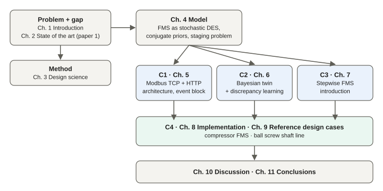
Figure 1.1 Structure of the thesis and the four contributions.
The thesis connects six bodies of knowledge that are usually treated separately: flexible manufacturing systems (Section 2.2), digital twins (2.3), simulation for production system design (2.4), uncertainty of simulation inputs and its reduction by data (2.5), production ramp-up (2.6), industrial communication with low-cost technology (2.7), and manufacturing modernisation in small and medium-sized enterprises (SMEs) and emerging economies together with staged capacity investment (2.8). Each section ends with what the thesis takes from it and what is missing. Section 2.9 reports the systematic review that examined where these bodies of knowledge meet; Section 2.10 states the gap.
A flexible manufacturing system is a group of numerically controlled machine tools connected by an automated material handling system and controlled by a central computer, able to process a family of parts in varying mix and quantity with little changeover effort. Browne et al. (1984) classified FMS by their flexibility types — machine, process, product, routing, volume, expansion, operation and production flexibility — and by their structure, from flexible machining cells with a single machine and a pallet changer to flexible transfer lines. Sethi and Sethi (1990) surveyed the many definitions of manufacturing flexibility and showed that flexibility is not one property but a set of capabilities whose value depends on the uncertainty a company faces. Reconfigurable manufacturing systems (Koren et al., 1999) extended the idea from flexibility within a fixed configuration to the ability to change the configuration itself — adding or removing machines and capabilities as demand changes, which is the logic of the stepwise introduction studied here.
Classical FMS research produced analytical models for design and planning: closed queueing networks for capacity and work-in-process with a limited number of pallets, and mathematical programming for part-type selection, machine grouping, loading and tool allocation (Stecke, 1983; Buzacott and Shanthikumar, 1993). These models give insight and fast answers, but they rest on exponential or deterministic times and steady state. Discrete-event simulation (Section 2.4) became the standard tool for detailed design because it represents blocking, failures, dispatching rules and transport realistically.
Industrial experience with FMS has been mixed: high investment, complex control and long ramp-up have repeatedly led to systems that did not reach their planned output or flexibility. Recent work integrates FMS with Industry 4.0 technologies — robots, connected machine tools, MES and digital twins (Florescu, 2024; Ullah and Younas, 2024; Kampa et al., 2026). For companies that operate standalone CNC machines, the move to an FMS is a large and largely irreversible step, which is why the thesis treats it as a sequence of smaller decisions under uncertainty (Chapter 7).
Taken from 2.2: the FMS concept, its flexibility types and the reconfiguration logic. Missing: methods that support the transition from standalone CNC machines to an FMS and quantify, during that transition, how far the design assumptions hold.
The digital twin concept is usually traced to product life-cycle management, where Grieves described a virtual representation of a physical product linked to it by data over its life cycle (Grieves and Vickers, 2017). In manufacturing, the term has been used for very different artefacts, from 3D models to simulation models with live data. Kritzinger et al. (2018) proposed the most widely used classification by data flow: a digital model exchanges data with the physical object only manually, a digital shadow receives data automatically from the physical object, and a digital twin exchanges data automatically in both directions. Their review found that most publications were concept papers and that applied case studies concentrated on the lower integration levels. Later reviews mapped applications, enabling technologies and research issues (Negri et al., 2017; Tao et al., 2019; Lu et al., 2020; Fuller et al., 2020) and, most recently, a taxonomy along life-cycle stage, hierarchy level, model characteristics, digital-thread connectivity and deployment (Seipolt et al., 2025).
ISO 23247 (2021) defines a framework for digital twins in manufacturing with four functional entities: observable manufacturing elements, a data collection and device control entity, a digital twin core entity and user entities. The architecture of Chapters 5 and 8 is aligned with it: PLCs and machines are the observable elements, the Modbus/HTTP gateway is the data collection entity, the Bayesian twin and the DES form the core, and MES, ERP and the browser interface are the user entities.
Most manufacturing digital twins support operation — monitoring, maintenance, scheduling. Fewer address the design phase, where a twin is in fact a simulation model of a system that does not yet exist, and fewer still connect design and operation. Van Beek et al. (2022) argue that the digital twin concept should integrate design decisions and operational data across the life cycle and data from several design instances. Van Ginkel et al. (2025) report that research on digital twins in system design and ramp-up is lacking and explore their implementation in SMEs qualitatively.
Taken from 2.3: the data-flow classification used to classify studies and to position the thesis artefact (a digital shadow that becomes a twin through the staging decisions), and the ISO 23247 architecture. Missing: twins that carry design-stage predictions through commissioning and ramp-up and quantify how good those predictions were.
Discrete-event simulation is the established method to evaluate production system designs before they are built (Law, 2015). Reviews of simulation in manufacturing system design (Jahangirian et al., 2010; Negahban and Smith, 2014) show its use for layout, capacity, buffer sizing, material handling and control rules. The quality of the result depends on the input data: Bokrantz et al. (2017) analysed six industrial simulation cases in automotive companies and found that machine vendors provide failure data only as means, that short stops are filtered out of monitoring data, and that faulty or outdated data hinder input modelling. Design-stage simulation is therefore typically run with point estimates or fixed distributions chosen by engineering judgement; its predictions are rarely compared with the real system after start-up. Among the reviewed studies (Section 2.9), Konstantinov et al. (2022) are an exception: they compared design-stage simulated cycle times of an assembly station with the commissioned station and found 17 % deviation before and 8.7 % after manual recalibration.
Taken from 2.4: DES as the evaluation model (Chapters 4, 6, 7), the input-data problem as motivation. Missing: a systematic way to update design-stage simulation inputs with commissioning and ramp-up data and to measure the effect.
When the input distributions of a simulation are estimated from finite data, their parameters are uncertain, and this input uncertainty propagates to the output. The simulation literature distinguishes three families of methods to quantify it (Barton, 2012): the delta method, which separates the variance contributions of stochastic and parameter uncertainty using a Taylor approximation (Cheng and Holland, 1997); bootstrap resampling of the input data, often with metamodels to save simulation effort; and Bayesian methods, which place distributions on the parameters and sample from their posterior (Chick, 2001; Zouaoui and Wilson, 2003). Masciarelli and Matta (2022) applied metamodel-assisted bootstrapping to a lab-scale manufacturing line with few data and noted that Bayesian approaches are computationally demanding when the posterior must be sampled for many simulation runs.
Kennedy and O'Hagan (2001) formulated Bayesian calibration of computer models with an explicit model-discrepancy term: observations equal the model output at the true parameters plus a systematic discrepancy plus noise. Without the discrepancy term, calibration forces the parameters to absorb structural model error. Chapter 6 adopts this idea in a simple sequential form and shows experimentally that, during ramp-up, parameter uncertainty alone yields over-confident predictions.
Recent manufacturing work updates simulation inputs from operating data: Schumacher et al. (2024) fit and re-fit probability distributions of processing times and scrap rates to data from a real production system ("live fitting") as input for simulation-based scheduling; Fu et al. (2025) update operation-time distributions from PLC timer data and trigger line reconfiguration; Monek and Fischer (2023) extract DES input parameters automatically from a low-cost inertial sensor and PLC data. These works update twins in operation; none starts from design-stage priors and follows a new system through ramp-up.
Taken from 2.5: the Bayesian view of input uncertainty, conjugate models for cheap exact updates (Gelman et al., 2013 [verify edition]), the separation of epistemic and aleatory uncertainty, model discrepancy. Missing: sequential Bayesian updating of production system models from design priors through commissioning and ramp-up, with evaluated prediction quality.
Ramp-up — the period from the start of production to the planned output — is characterised by low output, high scrap, frequent disturbances and rapid learning. Terwiesch and Bohn (2001) modelled ramp-up as a trade-off between producing and learning, and showed that deliberate experimentation can shorten it. Surbier et al. (2014) reviewed the ramp-up literature and identified the lack of quantitative decision support for the ramp-up phase as a main challenge. Learning curves, dating back to Wright (1936), describe how unit time falls with cumulative output and underlie the explicit learning-curve option of Section 4.6.5. In the systematic review (2.9), no study collected and used data during the ramp-up of a new system with a digital twin.
Taken from 2.6: the ramp-up phenomenon (shape of the virtual ramp-up, Table 6.1; forgetting factor). Missing: twin-based prediction and decision support during ramp-up.
Industrial communication is organised in levels from field devices to enterprise systems (IEC 62264). For digital twins the literature favours OPC UA (IEC 62541), which provides an information model and secure client-server and publish-subscribe communication, MQTT (ISO/IEC 20922) as a lightweight publish-subscribe protocol, and MTConnect for machine tools [verify standard number]. Modbus TCP — a simple request-response protocol over TCP/IP with 16-bit registers (Modbus Organization, 2006, 2012) — is supported by almost every PLC, including low-cost controllers, but is rarely considered in digital twin research.
Retrofit studies connect legacy machines without replacing their controls: edge devices with containerised modules (Tonejca et al., 2024), cameras with object tracking (Ward et al., 2021), inexpensive inertial sensors (Monek and Fischer, 2023), open-source IoT frameworks for co-engineering in brownfield factories (Wintercorn et al., 2023), and open-source messaging and dashboards in an SME (van Ginkel et al., 2025, who measured a PLC-to-twin delay of 0.98–3.02 ms). These works show feasibility; performance limits — latency, data loss, capacity, cost — are rarely measured.
Taken from 2.7: the levels, the request-response nature of Modbus, retrofit patterns. Missing: a Modbus-TCP-and-HTTP -only twin architecture with measured limits and a solution for the event loss inherent in polling (Chapter 5).
Reviews report that SMEs face specific barriers to digital twins and Industry 4.0 — limited capital, skills and data, and the difficulty of integrating heterogeneous equipment — and propose staged adoption paths (systematic review of the digital and green transition of European manufacturing SMEs, 2025 [complete authors]). A 2026 review of digital twin adoption in emerging economies notes that most of the evidence comes from developed countries (Cassius et al., 2026, weak venue). Studies located in emerging economies analyse current-state systems with DES — an aluminium casting SME in Malaysia (Kamar et al., 2024), a bottled-water SME in Nigeria (Odedairo and Nwabuokie, 2018), packaging lines moving to AGVs in Indonesia (Purwaningsih et al., 2025) — or use synthetic data (Parameswari et al., 2026); Ullah and Younas (2024) built a prototype FMS because no industrial FMS was accessible in their country; Tuhin et al. (2026) propose a phased digitalisation path for a machining cell in Bangladesh.
Capacity expansion under uncertainty is a classical operations research problem (Luss, 1982; Van Mieghem, 2003): when to add how much capacity of which type, given uncertain demand and economies of scale. Real-options theory values the flexibility to defer, stage or abandon investments (Trigeorgis, 1996); conditional value-at-risk provides a coherent risk measure for such decisions (Rockafellar and Uryasev, 2000). These models usually treat the demand as uncertain and the capacity effect of an investment as known. In the transition to an FMS, the capacity effect itself is uncertain, because the real performance of new machines and processes is unknown until they run — the uncertainty that the Bayesian twin reduces.
Taken from 2.8: the context, staged investment logic, CVaR. Missing: staged FMS investment decisions that learn the uncertain capacity effect from shop-floor data.
A systematic review following PRISMA 2020 (Page et al., 2021) examined where the topics of Sections 2.2–2.8 meet. Four review questions were asked: SQ1 architectures and communication, especially low-cost technology; SQ2 representation and updating of input uncertainty; SQ3 use in design, commissioning and ramp-up and validation of predictions; SQ4 SMEs, emerging economies and the transition from standalone CNC to FMS. OpenAlex was searched on 13 November 2026 with three strings combining a digital twin / simulation block, a manufacturing system block and a topic block (uncertainty; life-cycle phase; context). Of 486 records, 445 remained after duplicate removal; title/abstract screening excluded 241; 204 reports were eligible for full-text assessment, of which the 42 available in open access were assessed and 28 studies included. Screening and data extraction were assisted by a large language model under a written protocol and verified by the author (Chapter 3). Figure 2.1 shows the selection; the full method and the extraction table are in paper 1.
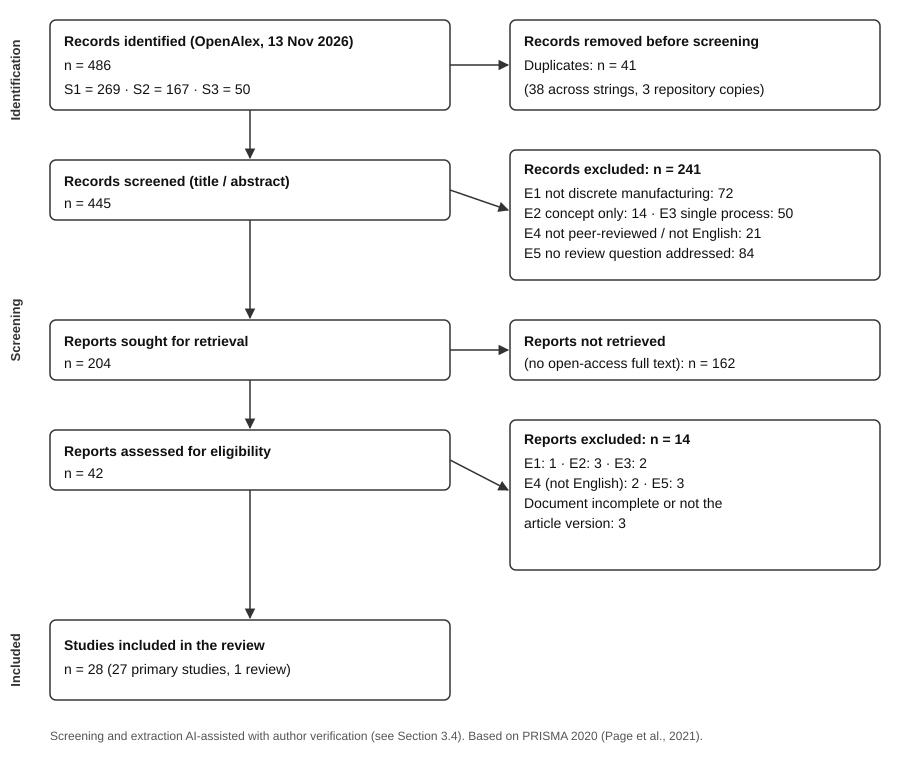
Figure 2.1 PRISMA 2020 flow diagram of the systematic review.
Table 2.1 Main findings of the review (n = 28).
| Dimension | Finding |
|---|---|
| Integration level | digital model 18, digital shadow 6, digital twin 3 (one only claimed), review 1 |
| Communication (SQ1) | not stated 12; OPC UA 6; TCP/IP 2; Profinet 2; MQTT, Beckhoff ADS, REST/HTTP, CoAP, RS485 once each; Modbus 0 |
| Uncertainty (SQ2) | explicit in 12 (fixed distributions 9, empirical 1, scenarios 2); deterministic 5; not stated 11 |
| Updating with real data (SQ2) | automatic in 2 (Fu et al., 2025; Monek and Fischer, 2023); manual in 3; Bayesian 0 |
| Life-cycle phase (SQ3) | design 18, commissioning 8, operation 14; ramp-up with data 0 |
| Validation against reality (SQ3) | 5; design-stage prediction vs commissioned system: 1 (Konstantinov et al., 2022) |
| Context (SQ4) | SME 7, large 3, both 1, laboratory 8, not stated 9; emerging economies 7; CNC → FMS transition with data 0 |
| Quality | mean score 3.7 of 6 |
The concept matrix of paper 1 (Table 5 there) codes seven features per study. No study combines automatic updating with the commissioning or ramp-up phase; no study combines automatic updating, ramp-up and validation against reality; no study combines low-cost technology with an emerging-economy case and real validation. A recent review of CAD–DES integration (Chikwata et al., 2026) independently reports that model accuracy over the system life cycle is hardly measured.
One database was searched and only open-access full texts (42 of 204) were assessed; the gap statements therefore mean "not found in the open-access literature" and should be re-checked against subscription journals. Screening and extraction were AI-assisted with author verification. These limitations are reported in full in paper 1, Section 5.5.
From Sections 2.2–2.9 five gaps follow, each addressed by a part of the thesis:
| Gap | Statement | Addressed in |
|---|---|---|
| G1 | Design-stage predictions of production system models are almost never validated against the commissioned system and never followed through ramp-up. | Ch. 4 (frozen-prediction protocol), Ch. 6, Ch. 9.7 |
| G2 | Input parameters are not updated sequentially from design priors with commissioning and ramp-up data; Bayesian updating with plant data is absent. | Ch. 4, Ch. 6 (C2) |
| G3 | Low-cost data paths are demonstrated qualitatively; Modbus TCP is not evaluated; polling-induced event loss is not addressed. | Ch. 5 (C1) |
| G4 | No method supports the staged transition from standalone CNC to FMS with learning of the uncertain capacity effect. | Ch. 7 (C3) |
| G5 | Evidence from emerging economies stops at current-state models or synthetic data. | Ch. 9 (C4) |
The research questions of Chapter 1 follow directly: RQ1 addresses G3, RQ2 addresses G1 and G2, RQ3 addresses G4; the cases of Chapter 9 address G5.
FMS research provides the system concept and the reconfiguration logic; digital twin research provides definitions and a reference architecture but concentrates on operation and on lower integration levels; simulation research provides the evaluation model and the methods for input uncertainty, but design-stage models are rarely updated or validated; calibration research provides the discrepancy concept; ramp-up research describes the phase but lacks twin-based decision support; communication research favours technologies that the target companies cannot use and does not address polling losses; and capacity-investment research treats capacity effects as known. The systematic review of 28 studies confirmed that no published work combines these elements. Chapters 4–9 close the five resulting gaps.
The thesis develops artefacts — a data-path architecture, a Bayesian twin method, a decision method for staged investment — and evaluates whether they solve a practical problem better than existing approaches. This is the situation for which design science research (DSR) was formulated: research that creates and evaluates artefacts intended to solve identified organisational problems, with rigour derived from the knowledge base and relevance derived from the application environment (Hevner et al., 2004). The process follows the six activities of Peffers et al. (2007):
| DSR activity | In this thesis |
|---|---|
| 1 Problem identification and motivation | industrial context (Ch. 1), state of the art and systematic review (Ch. 2) |
| 2 Objectives of a solution | research questions RQ1–RQ3, hypotheses H1–H4, requirements (Tables 5.1, Section 8.1) |
| 3 Design and development | artefacts C1–C3: architecture with event block (Ch. 5), Bayesian twin with discrepancy learning (Ch. 4, 6), staging decision method (Ch. 7); implementation (Ch. 8) |
| 4 Demonstration | reference design cases: compressor FMS, ball screw line and Roots blower extension sharing the FMS cell (Ch. 9) |
| 5 Evaluation | laboratory measurements (Ch. 5), controlled computational experiments (Ch. 6, 7, 9), planned field validation (Section 9.7) |
| 6 Communication | thesis, paper 1 (systematic review), papers 2–4 (planned), browser implementation in the twin |
DSR fits the target context because the problem is practical and urgent (a company must decide how to introduce an FMS), the artefacts can be built and used, and their utility can be evaluated quantitatively against baselines.
Table 3.1 Research design.
| RQ1 – architecture | RQ2 – Bayesian twin | RQ3 – staged introduction | |
|---|---|---|---|
| Artefact | Modbus TCP + HTTP reference architecture, event-preserving register block, sizing formulas | conjugate updating with forgetting, nested Monte Carlo prediction, discrepancy learning, frozen-prediction protocol | rolling-horizon decision rule with screening model and Bayesian information |
| Hypothesis | H1 | H2, H3 | H4 |
| Evaluation method | analytical model + laboratory measurement campaign | controlled computational experiment (virtual ramp-up with hidden truth), transfer to a second line and a third, cell-sharing product family | controlled computational experiment (hidden factories, uncertain demand) |
| Baselines | state-only polling; sequential vs parallel gateway | deterministic design model (B0), one-time calibration (B1), frozen prior (P0), output-level correction (B0D) | all-at-once (ALL), plan fixed at design (STATIC), demand-only learning (ADAPT_DEM), perfect-information rule (PI_RULE) |
| Measures | latency, event loss, cycle time, throughput, bandwidth | MAPE, coverage, interval width, bias, bottleneck identification, epistemic share | incremental NPV, CVaR, capital, short stages, regret |
| Data | measured on the bench (emulated PLC timing) | simulated | simulated |
| Field validation | real PLCs (Section 5.8) | real ramp-up (Section 9.7) | half-yearly decisions in the case factory |
No single evaluation can establish the utility of the artefacts. The thesis therefore combines three layers, each compensating a weakness of the others:
Simulation experiments follow established practice (Law, 2015): verified models (Section 8.3: 11 of 11 hand-calculation tests; Section 6.4.1: static-bound check; Section 7.3.3: screening model vs DES, 1.2 % mean deviation), explicit random-number seeds, replications sufficient for the precision required, and common random numbers when alternatives are compared on the same scenario (Chapter 7). Scenario generators (Table 6.1) are documented as assumptions and varied in sensitivity analyses (prior weight × 0.25 / 1 / 4; risk aversion β = 0 / 0.5; one-at-a-time variation of economic parameters).
The communication bench (Section 5.7) logs the true time of every event in the same high-resolution clock as the gateway, so that latency and loss are computed exactly rather than estimated. Each configuration runs for 60 s; events are counted only between each machine's first and last poll. Two platform pitfalls found during the work (coarse system clock, early asynchronous timers on Windows) led to the rejection of two complete campaigns; only the third, corrected campaign is reported.
Results are reported with their sample sizes; no claim is made beyond the simulated or measured setting in which it was obtained.
The literature review follows PRISMA 2020 with a pre-defined protocol (Doctor paper/51_slr_protocol.md): review questions, search strings, eligibility criteria with exclusion codes, screening, quality scoring and a fixed extraction form. Deviations (single database, open-access full texts only, AI-assisted screening) are logged and reported.
Labelling. Every number in the thesis carries one label: design estimate (from the factory design), assumption (modelling choice), reference estimate (engineering estimate used in place of unavailable company data), calculated, simulated, measured or cited. Simulated results are never presented as measured, and reference estimates are never presented as company data.
Data management. Raw results are written by scripts to thesis/data/ and never edited by hand; tables and figures are generated from them; the browser implementation reads a generated data file. Prediction records are append-only and dated (the frozen design prediction P0 of case 1 was stored on 13 November 2026).
Reproducibility. All code uses the Python standard library only; every table and figure can be reproduced with one command listed in thesis/README.md; seeds are fixed; the Python reference and the browser implementation were cross-checked number by number (Section 8.5).
Human subjects. The research involves no experiments with people and no personal data. Field data of the case factory are machine and production data; they will be anonymised (no prices, customers or employee data) before publication, and their use will be agreed in writing with the company.
Confidentiality. Economic values in the thesis are reference estimates; real quotations, if used, will be reported only in relative or anonymised form.
Use of AI assistance. A large language model (Claude, Anthropic) was used as a research assistant under the direction of the author: to execute the literature search and pre-screen titles and abstracts against written criteria, to extract data from full texts into a fixed form, to write and run the analysis, simulation and measurement code, and to draft and edit text. All criteria, research questions, interpretations and conclusions are the author's responsibility; AI-produced screening decisions, extractions, code results and text are verified by the author before submission. This statement will be adapted to the rules of the university and of each journal, which must be checked before submission (some institutions require a specific declaration form or restrict AI use in thesis writing).
The thesis follows design science research: it builds three artefacts for a practical problem and evaluates them in three layers — analytical, controlled experimental and field — with explicit baselines, paired comparisons, sensitivity analyses and a strict labelling of data. Two layers are complete; the field layer is specified in detail and its design prediction already frozen. The use of AI assistance is declared and remains under the author's responsibility.
Chapters 2 and 3 established the research gap and the research design. This chapter provides the formal basis for the contributions of the thesis. It defines (i) the flexible manufacturing system (FMS) as a stochastic discrete-event system, (ii) the performance measures used throughout the thesis, (iii) the uncertain input parameters and how they are represented by probability distributions, (iv) the conjugate Bayesian models with which these distributions are updated from shop-floor data during commissioning and ramp-up, (v) the measures with which the quality of twin predictions is judged, including the frozen-prediction protocol, and (vi) the stepwise introduction of the FMS as a decision problem under uncertainty.
The chapter answers the modelling part of the three research questions: Section 4.6 is the mathematical core of RQ2, Section 4.8 defines how predictions are validated, and Section 4.9 formulates the decision problem of RQ3. The communication architecture (RQ1) is treated in Chapter 5; it determines which observations are available to the models defined here (Table 4.1).
Figure 4.1 shows the overall logic. The physical FMS produces events (state changes, cycle completions, quality results). The gateway of Chapter 5 turns them into observations. The Bayesian models of Section 4.6 turn observations into posterior distributions of the parameter vector θ. The discrete-event simulation (DES) propagates these distributions into predictive distributions of performance. The staging optimisation of Chapter 7 uses these predictions to decide the next investment step.
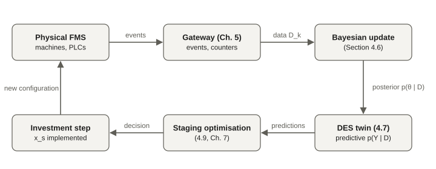
Figure 4.1 Information loop of the uncertainty-aware twin.
| Symbol | Meaning | Unit |
|---|---|---|
| ℳ | set of station types (machine groups), m ∈ ℳ | – |
| cm | number of identical servers (machines) of type m | – |
| 𝒫 | set of product variants, p ∈ 𝒫, with mix share πp, Σp πp = 1 | – |
| Rp | routing of variant p: ordered list of station types | – |
| tpm | processing (cycle) time of variant p on station type m | s |
| hm | handling time per part (pallet change, load/unload not parallel to cutting) | s |
| λm | failure rate of a machine of type m; MTBFm = 1/λm | 1/h |
| μm | repair rate; MTTRm = 1/μm | 1/h |
| qpm | scrap probability per part | – |
| Bj | capacity of buffer j; Npal number of pallets; NAGV number of AGVs | parts / – |
| θ | vector of all uncertain parameters (λ, μ, t, q, …) | – |
| x | configuration / investment decision vector | – |
| H | productive hours per period (month) | h |
| Dk | observations collected in period k | – |
| Yk | performance in period k (e.g. good output) | parts |
| Ŷk | twin prediction of Yk | parts |
The FMS is modelled as an open network of station types connected by buffers and a transport system. Each station type m has cm identical servers. A part of variant p visits the station types in the order Rp. Pallets circulate in a closed loop within the machining cell, which limits the work-in-process (WIP) of the cell to Npal. Transport between areas is performed by AGVs or conveyors. Release of work orders to the cell and the choice of the next part at each machine follow dispatching rules (for example earliest due date, EDD), which are part of x.
Each server is at any time in one of the states processing, idle (starved), blocked, down (failure or repair), or setup. These states are exactly the states transmitted by the machine interface of Chapter 5 (status word), so that model and data use the same vocabulary — a deliberate design choice that makes the Bayesian updates of Section 4.6 directly computable from machine data.
The compressor FMS (case 1, Chapter 9) produces three variants of V-type two-cylinder piston air compressors (VC10, VC20, VC30) with mix shares 0.3 / 0.5 / 0.2 [design estimate]. Table 4.2 lists the 13 station types of the current design with cycle times per variant, handling time, reliability and scrap parameters [design estimate]. The crankcase cell is a pallet-based FMS with three horizontal machining centres (HMC) with pallet changers; the remaining areas (cylinder and crankshaft machining, assembly, test, paint, final assembly, packing) are connected by AGVs and buffers.
Table 4.2 Station types of the compressor FMS – design estimates (source: FMS design model, version of 2026-11-13).
| Type m | cm | t VC10 / VC20 / VC30 [s] | t̄m [s] | hm [s] | MTBF [h] | MTTR [min] | qm |
|---|---|---|---|---|---|---|---|
| LOAD | 1 | 80 / 90 / 100 | 89.0 | 0 | 200 | 5 | 0 |
| HMC | 3 | 270 / 345 / 450 | 343.5 | 15 | 30 | 20 | 0.008 |
| WASH | 1 | 130 / 150 / 170 | 148.0 | 0 | 80 | 10 | 0 |
| VMC | 1 | 85 / 100 / 125 | 100.5 | 0 | 35 | 15 | 0.010 |
| HONE | 1 | 75 / 90 / 110 | 89.5 | 0 | 45 | 12 | 0.008 |
| LATHE | 1 | 140 / 170 / 210 | 169.0 | 0 | 30 | 15 | 0.010 |
| GRIND | 1 | 160 / 190 / 230 | 189.0 | 0 | 40 | 18 | 0.012 |
| ASSY | 1 | 170 / 200 / 240 | 199.0 | 0 | 120 | 8 | 0.003 |
| ROBOT | 1 | 95 / 110 / 130 | 109.5 | 0 | 70 | 10 | 0.002 |
| TEST | 2 | 300 / 360 / 420 | 354.0 | 0 | 90 | 10 | 0 |
| PAINT | 1 | 130 / 160 / 200 | 159.0 | 0 | 60 | 15 | 0.006 |
| FINAL | 1 | 180 / 210 / 250 | 209.0 | 0 | 120 | 8 | 0.002 |
| PACK | 1 | 100 / 120 / 140 | 118.0 | 0 | 80 | 6 | 0 |
The mix-weighted mean cycle time is t̄m = Σp πp tpm; for the HMC, t̄HMC = 0.3 · 270 + 0.5 · 345 + 0.2 · 450 = 343.5 s.
Figure 4.2 shows the planned hall (96 m × 50 m) of the case factory. Raw castings and forgings arrive at the goods-in dock and are stored in a raw-material automated storage and retrieval system (AS/RS: 28 bays × 7 levels × 2 sides = 392 unit-load locations, one stacker crane). Two automated guided vehicles (AGVs) run along the main aisle and connect the AS/RS input/output point with the load station of the crankcase cell, the assembly area and, at the end of the line, the finished-goods AS/RS at the shipping dock. The three part lines (crankcase, cylinder, crankshaft) are machined in parallel areas on the left; pump assembly, the robot station for the cylinder heads, two performance test benches, paint, final assembly and packing follow from left to right. A utility annex outside the north wall holds the transformer, the compressed-air station, the central coolant system and the server / OT room in which the control PC of Chapter 8 is installed.
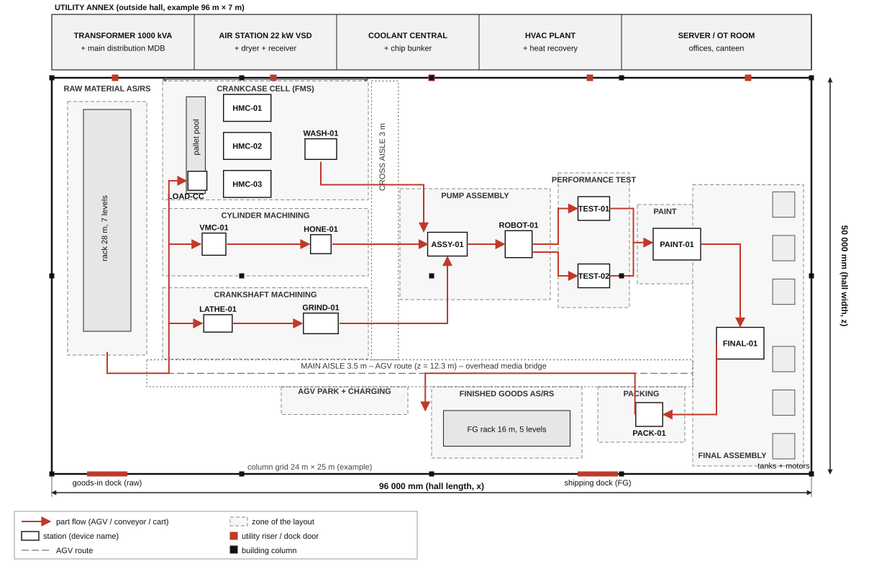
Figure 4.2 Planned layout of the compressor factory: areas, stations (device names), part flow and AGV route [design example; positions from the factory configuration, not to scale for construction].
Figure 4.3 gives the routing of each part family with operation numbers and VC20 cycle times. The crankcase (grey cast iron EN-GJL-250) is the only part that is machined in a pallet-based flexible cell: it is clamped on a fixture pallet at the load station (OP10), machined complete on one of the three HMCs (OP20/30: faces, cylinder bores, bearing bores, threads; 345 s plus 15 s pallet change for VC20), washed (OP40) and checked for leaks before it meets the cylinders and the crankshaft at the kit check of pump assembly (OP60). The cylinder and crankshaft lines are dedicated flow lines that deliver into kanban supermarkets; this decouples them from assembly so that the crankcase cell, which follows the work-order sequence (earliest due date), is the only part line that needs real-time scheduling. The VC20 work content of one compressor is 2 485 s (41.4 min) over 13 operations [design estimate].
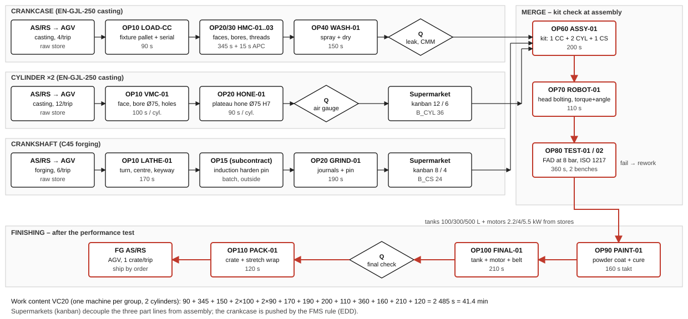
Figure 4.3 Part routings of the compressor FMS with operation numbers, stations and VC20 cycle times; diamonds are inspections [design estimate].
The crankcase cell (Figure 4.4) is the flexible core of the factory and the part of the system that the term FMS refers to in the narrow sense (Section 2.2.1): three identical HMCs, each with a two-position pallet changer that offers one transfer location to the cell, share a common pool of 12 fixture pallets. A rail-guided shuttle moves one pallet at a time between 16 numbered locations: rack locations 1 – 12, the load station (location 13) and the changers of HMC-01 to HMC-03 (locations 14 – 16). Eight pallets carry fixture type A (VC10 and VC20 crankcases, same clamping concept) and four carry fixture type B (VC30). One operator at the load station unloads machined crankcases and clamps raw castings; the load station therefore serves every part twice, which makes it a candidate bottleneck even though its static capacity in Table 4.3 (89 s per load) looks ample. With a move time of 12 s + 2 s per location distance [example], a typical part needs three shuttle moves when the load station is busy (load station → HMC, HMC → rack, rack → load station), or two when it is free. Each HMC holds a tool magazine of 18 tools with sister tools for the fast-wearing taps and drills; tool life is managed by the CNC and supervised by the tool management of Section 8.9. Every device of the cell — the pallet system with its shuttle, the load station and the three HMCs — is a Modbus TCP server with the standard interface of Chapter 5, so that the same signals serve the real-time control (Chapter 8) and the Bayesian updating of the twin (Section 4.6).
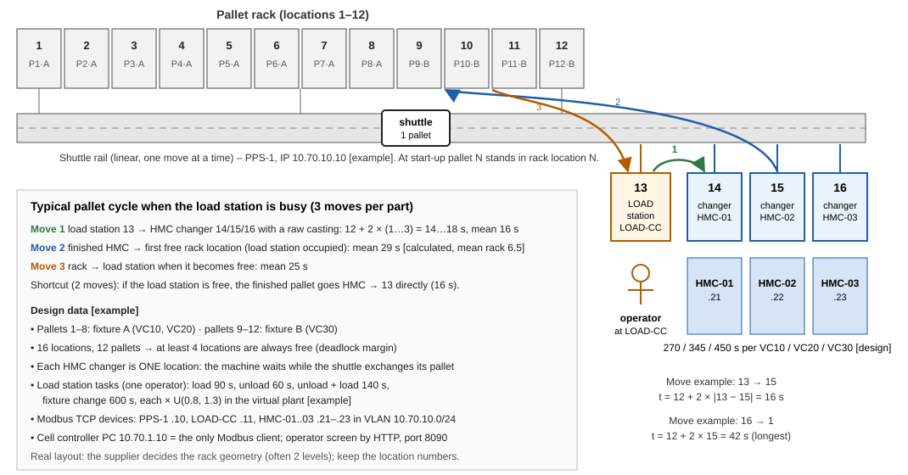
Figure 4.4 The crankcase FMS cell: 12 fixture pallets, 16 numbered locations, shuttle moves of a typical pallet cycle and design data [design example].
The cell is a closed system with respect to pallets: its work-in-process can never exceed Npal = 12, and the relation between the number of pallets and the throughput is non-linear (Section 9.2.5). The static model of Section 4.4.1 treats the cell as one station type with cHMC = 3; the process-level analysis of Section 9.2.5 quantifies what this simplification misses.
Before any simulation, the static capacity of each station type gives a first, optimistic estimate. With steady-state availability
the number of good parts a station type can deliver in H productive hours is
The static bottleneck is m* = argminm Cm and the static system capacity is C* = Cm* (assuming one part of each station type per compressor). With H = 330 h per month (two shifts of 7.5 productive hours, 22 days) [assumption], Table 4.3 results.
Table 4.3 Static monthly capacity, Eq. (4.2) [calculated from design estimates].
| Type | Am | Cm [parts/month] | Type | Am | Cm [parts/month] | |
|---|---|---|---|---|---|---|
| LOAD | 0.9996 | 13 343 | GRIND | 0.9926 | 6 164 | |
| HMC | 0.9890 | 9 754 | ASSY | 0.9989 | 5 945 | |
| WASH | 0.9979 | 8 010 | ROBOT | 0.9976 | 10 802 | |
| VMC | 0.9929 | 11 620 | TEST | 0.9982 | 6 699 | |
| HONE | 0.9956 | 13 109 | PAINT | 0.9959 | 7 396 | |
| LATHE | 0.9917 | 6 902 | FINAL | 0.9989 | 5 667 | |
| PACK | 0.9988 | 10 055 |
Example (HMC): A = 30 / (30 + 0.333) = 0.9890; C = 3 · 0.9890 · 3600 · 330 / (343.5 + 15) · (1 − 0.008) = 9 754 parts per month.
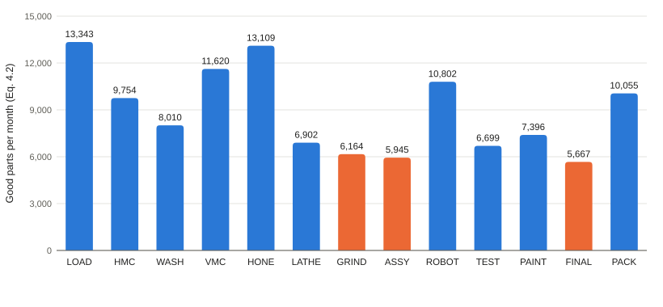
Figure 4.5 Static monthly capacity per station type; the three most loaded stations are highlighted [calculated].
The static bottleneck is FINAL (5 667 parts/month), followed closely by ASSY (5 945) and GRIND (6 164). Three observations motivate the rest of this chapter. First, the margin between the three most loaded stations is small (about 9 %), so a moderate error in a design-stage cycle time can move the bottleneck. Second, Eq. (4.2) ignores blocking, starvation, pallet and transport limits, and the variability of failures; the DES of Section 4.7 captures these effects and typically yields a lower throughput. Third, every quantity in Eq. (4.2) is uncertain at design time — which is the subject of Section 4.5.
The DES delivers, for each period k: good output Yk; throughput rate TH; overall equipment effectiveness per machine,
with A = run time / planned time, P = (ideal cycle time × parts) / run time, Q = good parts / parts; mean lead time W; and mean work-in-process L, linked by Little's law L = TH · W, which is used as a consistency check of both model and data.
At design time the following inputs are uncertain: cycle times tpm (supplier time studies, often for ideal conditions); failure rates λm and repair rates μm (vendors usually state only a mean, if anything — a problem documented by Bokrantz et al. (2017)); scrap rates qpm; and, during ramp-up, the learning behaviour of operators and processes. Demand is also uncertain but is treated as an external scenario variable in Chapter 7.
Two kinds of uncertainty must be separated. Aleatory uncertainty is the natural variability of the process: even with perfectly known parameters, the time to the next failure is random. Epistemic uncertainty is lack of knowledge about the parameters themselves: the true MTBF of a new HMC is not known before it has run. A deterministic design model ignores both; a classical stochastic DES with fixed distributions captures only aleatory uncertainty. The approach of this thesis represents both: aleatory uncertainty through the sampling distributions in the DES, and epistemic uncertainty through probability distributions on θ. Only epistemic uncertainty can be reduced by data, and its reduction over commissioning and ramp-up is precisely what Section 4.6 models and Chapter 6 measures.
Engineers and suppliers do not state probability distributions; they state a value and, at best, a confidence. The method therefore translates design statements into prior distributions with one interpretable confidence parameter: the equivalent amount of data the statement is worth (equivalent operating hours, repairs, cycles or parts). A supplier MTBF from a large installed base may be worth several thousand operating hours; an estimate for a newly designed station may be worth only a few hundred. This "equivalent sample" interpretation makes the prior transparent and allows a sensitivity analysis on the confidence (Chapter 6). Table 4.4 summarises the four models.
Table 4.4 Conjugate models for the uncertain inputs.
| Quantity | Data model | Prior | Design statement → prior | Observations from machine interface |
|---|---|---|---|---|
| Failures | Poisson process, rate λ | Gamma(a, b) | MTBF0, worth T0 h: b = T0, a = 1 + T0/MTBF0 | number of failures n in uptime T |
| Repairs | Exponential, rate μ | Gamma(a, b) | MTTR0, worth r0 repairs: a = 1 + r0, b = r0 MTTR0 | repair durations r1..rk |
| Cycle time | ln t ∼ 𝒩(m, σ2) | Normal-Inverse-Gamma (m0, κ0, a0, b0) | mode t0, ±spread s (90 %), worth n0 cycles | cycle times t1..tn |
| Scrap | Bernoulli, probability q | Beta(a, b) | q0, worth N0 parts: a = q0 N0, b = (1−q0) N0 | scrap x out of n parts |
Bayes' theorem gives the posterior of the parameters after observing data D:
For general models the integral requires numerical methods (Markov chain Monte Carlo, particle filters), which are computationally heavy and difficult to run and verify on an offline factory PC. For the four quantities of Table 4.4, conjugate priors exist: the posterior belongs to the same family as the prior, and the update reduces to adding sufficient statistics to the hyperparameters. This makes each update exact, a few arithmetic operations long, explainable to maintenance and planning staff ("the prior was worth 300 hours; we have added 310 real hours"), and sequential — the posterior after period k is the prior for period k+1. The parameters of different machines and quantities are assumed a priori independent; the effect of this assumption is discussed in Section 4.10.
If failures of a machine occur as a Poisson process with rate λ during uptime, the likelihood of observing n failures in uptime T is p(n | λ) ∝ λn e−λ T. With prior λ ∼ Gamma(a, b), density ∝ λa−1 e−bλ, the posterior is
Because MTBF = 1/λ follows an inverse-gamma distribution, its posterior mean is
The prior parameters follow from the design statement (Table 4.4): b = T0 and a = 1 + T0/MTBF0, which makes the prior mean of MTBF equal to MTBF0 exactly.
Example 4.1 (HMC failures). Design statement: MTBF0 = 30 h, judged to be worth T0 = 300 h of data [design estimate]. Prior: a = 1 + 300/30 = 11, b = 300; mean MTBF 30.0 h, 90 % credible interval 17.7–48.6 h. In the first commissioning month the machine records n = 14 failures in T = 310 h of uptime [simulated observation]. Posterior: Gamma(25, 610); mean MTBF = 610/24 = 25.4 h, interval 18.1–35.1 h. After a second month with 24 failures in 640 h: Gamma(49, 1250); mean 26.0 h, interval 20.5–32.8 h. The width of the interval falls from 30.9 h (prior) to 17.1 h after one month and 12.4 h after two — the epistemic uncertainty is visibly reduced, while the estimate moves from the optimistic design value towards what the data show.
The posterior predictive number of failures in a future uptime τ is negative binomial, Nτ ∼ NB(a+n, (b+T)/(b+T+τ)), which is used to plan maintenance capacity.
Repair durations ri are modelled as exponential with rate μ. With prior μ ∼ Gamma(a, b) the posterior after k repairs is
Example 4.2 (HMC repairs). Design statement: MTTR0 = 20 min, worth 5 repairs [design estimate]: a = 6, b = 5 · 20 = 100 min (1.667 h); mean 20.0 min, 90 % interval 9.5–38.2 min. Fourteen repairs are observed with a mean of 30.1 min [simulated observation]. Posterior: a = 20, b = 521 min (8.683 h); mean MTTR = 521/19 = 27.4 min, interval 18.7–39.3 min. Repairs on a new machine take longer than planned — typical for the first months, when spare parts and diagnostic routines are not yet established.
If repair times are clearly not exponential (for example log-normal with a long tail), the cycle-time model of Section 4.6.3 is applied to ln r instead; the choice is made with a goodness-of-fit test on the commissioning data.
Cycle times are positive and right-skewed; their logarithm is approximately normal. With y = ln t ∼ 𝒩(m, σ2) and the Normal-Inverse-Gamma prior
the posterior after n observations with mean ȳ and sum of squared deviations S = Σ (yi − ȳ)2 is again Normal-Inverse-Gamma with
The posterior predictive of ln t is a Student-t distribution with 2an degrees of freedom, location mn and scale √(bn (κn + 1)/(an κn)); the mean cycle time is 𝔼[t] = exp(m + σ2/2).
Prior from the design statement. A supplier states the most likely cycle time t0 and a tolerance ± s that covers about 90 % of cycles. Then σ0 = ln(1+s)/1.645; because the mode of a log-normal distribution is exp(m − σ2), m0 = ln t0 + σ02; κ0 = n0 (worth in cycles), a0 = max(2, n0/2) and b0 = σ02 (a0 − 1) so that 𝔼[σ2] = σ02.
Example 4.3 (HMC cycle time, VC20). Supplier statement: t0 = 345 s ± 10 %, worth n0 = 10 cycles [design estimate]. Prior: σ0 = ln 1.10 / 1.645 = 0.0579, m0 = 5.8469, κ0 = 10, a0 = 5, b0 = 0.0134; mean cycle time 346.7 s, 90 % interval of the mean 336.6–357.3 s. Forty cycles are measured during commissioning with a mean of 371.0 s [simulated observation; the "true" mean of the generator is 372 s]. Posterior: κ = 50, m = 5.9014, a = 25, b = 0.0845; mean 366.2 s, interval 361.1–371.3 s. With 40 real cycles against a prior worth 10, the estimate moves 80 % of the way from the design value to the observed mean, as Eq. (4.9) prescribes (κ0/κn = 0.2). A 7 % longer HMC cycle time reduces the HMC capacity of Table 4.3 from 9 754 to about 9 140 parts per month — still not the bottleneck, but the same shift at GRIND or ASSY would change the system capacity directly.
With x scrap parts among n and prior q ∼ Beta(a, b):
Example 4.4 (HMC scrap). Design: q0 = 0.8 %, worth 250 parts: Beta(2, 248), 90 % interval 0.14–1.90 %. Observed in commissioning: 9 scrap parts out of 400 [simulated observation]. Posterior Beta(11, 639): mean 1.69 %, interval 0.96–2.62 %. The data more than double the expected scrap — typical of first-article and setup scrap in the early weeks.
The models above assume that the parameters are constant. During ramp-up they are not: failure rates fall as early faults are removed (the "infant mortality" part of the bathtub curve), cycle times fall as programs are optimised, and scrap falls as operators learn. Two mechanisms are provided.
Exponential forgetting (power prior). Before each update the current hyperparameters are discounted with a factor ρ ∈ (0, 1]:
Information that is j periods old keeps weight ρj; the effective memory is about 1/(1−ρ) periods. With ρ = 1 the standard update results.
Example 4.5. HMC prior as in Example 4.1. Month 1: 18 failures in 300 h (early faults); month 2: 6 failures in 300 h [simulated]. Without forgetting (ρ = 1): Gamma(35, 900), mean MTBF 26.5 h. With ρ = 0.7: Gamma(24.0, 657), mean 28.6 h. The true month-2 behaviour (50 h between failures) is approached faster with forgetting, at the price of wider intervals. The choice of ρ is a trade-off between tracking and stability that Chapter 6 investigates experimentally.
Explicit learning curve. Where a trend is expected, it can be modelled directly, for example t(n) = t∞ (1 + α e−n/τ) for the cycle time after n parts. The parameters t∞, α, τ are then estimated on the log scale by Bayesian linear regression (also conjugate). This is used for the ramp-up curve of the whole line in Chapter 9.
Table 4.5 shows how the observations required by Eqs. (4.5)–(4.11) are computed from the machine interface of Chapter 5. All of them are simple counts, sums and sums of squares, which the gateway can accumulate in real time with constant memory.
Table 4.5 Sufficient statistics and their source.
| Statistic | Computation | Source signal (Chapter 5) |
|---|---|---|
| T uptime | time in states processing, idle, blocked | status word, timestamped transitions |
| n failures | transitions into down with failure code | status word + alarm code |
| ri repair durations | duration of down intervals | status word |
| n, ȳ, S for cycle times | cycle-complete events; y = ln t accumulated by Welford's algorithm | cycle counter + timestamp / cycle-time register |
| x, n scrap | good / scrap counters | 32-bit counters |
The posterior distribution of performance is obtained by nested sampling:
The predictive mean and the (1−α) prediction interval are
By the law of total variance, the predictive variance splits into an epistemic and an aleatory part,
which is estimated from the between- and within-group variance of the nested sample. Eq. (4.13) is used in Chapter 6 to show how the epistemic share decreases as data arrive.
With Nθ outer and R inner samples, the cost is Nθ R DES runs. The Monte Carlo standard error of Ŷ is approximately √(Var(Y)/(Nθ R)) when R is small relative to Nθ; Chapter 6 shows that Nθ = 200, R = 1 – 2 gives a standard error below 0.5 % of monthly output for the case model, which runs in minutes on a standard PC.
For each period k with observed output Yk and prediction Ŷk:
the coverage of the (1−α) prediction intervals, COV = 1/KΣk 1{Yk ∈ PIk}, which should be close to 1−α (calibration), and the mean relative interval width, which should be as small as possible (sharpness). Calibration and sharpness are judged together: a very wide interval is always "right" but useless. Optionally the continuous ranked probability score (CRPS) combines both in one number.
To make the comparison with reality fair, predictions must be fixed before the data they are compared with exist. The protocol is:
Hypothesis H2 of Chapter 1 is tested by comparing Ek of Pk with B0 and B1; H3 by the coverage of Pk.
A company moving from standalone CNC machines to an FMS rarely invests in everything at once. Let the introduction take place over stages s = 1, …, S (for example half-years). At each stage a set of options 𝒪 is available, for example: an additional HMC; a pallet pool of a given size; an automatic tool-management system; AGVs; an AS/RS; a robot cell; the cell controller and MES connection (levels L0–L4 of Section 2.x). The decision xs,o ∈ {0, 1} indicates that option o is implemented at stage s; once implemented an option remains (xs,o ≤ xs+1,o). Precedence relations hold (for example AGVs require the cell controller), written as xs,o ≤ xs,o' for o' ∈ Pre(o).
Given the configuration xs and parameters θ, the DES delivers the good output Ys(xs, θ). With demand Ds, sales are min(Ys, Ds). The net cash flow of stage s is
with contribution margin per unit m, operating cost cop, investment cost co of option o, and penalty κ for unmet demand (lost margin and goodwill). The net present value with discount rate r is NPV = Σs CFs / (1 + r)s.
Because θ is uncertain and becomes better known as the system runs, the problem is a multi-stage decision problem under learning. The decision at stage s may depend on the information ℐs available then (the posterior of Section 4.6). A policy Π maps information to decisions, xs = Πs(ℐs). The objective is
subject to budget limits Σo co (xs,o − xs−1,o) ≤ Ks, monotonicity and precedence. CVaRγ is the conditional value-at-risk (mean of the worst 1−γ share of outcomes) and β ≥ 0 expresses risk aversion; a company in an emerging economy with limited access to capital is typically risk-averse.
Eq. (4.16) is intractable in exact form: the outcome of each configuration requires simulation, and the information state is a distribution. Chapter 7 therefore solves it by a rolling-horizon approximation: at each stage, the current posterior is used to evaluate candidate plans by simulation (sample average approximation), the best first-stage decision is implemented, data are collected, the posterior is updated, and the plan is re-optimised. Three reference policies are compared: all-at-once (full FMS at stage 1), static staged (a staged plan fixed at design time with B0 parameters) and adaptive staged (re-optimised after each Bayesian update) — hypothesis H4.
This chapter formalised the FMS as a stochastic DES, defined the performance measures, and showed that the static bottleneck of the case design lies within a 9 % margin among three stations — so that design-stage errors can move it. It separated aleatory from epistemic uncertainty and translated design statements into priors with an interpretable confidence (equivalent amount of data). For failures, repairs, cycle times and scrap, conjugate models give exact, sequential and explainable updates (Eqs. 4.5–4.11), with a forgetting factor for ramp-up. Nested Monte Carlo propagates the posterior into predictive distributions of performance (Eqs. 4.12–4.13), whose quality is judged by error, coverage and width under a frozen-prediction protocol with two baselines (Section 4.8). Finally, the stepwise introduction of the FMS was formulated as a risk-aware multi-stage decision problem under learning (Eq. 4.16). Chapter 5 defines how the observations required by these models are obtained with low-cost technology, Chapter 6 implements and tests the updating, and Chapter 7 solves the decision problem.
The Bayesian twin of Chapters 4 and 6 needs, for every machine, a stream of state changes, cycle completions, good and scrap counts and repair durations (Table 4.5). This chapter designs and evaluates the architecture that delivers these observations under the constraint that defines the case company and many firms in emerging industries: the only communication technologies available are Ethernet, Modbus TCP and HTTP, the twin runs on an offline PC without cloud services, and the budget excludes commercial IIoT platforms. OPC UA, MQTT brokers, time-sensitive networking and 5G — the technologies that dominate the literature (Chapter 2; 6 of 28 reviewed studies used OPC UA, none Modbus) — are not available.
The chapter answers RQ1: what architecture enables a reliable FMS digital twin with only Modbus TCP and HTTP, and what are its limits? Its contributions are (i) a reference architecture with explicit design rules (5.3), (ii) an event-preserving register block that removes the fundamental weakness of polling — lost short events — at almost no cost (5.4), (iii) closed-form sizing formulas for polling period, capacity, bandwidth, latency, event loss and time-stamp error (5.5), and (iv) a laboratory measurement campaign that tests the formulas and hypothesis H1 (5.7):
Table 5.1 Requirements for the twin's data path.
| Id | Requirement | Source |
|---|---|---|
| R1 | Every state change, cycle, good/scrap part and repair must reach the twin (completeness ≥ 99.9 %) | Bayesian updates (Table 4.5) are biased by lost events |
| R2 | State-change detection latency ≤ 1 s for monitoring; ≤ 1 h is sufficient for model updating | operator displays; monthly update rhythm (Ch. 6) |
| R3 | Event time stamps with error ≤ 1 s (≤ PLC scan time preferred) | repair durations, uptime T in Eq. (4.5) |
| R4 | ≥ 40 machines per gateway, scalable to the ≈ 75 machines of the second case | case factories |
| R5 | Only Ethernet, Modbus TCP (machines) and HTTP/JSON (MES, ERP, browser, twin) | company rule [design] |
| R6 | Runs on one offline industrial PC, standard software only (Python standard library) | offline rule; maintainability |
| R7 | Machine PLCs need only a standard Modbus TCP server and a simple function block | low-cost PLCs (Delta AS, Siemens S7-1200) |
| R8 | Faults (machine offline, slow, wrong data) are detected and flagged, never silently ignored | data quality |
| R9 | No write access from the twin to machine control except a defined command area; safety stays hard-wired | safety, IEC 62443 zoning |
| R10 | Same interface for all machines regardless of supplier | integration effort in a weak supplier market |
The architecture has five layers, aligned with the ISA-95 / IEC 62264 levels used in the factory design:
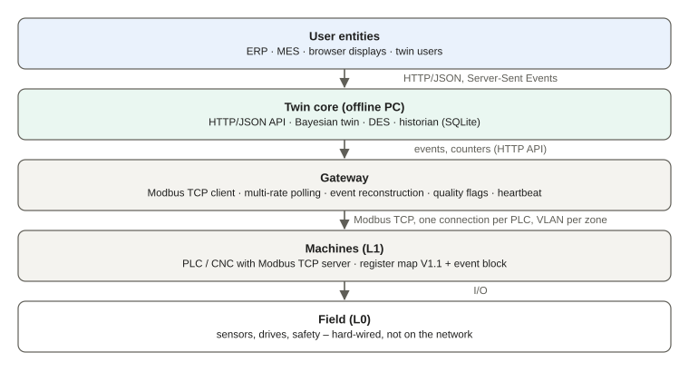
Figure 5.1 Layers of the low-cost twin architecture.
Polling is often regarded as inferior to publish–subscribe (MQTT, OPC UA PubSub): it wastes bandwidth on unchanged values and misses short events. Section 5.5 shows that the bandwidth argument is irrelevant at factory scale (below 3 % of a 100 Mbit/s link for 160 machines), and Section 5.4 removes the event argument by moving event buffering into the PLC. Polling also has advantages that matter in the target context: every low-cost PLC supports a Modbus server; the client controls load and timing; a dead device is detected immediately by a timeout; and no broker has to be installed, secured and maintained.
A gateway that reads the state register every P seconds observes a sample of the state signal. A state that lasts less than P — a short stop, a brief blocking, a quick alarm — may fall between two polls and disappear; a sequence A → B → A within one interval appears as "no change"; and the time of every change is known only to within P. For a monitoring display this is tolerable. For the Bayesian updating it is not: lost short stops bias failure counts n downwards and uptime T upwards in Eq. (4.5), and sampled time stamps distort repair durations in Eq. (4.7).
The remedy is to let the PLC — which sees every change in its scan — keep the history, and let the gateway read it. The event block adds 28 registers to the map (proposed addresses 104–131, version V1.2):
Table 5.2 Event block (EVENT group).
| Offset | Content | Type |
|---|---|---|
| 0–1 | change counter: number of state changes since power-on | UINT32 |
| 2–3 | time of last change, ms (PLC clock) | UINT32 |
| 4–27 | ring buffer, 8 entries × (new state, time ms high word, time ms low word), newest first | 8 × (UINT16 + UINT32) |
On every state change the PLC function block increments the counter, writes the time stamp and inserts the entry into the ring — about ten lines of structured text or ladder in addition to the standard interface. The gateway compares the counter with the value of the previous poll: the difference Δ is the exact number of changes since then, and the newest min(Δ, 8) ring entries give their states and PLC time stamps. If Δ > 8, the gateway knows exactly how many events were lost and flags the interval; nothing is lost silently (requirement R8).
In the laboratory bench (5.7) the block is placed at registers 0–35 together with the core status registers, so that one FC03 request of 36 registers reads everything needed for state monitoring; in the factory map V1.2 it is read together with the FAST group (two requests, or one if the block is relocated to registers 12–19 + 104–131 in a later map version).
A Modbus TCP read request (function code 03) is an application data unit of 12 bytes (7-byte MBAP header + 5-byte PDU); the response for n registers is 9 + 2n bytes. On Ethernet each TCP segment adds about 78 bytes (preamble and inter-frame gap 20, Ethernet header and checksum 18, IPv4 20, TCP 20), and a separate acknowledgement frame occupies at least 84 bytes on the wire. The traffic of one poll is therefore
For the 36-register block, b = 333 bytes [calculated]. With the full multi-rate scheme (FAST 12 registers at 2 Hz, EVENT 28 at 2 Hz, COUNTERS 80 at 1 Hz, ENERGY 4 at 0.1 Hz) one machine generates
i.e. 0.53 Mbit/s for 40 machines and 2.1 Mbit/s for 160 machines — 0.5 % and 2.1 % of a 100 Mbit/s link [calculated]. Bandwidth is not a constraint; latency and PLC response time are.
The round-trip time of one request is RTT = tnet + tPLC. Many PLCs serve Modbus requests at the end of the program scan, so with scan time tscan the waiting time is roughly uniform on [0, tscan] plus a fixed processing time t0:
A sequential gateway (one request after another) needs a cycle time Tc = Σi=1N ki RTTi for N machines with ki requests each. To keep the target period P, the number of machines is limited to
With tnet = 0.05 ms (switched LAN), t0 = 1 ms and tscan = 10 ms [assumption], 𝔼[RTT] = 6.05 ms and Nmaxseq = 165 machines for one request per second, but only 41 machines for two requests every 500 ms; with tscan = 20 ms these numbers halve (90 and 23) [calculated]. A parallel gateway (one concurrent request per machine) has Tc ≈ maxi RTTi + N tgw, where tgw is the gateway's own processing time per request; its capacity is limited by tgw, not by the PLCs.
With the event block, an event is detected at the first poll after it occurred. With effective period Peff = max(P, Tc) the latency L is approximately uniform:
State-only polling. A state segment of duration d is unobserved with probability max(0, 1 − d/Peff). With the event mix of the bench (30 % short pulses of 0.05–0.5 s, 70 % states with exponential duration, mean 5 s [assumption]) the expected share of segments that are never seen is 28 % at P = 1 s, 7 % at 0.25 s and 1.5 % at 0.1 s [calculated]. Changes A → B → A within one interval are lost in addition, so the reported share of changes is lower still.
Event block. Events are lost only if more than 8 occur between two polls. With event rate λ per machine the number of events in one interval is approximately Poisson(λ Peff), so
For the bench's rate λ = 0.28 s−1: 2 × 10−11 at Peff = 1 s, 2 × 10−3 at 10 s, and 0.99 at 60 s [calculated]. The ring depth R is chosen so that Pr{N(λ Peff) > R} is negligible for the slowest expected poll (including a gateway restart); R = 8 covers about 10 s of an unusually busy machine.
State-only polling stamps a change with the poll time; the error is uniform on [0, Peff] with standard deviation Peff/√(12) (0.29 s at P = 1 s). The event block uses the PLC time stamp; its error is the PLC scan time plus the offset of the PLC clock. Because low-cost PLC real-time clocks drift, the gateway writes the reference time to every PLC once per hour (FC16 to two registers of the command area) and measures the offset from the PLC's echo; the residual offset is to be measured on the real PLCs during commissioning (Section 5.8).
All non-Modbus clients use the HTTP/JSON API of the gateway/twin server (Python http.server, threaded): GET /api/state (snapshot of all machines), GET /api/machine/{id}, GET /api/events?since=<id> (reconstructed events for the historian, MES and twin), POST /api/mes/booking (orders, confirmations), GET /api/twin/prediction (current prediction records of Chapter 6). Events carry a monotonic sequence number so that a client that was offline can fetch everything it missed (since=), which gives HTTP the same completeness guarantee as the event block gives Modbus. The historian appends events to SQLite; nothing is overwritten.
The bench (commbench.py) runs two processes on one office PC (Windows Server 2022, 16 logical cores, Python 3.12, standard library only):
Both processes read the same high-resolution clock (time.perf_counter, QueryPerformanceCounter, system-wide), so latencies and losses are computed exactly against the logged truth. Only events between each machine's first (baseline) and last poll are counted.
Two pitfalls found and corrected during the campaign — reported because they invalidate naive measurements on the same platform: (1) time.time() on Windows advances in steps of about 15.6 ms, which made sub-millisecond timings read as zero; (2) asyncio timers on Windows may fire up to one clock tick early, so emulated PLC delays implemented with asyncio.sleep were silently skipped when several requests were pending. The final bench uses perf_counter for all time stamps and thread-based servers with time.sleep at 1 ms timer resolution; a first campaign with the faulty version was discarded.
Limits of the set-up. The network is the loopback interface, so tnet is smaller than on a switched LAN (typically 0.1–0.5 ms per round trip; to be confirmed in 5.8); the PLC behaviour is emulated, not measured. The bench therefore measures the architecture and gateway — capacity, latency, loss, reconstruction — under a stated PLC timing model.
Table 5.3 Measurement results, 60 s per run, 36-register FC03 polls [measured; PLC timing emulated].
| N | Polling | P [s] | tscan [ms] | Cycle mean / p95 [ms] | Achieved rate [Hz] (1 / cycle) | RTT median / p99 [ms] | Events | State-only: changes reported | Event block: loss | Latency mean / p95 / max [s] |
|---|---|---|---|---|---|---|---|---|---|---|
| 10 | sequential | 1.0 | 10 | 66.4 / 84.5 | 1.00 | 6.97 / 11.50 | 148 | 70.3 % | 0.00 % | 0.54 / 0.96 / 1.02 |
| 10 | parallel | 1.0 | 10 | 10.8 / 12.0 | 1.00 | 6.57 / 11.57 | 148 | 70.9 % | 0.00 % | 0.54 / 0.94 / 1.01 |
| 40 | sequential | 1.0 | 10 | 260.8 / 303.7 | 1.00 | 6.51 / 11.58 | 650 | 67.7 % | 0.00 % | 0.52 / 0.96 / 1.03 |
| 40 | parallel | 1.0 | 10 | 11.9 / 12.3 | 1.00 | 6.56 / 11.70 | 650 | 65.1 % | 0.00 % | 0.52 / 0.95 / 1.01 |
| 80 | sequential | 1.0 | 10 | 520.1 / 567.3 | 1.00 | 6.49 / 11.58 | 1280 | 68.6 % | 0.00 % | 0.51 / 0.97 / 1.08 |
| 80 | parallel | 1.0 | 10 | 12.7 / 13.0 | 1.00 | 6.69 / 11.82 | 1280 | 66.8 % | 0.00 % | 0.51 / 0.95 / 1.01 |
| 160 | sequential | 1.0 | 10 | 1046.3 / 1110.4 | 0.96 | 6.52 / 11.50 | 2651 | 63.2 % | 0.00 % | 0.53 / 1.00 / 1.12 |
| 160 | parallel | 1.0 | 10 | 14.3 / 14.8 | 1.00 | 7.16 / 12.46 | 2614 | 64.8 % | 0.00 % | 0.51 / 0.95 / 1.01 |
| 40 | parallel | 0.25 | 10 | 11.8 / 12.2 | 4.00 | 6.49 / 11.67 | 652 | 90.8 % | 0.00 % | 0.14 / 0.25 / 0.26 |
| 160 | parallel | 0.25 | 10 | 14.1 / 14.7 | 4.00 | 7.15 / 12.53 | 2625 | 89.5 % | 0.00 % | 0.13 / 0.25 / 0.26 |
| 40 | sequential | 0.25 | 10 | 259.6 / 290.1 | 3.85 | 6.12 / 11.53 | 650 | 88.8 % | 0.00 % | 0.14 / 0.26 / 0.30 |
| 160 | sequential | 1.0 | 20 | 1846.2 / 1965.5 | 0.54 | 11.52 / 21.29 | 2631 | 55.8 % | 0.00 % | 0.94 / 1.77 / 2.04 |
| 160 | parallel | 1.0 | 20 | 23.9 / 24.6 | 1.00 | 12.17 / 22.20 | 2615 | 64.8 % | 0.00 % | 0.52 / 0.96 / 1.02 |
| 160 | sequential | 0.25 | 0 | 6.7 / 7.3 | 4.00 | 0.04 / 0.09 | 2618 | 90.9 % | 0.00 % | 0.12 / 0.24 / 0.25 |
| 160 | parallel | 0.1 | 0 | 3.5 / 4.3 | 10.00 | 1.76 / 4.75 | 2613 | 98.0 % | 0.00 % | 0.05 / 0.10 / 0.11 |
Across all 15 runs the gateway observed 23,825 true state changes, and the event block recovered every one of them: the loss was 0.00 % in every run, including 160 machines polled only every 1.85 s. Its time stamps were identical to the logged truth, because the emulated PLC writes exact time stamps; real PLCs add their scan-time resolution (Section 5.8). State-only polling of the same data reported only 63–71 % of the changes at P = 1 s, 89–91 % at 0.25 s and 98 % at 0.1 s.
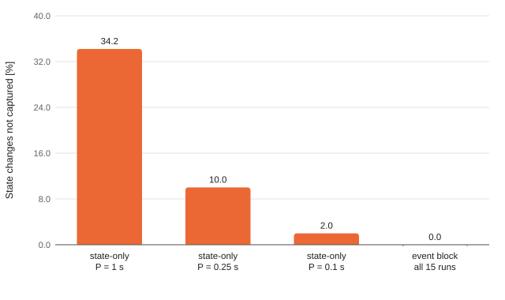
Figure 5.2 Share of state changes not captured: state-only polling at three periods versus the event block [measured].
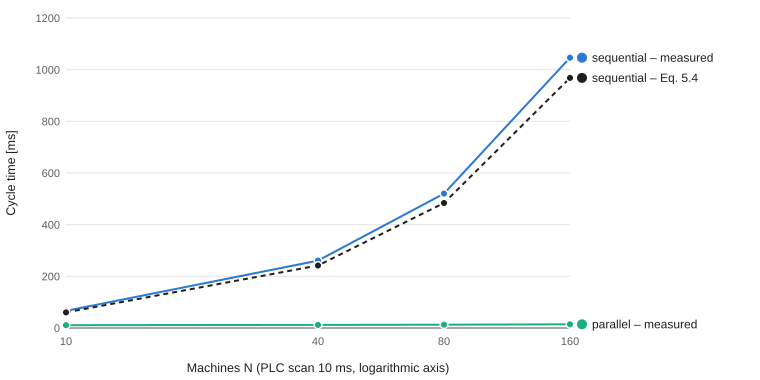
Figure 5.3 Poll cycle time versus number of machines: sequential (measured and Eq. 5.4) and parallel gateway, PLC scan 10 ms [measured / calculated].
Comparison with the formulas of Section 5.5.
comm_rtt.json).Table 5.4 HTTP/JSON API on the same PC, 10 s per configuration, keep-alive connections [measured].
| Request | Clients | Requests/s | Median latency [ms] | p99 latency [ms] |
|---|---|---|---|---|
| GET /api/state (160 machines, 35.5 kB JSON) | 1 | 4,340 | 0.22 | 0.31 |
| 4 | 4,494 | 0.88 | 1.19 | |
| 16 | 4,521 | 2.99 | 9.27 | |
| POST /api/event (MES booking) | 1 | 17,648 | 0.05 | 0.09 |
| 4 | 22,219 | 0.18 | 0.32 | |
| 16 | 22,015 | 0.69 | 1.57 |
The standard-library server delivers the complete plant snapshot about 4 500 times per second. With 16 simultaneous clients, the 99th-percentile latency stays below 10 ms. A factory has tens of HTTP clients (MES terminals, browser displays, the twin, ERP), each refreshing at most once per second — two to three orders of magnitude below the measured capacity. The HTTP side is therefore not a bottleneck either.
H1 requires at least 40 machines with detection latency ≤ 1 s and event loss ≤ 0.1 %.
H1 is supported under the stated PLC timing model, with two design rules as conditions: use the event block, and either poll in parallel or size the sequential gateway with Eq. (5.4). The result must be confirmed with real PLCs and a switched network (Section 5.8).
Before the case factory's ramp-up, the bench is repeated with real controllers in place of the emulated machines: one Delta AS332T-A and one Siemens S7-1200 with the standard interface and event block (guide 47), connected through a managed switch, plus the remaining machines emulated. Measured are the real RTT distribution, the PLC-side event time-stamp resolution, the clock offset after the hourly time synchronisation, and the CPU load the Modbus server adds to the PLC scan. Results will be added to this section; the formulas of Section 5.5 are then re-evaluated with the measured tscan and t0.
This chapter designed a digital twin data path for a factory whose only communication technologies are Ethernet, Modbus TCP and HTTP, running on one offline PC with the Python standard library. Six design rules define the architecture: one client, one map, pull for status and handshake for commands, multi-rate polling, heartbeats both ways, and events instead of samples. Its key element is an event-preserving register block in every PLC — a change counter, a last-change time stamp and an 8-entry ring buffer — which turns sampled polling into complete, time-stamped event capture.
Closed-form formulas size the bandwidth (2.1 Mbit/s for 160 machines), the sequential capacity (Nmax = P / (k 𝔼[RTT])), the latency, the event loss and the time-stamp error. A laboratory campaign of 15 runs with up to 160 machines confirmed the formulas within about 8 % and showed:
H1 is supported under the PLC timing model; verification with real Delta and Siemens PLCs is planned. With the observations of Table 4.5 now available completely and with PLC time stamps, the Bayesian updating of Chapter 6 rests on a data path that a company without OPC UA, MQTT or cloud services can build and maintain itself.
Chapter 4 defined the conjugate models with which the uncertain inputs of the FMS twin are updated, the propagation of their uncertainty through the discrete-event model, and the measures and protocol with which predictions are judged. This chapter turns these definitions into algorithms (Section 6.3), describes a controlled experiment to test them (Section 6.4), reports the results (Section 6.5) and evaluates hypotheses H2 and H3 (Section 6.6):
A controlled experiment is necessary because the real ramp-up of the case factory lies in the future and, more fundamentally, because only in an experiment is the truth known: in a real factory the "true" MTBF of a machine is never observed, only estimated. The experiment therefore answers the question does the method learn the right thing, how fast, and how honest is its uncertainty? — which no single industrial case can answer.
The protocol of Section 4.8.2 is implemented as follows. At each decision point (design freeze P0, and the end of each month k for Pk) the twin writes a prediction record: model version (software commit), parameter state (all hyperparameters of Table 4.4 for every station), random seed, prediction horizon, predicted mean, 5 % and 95 % quantiles, and the time stamp. Records are append-only; a prediction for month k+1 is stored before any data of month k+1 are read. In the experiment this is guaranteed by the program structure (Algorithm 6.3: the prediction for month k+1 is computed from beliefs updated with months 1..k only and is written to the result file before month k+1 is simulated). In the case factory the same records are stored in the twin's database and tagged in the version-control system, so that an examiner can verify that no prediction was changed after the fact.
Each station keeps an accumulator per month: failure count n, exposure T (processing hours, since failures are modelled as operation-dependent, Section 6.4.1), list or running sum of repair durations, the running mean and sum of squared deviations of log cycle-time ratios y = ln(t / tdesignp), and good and scrap counters. The cycle-time ratio normalises the different variants to one station-level speed factor, so that one Normal-Inverse-Gamma model per station suffices regardless of the product mix. Mean and sum of squares are accumulated with Welford's algorithm, which is numerically stable and needs constant memory:
Algorithm 6.1 Welford accumulator for log cycle-time ratios
n ← 0; mean ← 0; S ← 0
on cycle complete (time t, variant p):
y ← ln(t / t_design[p]); n ← n + 1
d ← y − mean; mean ← mean + d / n; S ← S + d · (y − mean)
end of period: return (n, mean, S)
Algorithm 6.2 Sequential Bayesian update of one station (end of period k) input: hyperparameters (a_f, b_f), (a_r, b_r), (m, κ, a_c, b_c), (a_q, b_q); statistics of period k; forgetting ρ failures: a_f ← ρ a_f + n_fail ; b_f ← ρ b_f + T (Eq. 4.5, 4.11) repairs: a_r ← ρ a_r + k_rep ; b_r ← ρ b_r + Σ r_i (Eq. 4.7) cycles: κ0, a0, b0 ← ρκ, ρa_c, ρb_c ; apply Eq. 4.9 with (n, ȳ, S) → (m, κ, a_c, b_c) scrap: a_q ← ρ a_q + x ; b_q ← ρ b_q + (parts − x) (Eq. 4.10) store prediction record (Section 6.2)
The update costs a fixed number of arithmetic operations per station, independent of how many events occurred. For the 13 station types of the case it takes well under a millisecond.
Algorithm 6.3 Prediction of the good output of the next period
for i = 1 .. N_θ:
for each station: draw MTBF ~ Inv-Gamma(a_f, b_f), MTTR ~ Inv-Gamma(a_r, b_r),
σ² ~ Inv-Gamma(a_c, b_c), m ~ N(m, σ²/κ), speed = exp(m + σ²/2), q ~ Beta(a_q, b_q)
run the DES for one period with these parameters (R replications) → Y_i
return mean(Y), Q_0.05(Y), Q_0.95(Y) (Eq. 4.12)
The parametric twin assumes that its model structure is correct and that the parameters are constant within the learning window. During ramp-up neither holds exactly: the system improves between the data used for learning and the period being predicted, so even perfectly estimated parameters of month k under-predict month k+1. Following the idea of model discrepancy in Bayesian calibration of computer models (Kennedy and O'Hagan, 2001), a discrepancy term is learned on top of the twin. Let ek = ln(Yk / Ŷk) be the realised log error of the twin's prediction for month k. A Normal-Inverse-Gamma model with forgetting (the same algebra as Eq. 4.9 with n = 1) learns its mean δ and variance. The corrected prediction and interval are
where sMC is the log-scale standard deviation implied by the Monte Carlo interval of Algorithm 6.3 and sδ = √(bδ(κδ + 1)/(aδ κδ)) the predictive scale of the discrepancy. Prior: m0 = 0, κ0 = 1, a0 = 2, s0 = 0.05; forgetting ρ = 0.7. The discrepancy is learned only from errors of data-based predictions (from month 2): the month-1 forecast stems from the prior model and its error says nothing about the discrepancy of the updated twin. An earlier variant that also used the month-1 error over-corrected the month-2 forecast by 28 % on average; this design rule is therefore part of the method.
One prediction (Algorithm 6.3) with Nθ = 40 and R = 1 requires 40 runs of the reduced-order model; one run of a 330-hour month (about 5 700 parts through 13 stations) takes 0.034 s on a standard office PC (single core, Python 3.12, standard library only) [measured]. A monthly prediction therefore takes under 2 s; the full experiment of Section 6.4 (30 scenarios × 12 months × 5 predictors, about 30 000 simulated months) ran in about two minutes on 15 cores. The full twin of Chapter 8 is slower per run, but monthly predictions remain in the range of minutes, which is negligible compared with the monthly decision rhythm.
For thousands of runs a reduced-order model of the compressor FMS is used: a serial line of the 13 station types of Table 4.2 with cm parallel servers, buffers of B = 4 parts in front of each station [assumption], blocking after service, infinite raw-material supply, and end-of-line detection of scrap (scrapped parts consume capacity but are not good output — realistic for compressors, whose defects are found mostly at the performance test). Cycle times are log-normal around the design time of each variant times the station speed factor; failures are operation-dependent (time to failure counts processing time only) with exponential times to failure and repair.
The model is computed by an exact departure-time recursion instead of an event list. For part i, station j and server k = i mod cj (cyclic assignment, order preserving):
where s is the start, d the departure, f the time at which the server becomes free, and w the processing time plus any repair times that fall into it. The second term of dj,i is the blocking condition: part i can leave station j only when the downstream station has room, i.e. when the part Bj+1 + cj+1 positions ahead has started at station j+1. Because that part has a smaller index, Eq. (6.2) can be computed part by part in O(N M) time.
Verification. With design parameters the model produces 5 320 good parts per 330-hour month (mean of 10 replications, range 5 294–5 347) [simulated]. The static analysis of Table 4.3 gives an upper bound: the bottleneck FINAL can process 5 667 / 0.998 = 5 678 parts, of which a share Πm (1 − qm) = 0.941 is good, i.e. at most 5 341 good parts. The simulated output lies 0.4 % below this bound, as expected for a well-buffered line with small blocking and starvation losses. Observation counts behave as designed: for example, the three HMCs record 17 failures in 570 processing hours in one simulated month, consistent with the design MTBF of 30 h.
The reduced-order model omits the pallet loop, AGV transport and dispatching of the full twin. These do not affect the statistical question of this chapter — whether the updating learns the parameters — but they affect absolute output levels; Chapter 9 uses the full twin.
For each scenario s = 1..30 a true factory is generated by drawing, for every station, mature deviation factors from the design and imposing a ramp-up trajectory (Table 6.1). The factors reflect two well-documented patterns: design statements tend to be optimistic (vendors supply ideal-condition values and means only; Bokrantz et al., 2017), and new systems show early failures, slower cycles, longer repairs and more scrap that decline as faults are removed and people learn (the ramp-up phenomenon). The ramp-up shape r(k) = e−(k−1)/τ with τ = 2 months (1.5 for scrap) is an [assumption]; Section 6.7 discusses its influence.
Table 6.1 Generator of the true factory (per station; U = uniform distribution) [assumption].
| Parameter | Mature value | Ramp-up multiplier in month k | Month 1 | Month 6 |
|---|---|---|---|---|
| MTBF | design × U(0.6, 1.1) | 1 − 0.5 r(k) | 0.50 | 0.96 |
| MTTR | design × U(1.0, 1.5) | 1 + 0.5 r(k) | 1.50 | 1.04 |
| Cycle-time factor | U(0.98, 1.12) | 1 + 0.08 r(k) | 1.08 | 1.01 |
| Cycle-time log-sd | U(0.04, 0.10) | – | – | – |
| Scrap | design × U(1.0, 2.0) | 1 + 2 r1.5(k) | 3.00 | 1.07 |
Each month of the true factory is simulated once with its month-specific parameters; its observations (Table 4.5) are passed to the predictors and its good output Yk is the truth to be predicted.
| Code | Predictor | Updated? | Uncertainty |
|---|---|---|---|
| B0 | Design model with point values (prior means), stochastic DES, 20 replications | never | aleatory only |
| B1 | Point estimates from month-1 data (MLE), then frozen | once | aleatory only |
| P0 | Bayesian prior predictive (design priors), frozen | never | aleatory + epistemic |
| P1 | Sequential Bayesian updating, ρ = 1 | monthly | aleatory + epistemic |
| P07 | Sequential Bayesian updating, ρ = 0.7 | monthly | aleatory + epistemic |
| B0D | B0 + discrepancy learning (Section 6.3.4) — output-level correction only | monthly | discrepancy |
| P07D | P07 + discrepancy learning | monthly | aleatory + epistemic + discrepancy |
Prior confidence (Section 4.5.3) in the main experiment: failures worth 10 × MTBF hours (≈ 10 failures), repairs worth 5 repairs, cycle times worth 10 cycles (mode = design, ± 10 %), scrap worth 250 parts. Section 6.5.6 varies these by factors 0.25 and 4.
Measures are those of Section 4.8.1: absolute percentage error Ek, its mean over scenarios (MAPE), empirical coverage of the 90 % interval, mean relative interval width, and mean signed error (bias; positive = over-prediction). Months 2–12 are evaluated (month 1 has no data for any method). Settings: 30 scenarios, 12 months of 330 h, Nθ = 40, R = 1 for Bayesian predictors, 20 replications for point predictors; all random streams are seeded, so every number is reproducible with python rampup_experiment.py 30 1.0.
Averaged over the 30 true factories, good output rises from 3 638 parts in month 1 to 4 842 in month 6 and 4 909 in month 12 [simulated] (Table 6.2). The design model B0 predicts 5 323 parts for every month: 46 % above month 1 and still 8.4 % above the mature level — the combined effect of optimistic design values on 13 stations.
Table 6.2 Mean true output and mean absolute percentage error (%) per month, 30 scenarios [simulated].
| Month | True output | B0 | B1 | P0 | P1 | P07 | B0D | P07D |
|---|---|---|---|---|---|---|---|---|
| 1 | 3 638 | 46.5 | 46.5 | 45.6 | 45.6 | 45.6 | 46.5 | 45.6 |
| 2 | 4 199 | 26.9 | 13.5 | 26.1 | 10.4 | 11.1 | 1.8 | 11.1 |
| 3 | 4 521 | 17.8 | 19.7 | 17.1 | 11.9 | 11.5 | 6.4 | 5.2 |
| 4 | 4 688 | 13.7 | 22.5 | 12.9 | 11.4 | 9.8 | 7.3 | 1.1 |
| 5 | 4 797 | 11.1 | 24.3 | 10.4 | 10.8 | 8.3 | 6.9 | 1.2 |
| 6 | 4 842 | 10.0 | 25.0 | 9.3 | 9.5 | 6.3 | 5.5 | 2.9 |
| 7 | 4 873 | 9.3 | 25.5 | 8.6 | 8.6 | 4.8 | 4.4 | 3.5 |
| 8 | 4 891 | 8.9 | 25.7 | 8.2 | 7.8 | 3.7 | 3.4 | 3.6 |
| 9 | 4 899 | 8.8 | 25.9 | 8.1 | 7.0 | 2.7 | 2.5 | 3.4 |
| 10 | 4 910 | 8.5 | 26.0 | 7.8 | 6.4 | 2.1 | 2.0 | 3.0 |
| 11 | 4 903 | 8.7 | 25.9 | 8.0 | 5.6 | 1.4 | 1.2 | 2.8 |
| 12 | 4 909 | 8.5 | 26.0 | 7.8 | 5.2 | 1.2 | 1.0 | 2.2 |
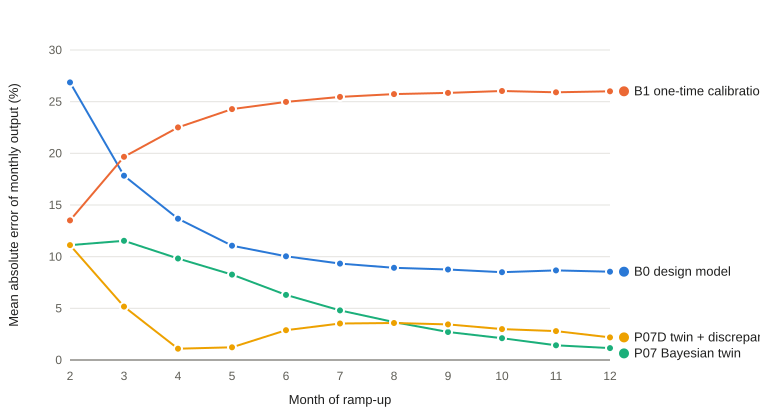
Figure 6.3 Mean absolute error of the monthly output prediction for four predictors (30 scenarios) [simulated].
Three patterns stand out (Table 6.2, Figure 6.3, Table 6.3).
The design model never learns. B0 and its Bayesian counterpart P0 keep an error of about 8 % even when the factory has matured. The design-stage forecast is not only uncertain but biased, and no amount of operation corrects a model that is not updated.
One-time calibration is worse than no calibration. B1, calibrated on the data of month 1 — the worst month of the ramp-up — under-predicts by about 26 % for the rest of the year. Calibrating once, at the wrong time, freezes the transient state into the model. This is the practice of manual recalibration after commissioning (Konstantinov et al., 2022) taken to its logical end, and it shows why calibration must be continuous during ramp-up.
Sequential updating converges; forgetting accelerates it. P1 (ρ = 1) weights all months equally, including the early ones, and still errs by 5.2 % in month 12. P07 (ρ = 0.7) discounts old data and reaches 4.8 % in month 7 and 1.2 % in month 12. Its remaining error is a systematic lag: it learns from month k to predict a better month k+1 (bias −9.4 % in months 2–6). The discrepancy term removes this lag: P07D has an error of 5.2 % in month 3 and 1.1 % in month 4 — the best of all predictors in months 3–6 — at the price of a small over-correction (+2 % to +3.5 %) once the ramp-up flattens.
Table 6.3 Summary over months 2–12 and two sub-periods, 30 scenarios [simulated].
| Predictor | MAPE 2–12 | MAPE 2–6 | MAPE 7–12 | Bias 2–12 | Coverage of 90 % PI | Mean PI width |
|---|---|---|---|---|---|---|
| B0 | 12.0 % | 15.9 % | 8.8 % | +12.0 % | 0.0 % | 1.3 % |
| B1 | 23.6 % | 21.0 % | 25.8 % | −23.6 % | 0.0 % | 3.4 % |
| P0 | 11.3 % | 15.2 % | 8.1 % | +11.3 % | 5.8 % | 8.0 % |
| P1 | 8.6 % | 10.8 % | 6.8 % | −8.6 % | 0.0 % | 2.6 % |
| P07 | 5.7 % | 9.4 % | 2.6 % | −5.7 % | 8.5 % | 2.8 % |
| B0D | 3.9 % | 5.6 % | 2.4 % | −3.6 % | 100.0 % | 36.8 % |
| P07D | 3.6 % | 4.3 % | 3.1 % | +0.5 % | 94.2 % | 18.4 % |
Table 6.4 Share of scenarios with Ek < 5 % [simulated].
| Month | 3 | 4 | 5 | 6 | 7 | 8 | 9 | 10–12 |
|---|---|---|---|---|---|---|---|---|
| B0 | 0 % | 0 % | 3 % | 7 % | 10 % | 10 % | 10 % | 13 % |
| B1 | 0 % | 0 % | 0 % | 0 % | 0 % | 0 % | 0 % | 0 % |
| P07 | 0 % | 0 % | 0 % | 3 % | 70 % | 97 % | 100 % | 100 % |
| B0D | 20 % | 0 % | 0 % | 27 % | 83 % | 100 % | 100 % | 100 % |
| P07D | 50 % | 100 % | 100 % | 100 % | 93 % | 97 % | 97 % | 100 % |
The coverage column of Table 6.3 is the most sobering result. All predictors whose uncertainty comes only from the model — B0, B1, P0, P1, P07 — are badly over-confident: their 90 % intervals contain the truth in at most 8.5 % of the months. For B0 and B1 this is expected (only aleatory spread, 1–3 % wide). For P1 and P07 it shows that parameter uncertainty alone does not cover the structural error of predicting a changing system with a stationary model: the intervals are centred on a lagging estimate. The prior-predictive P0 is wider (8 %) but centred on the biased design.
Adding the learned discrepancy fixes calibration: P07D reaches 94.2 % coverage (87.3 % in months 2–6, 100 % in months 7–12) with a mean width of 18.4 %. B0D also covers (100 %) but with intervals twice as wide (36.8 %) — honest but of little use for decisions. P07D thus gives the best combination of calibration and sharpness.
Output-level correction (B0D) predicts the total output almost as well as P07D, so one might ask whether the parametric twin is needed at all. The answer lies in what each approach knows. B0D knows a correction factor; the parametric twin knows every station's MTBF, MTTR, speed and scrap. Table 6.5 and Figure 6.5 measure this knowledge: in each month the true bottleneck (lowest true capacity by Eq. 4.2) is compared with the bottleneck implied by the design values and by the posterior means, and the mean absolute error of the 13 station capacities is computed.
Table 6.5 Bottleneck identification and station-capacity error, 30 scenarios [simulated].
| Month | B0 hit | B0 capacity error | P1 hit | P1 capacity error | P07 hit | P07 capacity error |
|---|---|---|---|---|---|---|
| 1 | 57 % | 16.8 % | 57 % | 16.2 % | 57 % | 16.2 % |
| 2 | 70 % | 11.8 % | 93 % | 3.1 % | 90 % | 3.3 % |
| 4 | 73 % | 7.5 % | 93 % | 4.0 % | 97 % | 3.5 % |
| 6 | 73 % | 6.1 % | 97 % | 3.6 % | 100 % | 2.4 % |
| 8 | 73 % | 5.7 % | 100 % | 3.0 % | 100 % | 1.5 % |
| 10 | 77 % | 5.5 % | 97 % | 2.5 % | 97 % | 0.8 % |
| 12 | 77 % | 5.5 % | 97 % | 2.1 % | 97 % | 0.5 % |
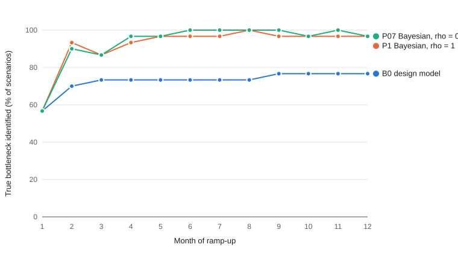
Figure 6.5 Share of scenarios in which the true bottleneck is identified [simulated].
The design model names the wrong bottleneck in about a quarter of the factories for the whole year: in 7 of 30 scenarios the true mature bottleneck is ASSY or GRIND, not the designed FINAL (end of year: FINAL 23, ASSY 6, GRIND 1). The Bayesian twin identifies it correctly in 90–97 % of the factories after a single month of data and in 97–100 % from month 4, and its station-capacity error falls to 0.5–2 %. This is the knowledge that investment and improvement decisions need — which machine to duplicate, where to add a buffer, which maintenance to prioritise — and it is the input for the staging optimisation of Chapter 7. An output-level correction cannot provide it.
Eq. (4.13) splits the predictive variance into its epistemic and aleatory parts. Table 6.6 shows the decomposition for P07 in 10 scenarios with Nθ = 40 outer and R = 3 inner samples.
Table 6.6 Variance decomposition of the predicted monthly output (P07, 10 scenarios) [simulated].
| Month | Epistemic share of variance | Predictive standard deviation |
|---|---|---|
| 1 (prior) | 95.2 % | 122 parts |
| 2 | 43.9 % | 60 parts |
| 4 | 25.5 % | 48 parts |
| 8 | 25.7 % | 38 parts |
| 12 | 27.5 % | 38 parts |
Before any data, 95 % of the predictive variance is lack of knowledge. One month of data halves the predictive standard deviation and reduces the epistemic share to 44 %. With forgetting (ρ = 0.7) the share stabilises at about 26 % rather than tending to zero: the effective memory of 1/(1−ρ) ≈ 3.3 months caps the information the twin retains. This is the deliberate price of tracking a changing system; after ramp-up, ρ can be raised towards 1 so that the epistemic share continues to fall (Section 6.7).
How much does the result depend on the confidence assigned to the design statements? Table 6.7 repeats the experiment with all prior weights multiplied by 0.25 (weak design knowledge) and 4 (strong).
Table 6.7 Sensitivity to the prior weight, months 2–12, 30 scenarios [simulated].
| Prior weight | P0 MAPE | P0 coverage | P07 MAPE | P07D MAPE | P07D coverage | P07D width |
|---|---|---|---|---|---|---|
| × 0.25 | 9.9 % | 49.1 % | 6.1 % | 4.0 % | 91.2 % | 19.9 % |
| × 1 (main) | 11.3 % | 5.8 % | 5.7 % | 3.6 % | 94.2 % | 18.4 % |
| × 4 | 11.3 % | 1.8 % | 5.1 % | 3.1 % | 99.7 % | 16.2 % |
The ranking of the methods is unchanged, and the accuracy of P07D varies only between 3.1 % and 4.0 %: the method is robust to the confidence parameter. Two effects are visible. A weak prior widens the frozen design prediction P0 so that it covers the truth more often (49 %), which shows that honest design-stage confidence matters for the frozen forecast. A strong prior slightly improves P07 and P07D: it damps the influence of the extreme first months, which otherwise pull the estimates below the later level. Optimistic design values with strong confidence are thus less harmful than might be feared — as long as the twin is updated.
H2 (faster convergence). The deterministic design model B0 and the one-time calibration B1 never reach an error below 5 % in the majority of scenarios (B0: at most 13 %; B1: 0 %). The updated twin P07 does so from month 7 (70 %) and in all scenarios from month 9; P07D in all scenarios from month 4 (Table 6.4). Measured in months of ramp-up data, the updated twin reaches the 5 % level with at least 30 % less data than the baselines, which do not reach it within 12 months at all. H2 is supported in the simulated setting. Against the output-level correction B0D, P07D is faster in months 3–6 and comparable afterwards.
H3 (calibrated uncertainty). The parametric twin alone (P07) is not calibrated (8.5 % coverage). With learned model discrepancy (P07D) coverage is 94.2 % in the main experiment and 91–100 % across prior weights. H3 is supported for the twin with discrepancy learning and rejected for the parametric twin alone — a refinement of the original hypothesis that is itself a result: parameter uncertainty is not enough to make a twin's uncertainty honest during ramp-up.
Why the discrepancy term matters. The experiments separate two sources of error that are usually mixed: wrong parameters and a wrong (here: stationary) model. Bayesian updating removes the first — station capacities converge to within 1 % — but not the second. Learning the discrepancy at output level and the parameters at station level is a division of labour: the parameters explain where the system differs from the design, the discrepancy term absorbs what the model structure cannot express. An explicit ramp-up (learning-curve) model in the parameters, as outlined in Section 4.6.5, is the natural next refinement and would reduce the over-correction after month 7.
Choice of the forgetting factor. ρ = 0.7 trades tracking speed for retained information (Section 6.5.5). A practical rule follows from the results: use ρ ≈ 0.7 during ramp-up while the output is still rising, and increase it towards 1 once the monthly output changes by less than about 1 % — the point at which the remaining epistemic uncertainty should be allowed to shrink.
Validity of the experiment. (i) The truth generator uses the same model family as the twin (log-normal times, exponential failures and repairs); real systems deviate from these laws, which the discrepancy term partly absorbs but which the industrial validation (Section 9.7) must examine. (ii) The ramp-up shape and magnitudes of Table 6.1 are assumptions; they were chosen to be plausible, not calibrated on a real ramp-up, and different shapes will change absolute numbers. (iii) Months are simulated independently (no WIP carried over), and the reduced-order model omits pallets, AGVs and dispatching. (iv) Each scenario's truth is simulated once per month, so Yk contains aleatory noise of about 1 %, which bounds the achievable error from below. None of these limitations favours one predictor over another, because all predictors face the same data; they limit the transfer of absolute numbers, not of the comparison.
This chapter implemented the uncertainty-aware twin as four simple algorithms — Welford accumulation, conjugate update with forgetting, nested Monte Carlo prediction and model-discrepancy learning — all executable with the Python standard library on an offline PC in seconds. A virtual ramp-up with 30 hidden true factories showed that (1) a design model never corrects its 8 % optimism, (2) one-time calibration on the first month is worse than none (−26 %), (3) sequential updating with forgetting reduces the error to 1–3 % after half a year, (4) learned model discrepancy brings the error below 5 % from month 4 in all scenarios and makes the uncertainty honest (94 % coverage of 90 % intervals), (5) the parametric twin identifies the true bottleneck in 97–100 % of cases from month 4, against 73–77 % for the design model, and (6) the result is robust to the confidence placed in the design statements. H2 is supported; H3 is supported for the twin with discrepancy learning. Chapter 5 now shows how the observations used here are obtained with Modbus TCP and HTTP only, and Chapter 7 uses the station-level knowledge for the staging decisions.
Chapters 4–6 built a twin that learns the true behaviour of the machines from shop-floor data and knows, after a few months, which station really limits output. This chapter asks what that knowledge is worth for the decision that defines the target context: how should a company that operates standalone CNC machines introduce an FMS — all at once, following a fixed staged plan, or step by step, re-deciding every half-year with the updated twin? It answers RQ3 and tests hypothesis H4:
The chapter formulates the decision model (7.2), the rolling-horizon decision rule and the screening model it uses (7.3), the experiment (7.4), the results (7.5), the evaluation of H4 (7.6) and a discussion (7.7).
The company starts at transition level L1 (Section 2.x): the machines of Table 4.2 exist and are connected (Chapter 5), but the crankcase machining centres are loaded and unloaded by hand (120 s per part not hidden behind cutting instead of 15 s with a pallet changer), transport between areas is manual with small racks (buffers of 2 parts), and faults are answered without a cell controller or MES, so repairs take 30 % longer than in the designed FMS [assumption].
Six investment options lead from this starting point towards the integrated FMS (levels L2–L4). Table 7.1 lists them with their effect in the model and their investment cost.
Table 7.1 Investment options [assumption: effects from the FMS design, costs as placeholders].
| Option | Description | Effect in the model | Capex [EUR] | Requires |
|---|---|---|---|---|
| PAL | pallet pool + pallet changers on the 3 HMCs | HMC handling 120 s → 15 s | 180 000 | – |
| GR2 | second crankshaft grinder | GRIND c = 1 → 2 | 350 000 | – |
| AS2 | second pump assembly station | ASSY c = 1 → 2 | 120 000 | – |
| FRB | robot-assisted final assembly | FINAL cycle time × 0.75 | 220 000 | – |
| MES | cell controller + MES | MTTR ÷ 1.3; scrap × 0.8 | 150 000 | – |
| AGV | AGV transport between areas | buffers 2 → 4 | 250 000 | MES |
The total of all options is 1.27 million EUR. Maintenance costs 3 % of the installed capex per half-year.
The introduction runs over S = 4 half-year stages followed by a terminal period of four half-years with the final configuration. The design demand forecast is 3 500, 4 500, 5 200 and 5 800 compressors per month in stages 1–4 and 6 000 afterwards [assumption]; the true demand level differs from the forecast by a factor drawn from U(0.8, 1.2), with ±5 % noise per stage. With contribution margin m = 450 EUR per compressor, a penalty κ = 50 EUR per unit of unmet demand (expediting, goodwill), discount rate r = 5 % per half-year and budget Ks = 400 000 EUR per stage for staged policies [assumption], the net present value follows Eq. (4.15) of Chapter 4:
where Ys is the monthly good output in stage s and xs,o = 1 if option o is installed. Results are reported as the incremental NPV relative to not investing at all (policy NONE), which removes the large common revenue base.
The true machine parameters of each scenario are drawn exactly as in the virtual ramp-up of Chapter 6 (Table 6.1: deviations from the design and ramp-up behaviour over the months since start). They are hidden from all policies except the perfect-information reference. The demand level is hidden as well and revealed stage by stage.
The exact problem (4.16) is a multi-stage stochastic program with learning; with six options and four stages the number of plans is large and every evaluation requires simulation. All policies therefore use the same rolling-horizon rule. At stage s, with information ℐs (parameter samples θ(i), demand forecast D̂):
where 𝒜s is the set of option subsets that respect the budget and the precedence (AGV requires MES), Vs is the discounted value of stages s..S plus terminal value if the configuration is kept fixed afterwards, and ΔCVaR the gap between the mean and the mean of the worst 10 % of samples (risk aversion β). All ≤ 26 = 64 subsets are enumerated. Keeping the configuration fixed after the decision ignores the value of later flexibility — a conservative simplification that applies equally to all policies.
| Policy | Parameter information θ(i) | Demand forecast | Re-decides |
|---|---|---|---|
| NONE | – (no investment) | – | – |
| ALL | – (all options at stage 1, budget ignored) | – | – |
| STATIC | design point values | design forecast | plan fixed at design time |
| ADAPT_DEM | design point values | updated with observed demand | every stage |
| ADAPTIVE | 60 samples from the Bayesian twin (Chapter 6, ρ = 0.7), updated after every stage | updated | every stage |
| PI_RULE | true parameters | true demand | every stage |
ADAPT_DEM isolates the value of demand learning; the difference between ADAPTIVE and ADAPT_DEM is the value of the twin's parameter learning. PI_RULE applies the same rule with perfect information; because the rule is a heuristic, it is a reference, not a strict upper bound.
The twin learns machine factors, not configuration effects: observed repair times are divided by the MTTR factor of the current configuration (1.3 without MES) and scrap counts by the scrap factor (0.8 with MES) before the update, and cycle-time ratios are taken relative to the current configuration's design times. Without this normalisation an option's effect would be counted twice once it is installed.
Equation (7.2) needs 64 × 60 × 8 throughput evaluations per decision. The DES of Chapter 6 is too slow for this, so the rule uses a screening model:
i.e. the raw bottleneck rate times the yield over all stations times a blocking efficiency η that depends on the buffer size. η is calibrated once against the DES: 0.9932 for buffers of 2 and 0.9963 for buffers of 4 [simulated]. On 40 random combinations of configuration, true factory and ramp-up month, the screening model deviates from the DES by 1.19 % on average (bias +1.16 %, maximum 6.50 %) [simulated]. The realised outcome of every decision is always simulated with the DES and the true parameters (three months per stage, common random numbers across policies), so screening errors affect only the quality of decisions, not the evaluation.
Forty scenarios (true factory + demand level) were generated. For each, the six policies were simulated over four stages and the terminal period. Two risk settings were run: β = 0 (risk-neutral) and β = 0.5. Reported per policy: mean incremental NPV versus NONE, its standard deviation, CVaR10% (mean of the worst 4 of 40 scenarios), the minimum, mean capital invested, mean number of stages with output below 95 % of demand, share of scenarios with at least one such stage, and the regret relative to PI_RULE. Reproduce with python staging.py 40 0.0 and python analyse_staging.py ../data/staging_b0.0.csv (about 1 minute on 15 cores).
Table 7.2 Incremental NPV versus no investment, 40 scenarios, β = 0 [simulated; money values are assumptions].
| Policy | Mean ΔNPV [M EUR] | SD | CVaR10% | Minimum | Capital [M EUR] | Short stages | Scenarios with a short stage | Regret vs PI_RULE |
|---|---|---|---|---|---|---|---|---|
| ALL | 9.07 | 4.16 | 1.17 | −0.87 | 1.27 | 0.50 | 40.0 % | −0.12 |
| STATIC | 7.57 | 3.18 | 1.53 | −0.17 | 0.69 | 0.72 | 52.5 % | 1.37 |
| ADAPT_DEM | 8.16 | 3.91 | 1.90 | 0.20 | 0.62 | 0.72 | 57.5 % | 0.78 |
| ADAPTIVE | 9.28 | 3.81 | 2.04 | 0.20 | 0.71 | 0.57 | 42.5 % | −0.34 |
| PI_RULE | 8.94 | 4.05 | 1.60 | 0.00 | 0.64 | 0.60 | 42.5 % | 0.00 |
Table 7.3 Paired differences of ADAPTIVE against the other policies (same scenario, common random numbers).
| Comparison | Mean difference [M EUR] | Standard error | ADAPTIVE better in |
|---|---|---|---|
| ADAPTIVE − ALL | +0.21 | 0.085 | 27 of 40 |
| ADAPTIVE − STATIC | +1.71 | 0.168 | 34 of 40 |
| ADAPTIVE − ADAPT_DEM | +1.12 | 0.224 | 24 of 40 |
The adaptive policy has the highest mean value and the best downside: its worst 10 % of scenarios still gain 2.04 M EUR on average, against 1.17 M EUR for the all-at-once investment, which in its worst scenario loses 0.87 M EUR compared with not investing. It reaches this with 0.71 M EUR of capital on average — 44 % less than ALL (Figures 7.1 and 7.2).
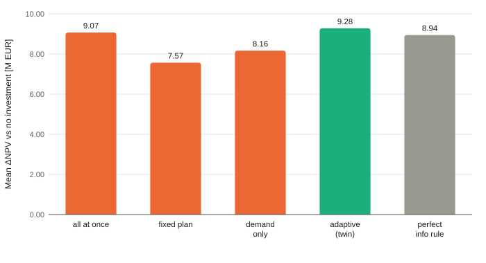
Figure 7.1 Mean incremental NPV versus no investment by policy, 40 scenarios [simulated].
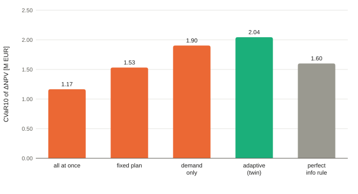
Figure 7.2 Mean of the worst 10 % of scenarios (CVaR) by policy [simulated].
Two decompositions explain the result.
Fixed plan versus adaptive plan. The fixed plan, optimised at design time with the design values, always installs AS2, FRB and GR2 (Table 7.4). It invests in the second grinder in every scenario, although in many true factories the grinder is not the binding constraint, and never buys the MES, whose shorter repair times pay off when the true machines fail more often than designed. The adaptive policy installs AS2 and FRB in all 40 scenarios, but GR2 only where the twin observes the grinder to be critical (27 of 40), and the MES in 32 of 40 scenarios; PAL never and AGV twice.
Demand learning versus parameter learning. Updating only the demand forecast (ADAPT_DEM) recovers 0.59 M EUR of the 1.71 M EUR advantage over the fixed plan; the remaining 1.12 M EUR (65 %) is the value of the twin's parameter learning. Knowing which station limits output is worth more than knowing how much will be demanded.
Table 7.4 Most frequent final configurations (40 scenarios).
| Policy | 1st | 2nd | 3rd |
|---|---|---|---|
| ALL | all six options (40) | – | – |
| STATIC | AS2 + FRB + GR2 (40) | – | – |
| ADAPT_DEM | AS2 + FRB + GR2 + MES (15) | AS2 + FRB (14) | AS2 + FRB + GR2 (7) |
| ADAPTIVE | AS2 + FRB + GR2 + MES (20) | AS2 + FRB + MES (10) | AS2 + FRB + GR2 (6) |
| PI_RULE | AS2 + FRB + GR2 + MES (15) | AS2 + FRB + MES (9) | AS2 + FRB (6) |
Two options are almost never chosen by any staged policy: the pallet pool (PAL) and the AGV system. In this case the HMC cell is not the bottleneck even with manual loading (static capacity about 7 500 parts per month against 5 667 at FINAL), so hiding the load time adds no output; and buffers of 2 already lose less than 1 % to blocking (η = 0.9932), so larger buffers add little. Both options would become valuable with a different product mix, higher demand or labour-cost savings, which the model does not value (Section 7.7).
Replication. The extended replication of companion paper 4 (200 scenarios instead of 40, 11 policies, paired tests with Holm correction) confirms the value of re-deciding: ADAPTIVE − STATIC = +1.61 M EUR (95 % confidence interval 1.45 – 1.77; better in 169 of 200 scenarios) [simulated]; the 40-scenario value of +1.71 M EUR lies inside this interval. Against a fixed plan that is itself optimised over the prior uncertainty, the advantage of learning is smaller (+0.31 M EUR, interval 0.23 – 0.38) — the fairest measure of what the twin's updating adds.
All-at-once has the lowest share of scenarios with at least one stage below 95 % of demand (40.0 %), closely followed by ADAPTIVE and PI_RULE (42.5 %); the fixed plan (52.5 %) and the demand-only policy (57.5 %) are clearly worse. The shortfall was afterwards recorded per stage in an extended replication (companion paper 4: 200 scenarios, same model and seeds scheme). It occurs in stages 3 and 4, not in stage 1 as first assumed: in high-demand scenarios the demand of the later stages exceeds what the option set can deliver at all (6 356 units per month with every option installed), so no policy can avoid it. Under-capacity is therefore a limit of the option set, not of the staging rule; a second load station (Section 9.2.5) is the obvious missing option.
With β = 0.5 the results are practically unchanged (ADAPTIVE: mean 9.28 M EUR, CVaR 2.00 M EUR; 21 instead of 20 scenarios end with AS2 + FRB + GR2 + MES). The reason is visible in Table 7.2: the investment amounts are small relative to the margin at stake, so the downside of a decision is driven by the true factory and the demand, not by the option set. Risk aversion would matter for larger, less divisible investments or tighter capital — a case for the sensitivity analysis of Chapter 9 with the company's real quotations.
H4 is supported for expected value and downside risk, and partly for under-capacity (better than the fixed plan, equal to the all-at-once investment). For a company with limited access to capital — the defining condition of the target context — the combination of higher value, better downside and much lower capital is the relevant result.
What the twin contributes. The staging experiment converts the station-level knowledge of Chapter 6 into money: about two thirds of the advantage of adaptive over fixed planning comes from parameter learning. The design study cannot know that, in a given real factory, the final assembly and the repair response matter more than the second grinder; the twin learns it within one or two stages.
Limits of the decision rule. The rule keeps the configuration fixed after each decision (no explicit value of future flexibility) and uses a screening model with 1.2 % mean error; PI_RULE shows that the rule is not optimal even with perfect information (ADAPTIVE scores 0.34 M EUR more, partly through chance in the realised months). Approximate dynamic programming or a real-options formulation could value flexibility explicitly.
Limits of the economic model. Options are valued only through additional output. Labour savings (PAL, AGV), quality costs beyond scrap, energy and floor space are not included, which explains why PAL and AGV are rarely chosen and is the main reason why absolute numbers must not be used for the investment decision before the company's own cost data are entered (Chapter 9). Costs and effects in Table 7.1 are placeholders.
Limits of the simulation. As in Chapter 6: assumed ramp-up shape, reduced-order DES, independent months; one representative month per stage (three replications) stands for six.
The stepwise introduction of the FMS was modelled as six options over four half-year stages with hidden true machine parameters and uncertain demand. A rolling-horizon rule with a screening model (1.2 % mean deviation from the DES) was applied with different information. Over 40 scenarios, re-deciding every half-year with the Bayesian twin gave the highest expected incremental NPV (9.28 M EUR against 9.07 for all-at-once and 7.57 for a fixed plan), the best downside (CVaR 2.04 against 1.17 M EUR) and needed 44 % less capital than all-at-once; 65 % of its advantage over the fixed plan is the value of parameter learning. The risk of under-capacity equals that of the all-at-once investment. H4 is supported for value and downside risk and partly for under-capacity. With the money values replaced by the company's quotations, the same model becomes the investment-planning tool of the case factory (Chapter 9).
The method must be usable by the company that it is designed for. Chapter 5 fixed the communication constraint (Ethernet, Modbus TCP, HTTP only); this chapter adds the software constraints that follow from the same context:
| Id | Requirement | Consequence for the implementation |
|---|---|---|
| S1 | Runs on one offline industrial PC; no internet, no cloud services | no package installation from the internet; no CDN; all libraries vendored |
| S2 | Maintainable by the company's own engineers | one language per side (Python on the server, JavaScript in the browser), standard library only, readable code |
| S3 | Reproducible results for the thesis and for audits | seeded random numbers, append-only prediction records, version tags, every number re-computable by one command |
| S4 | Same formulas everywhere | one reference implementation (Python), ports checked number by number |
| S5 | Response times compatible with daily use | monthly update + prediction in seconds; planning decisions in minutes |
The implementation follows the layers of Chapter 5 and the functional view of ISO 23247 (observable manufacturing elements → data collection and device control → digital twin core → user entities):
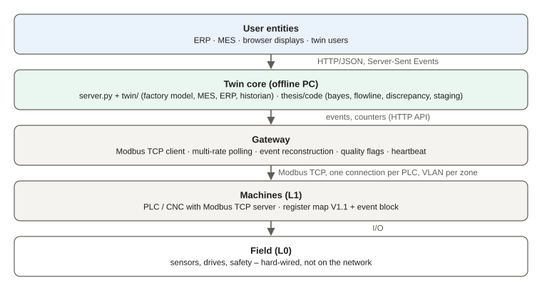
Figure 8.1 Software layers of the implementation.
The project contains about 101 600 lines of code and documentation scripts (Python and JavaScript); the twin core twin/ has 13 165 lines of Python, the thesis modules 1 980 lines, and the browser implementation of the thesis calculations 576 lines. No third-party Python package is used; the only third-party browser library is Three.js for 3D views, served from the local web/vendor/ folder.
The factory twin is an event-driven simulation of the complete compressor factory (16 stations, buffers, pallet pools, AGVs, two AS/RS) running in real time or accelerated, with MES and ERP functions, a SCADA view and an HTTP API of about 30 endpoints (/api/state, /api/stream for Server-Sent Events, /api/fms, /api/mes, /api/erp, /api/ingest for real machine data, and the endpoints of the ball screw factory under /api/bsf/...). Its configuration — products, mix, routings, cycle times, reliability and scrap per station, layout — is one JSON file (config/factory.json), which is also the source of the design estimates of Table 4.2.
Verification of the engine. tools/verify_engine.py compares the twin with eleven hand calculations (single machine, serial line, parallel machines, assembly of two components, breakdowns with MTBF/MTTR, scrap, test-bench rejects, the three-variant compressor factory with perfect machines, change-overs with alternating and batched variants, and two machines with 80 % availability and a large buffer). All eleven cases pass; deviations are below 1 % except the test-bench reject share (1.34 % against 1.15 %), a small-number statistical effect within the tolerance of the test; the run is repeatable with a fixed seed [measured, 2026-11-13].
bayes.py)Four classes implement the conjugate models of Table 4.4 with the design-statement constructors of Section 4.5.3, the update with forgetting (Eq. 4.11), posterior means and Monte Carlo intervals. The point estimate of a mean MTBF, MTTR or variance falls back from b/(a−1) to b/a when strong forgetting with few events drives the shape below 1 — a case found during the experiments of Chapter 6. chapter4_examples() re-computes every worked number of Chapter 4.
flowline.py)The departure-time recursion of Eq. (6.2) computes one month of production (about 5 700 parts × 13 stations) in 0.034 s in Python; it records the observations of Table 4.5 for the twin. It is verified against the static upper bound of Eq. (4.2) (0.4 % below the bound for the design line, Section 6.4.1) and used in Chapters 6, 7 and 9.
rampup_experiment.py implements Algorithms 6.2–6.3; discrepancy.py the model-discrepancy learning of Eq. (6.1); staging.py the decision model of Chapter 7 with the screening model of Eq. (7.3), whose blocking efficiency is calibrated against the DES at start-up and validated on 40 random cases (1.19 % mean deviation).
commbench.py and httpbench.py implement the laboratory benches of Chapter 5. Their development exposed two platform pitfalls (coarse time.time() and early asyncio timers on Windows), which are documented in Section 5.7.1 and in thesis/README.md because they would silently invalidate measurements made by others on the same platform.
All calculation systems of the thesis are also available interactively in the twin's browser interface (tab "Doctoral research"), so that planners can use them without Python:
| Item | Function | Port of |
|---|---|---|
| 1 | thesis map, hypotheses, status | – |
| 2 | capacity / bottleneck table; Bayesian updater for MTBF, MTTR, cycle time, scrap | bayes.py |
| 3 | results of the virtual ramp-up; live lab running a hidden true factory month by month | flowline.py, rampup_experiment.py, discrepancy.py |
| 4 | Modbus TCP + HTTP sizing calculator; measured campaign | Chapter 5 formulas |
| 5 | staging results; investment-plan calculator with the thesis decision rule | staging.py |
web/phd_calc.js is a dependency-free port with a seeded random-number generator (Mulberry32, Marsaglia–Tsang gamma sampling); web/phd_data.js contains the stored thesis results and is generated by thesis/code/export_web.py, never edited by hand.
Cross-verification Python ↔ JavaScript (headless Chrome, 2026-11-13): Example 4.1 MTBF 26.04 h, Example 4.2 MTTR 27.42 min, Example 4.4 scrap 1.69 %, all 13 static capacities, Eq. (5.1) 333 bytes, Eq. (5.4) 165 machines, Eq. (5.6) 2.2 × 10−11 and the staging rule's plan (AS2 + FRB, then GR2) are identical in both implementations; the browser DES simulates one month in about 7 ms [measured].
thesis/data/case1_P0.json.thesis/data/; analysis scripts read them; chapter tables and the browser data are generated from them.thesis/README.md lists, for every table and figure, the command that reproduces it.Table 8.1 Run times on the development PC (Windows Server 2022, 16 logical cores, Python 3.12) [measured].
| Task | Time |
|---|---|
| Bayesian update of all 13 stations (Algorithm 6.2) | < 1 ms |
| One simulated month, Python reduced-order DES | 0.034 s |
| One simulated month, browser DES | ≈ 7 ms |
| Monthly prediction with 40 parameter samples (Algorithm 6.3) | < 2 s |
| Staging decision at one stage (≤ 64 option sets × 60 samples, screening model) | seconds |
| Virtual ramp-up experiment, 30 scenarios × 12 months × 5 predictors | ≈ 2 min on 15 cores |
| Staging experiment, 40 scenarios × 6 policies | ≈ 1 min on 15 cores |
| HTTP snapshot of 160 machines | ≈ 4 500 requests/s |
These times are negligible against the monthly update rhythm and the half-yearly investment rhythm of the method.
The twin of Sections 8.3 – 8.5 observes and predicts; it never commands a machine. A flexible manufacturing system, however, only exists when a supervisory controller decides in real time which pallet goes to which machine, which NC program runs, which tool is fit for the next job and which AGV carries which load. In the target context such controllers are usually bought as closed packages from the machine supplier, which ties the factory to one vendor and to protocols it cannot maintain itself [observation in the case context]; complex control is also one of the reasons why FMS projects have missed their planned output (Section 2.2.3). To show that the low-cost architecture of Chapter 5 is sufficient not only for observation but also for control, the FMS control software fmsctl was developed as part of this work. It uses the same three technologies as the twin — Ethernet, Modbus TCP and HTTP — and the Python standard library only, and it runs offline on the control PC of the case factory.
Figure 8.2 places the control system in the ISA-95 / IEC 62264 hierarchy. Level 1 consists of the 21 machine PLCs of the case factory (7 CNC machines, the pallet system, the load station, 7 other stations, 2 test benches, 2 AGVs and 2 AS/RS cranes), each a Modbus TCP server. Level 2 is the FMS control PC, the only Modbus client in the machine network. Its four functions are the cell controller, tool management, logistics (AGV fleet and AS/RS warehouse management) and an HTTP server for operator screens and for the MES and ERP at levels 3 and 4. The division of work follows one rule: level 2 decides what and when (which pallet, which machine, which program, which tool, which transport); level 1 decides how (motion, interlocks, the machining cycle). Functional safety is never transmitted over the network: e-stop chains, guard doors, light curtains and safe torque off are hard-wired per machine. A lost network therefore means "no new jobs", never a hazard; every PLC stops accepting jobs when the gateway heartbeat (register 226) has not changed for 5 s. The twin reads the same data over HTTP and remains a separate, read-only system.
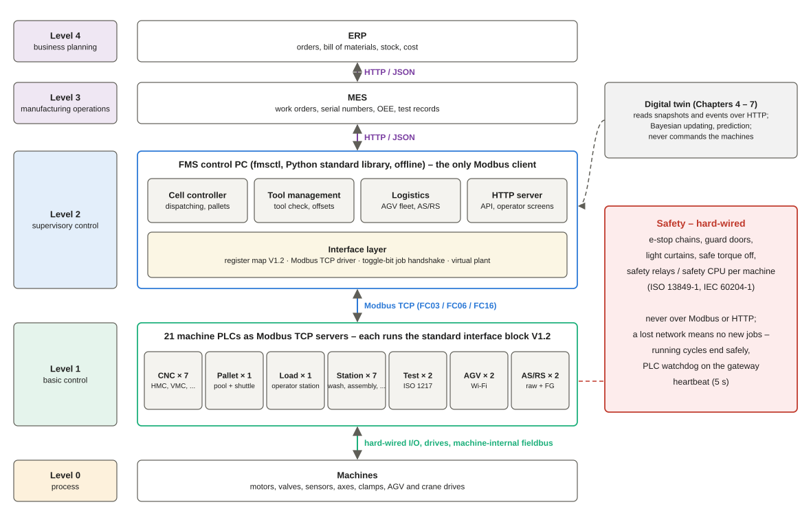
Figure 8.2 Control hierarchy of the compressor FMS: the FMS control PC as the only Modbus client, the 21 machine PLCs as servers, the twin as a read-only observer and safety outside the network.
All 21 PLCs expose one register map (version V1.2, Table 8.2). It extends the standard machine interface of Chapter 5 (status word, counters, energy, event block, command block) by a device-type status block and a block of job parameters, without changing any existing address, so that a device built to the earlier version keeps working. All values are 16-bit holding registers read with function code 03; 32-bit integers and REAL values use two registers in big-endian word order; the controller may write only to the command and job blocks, and every other write is refused by the PLC.
Table 8.2 Register map V1.2 of the machine interface (all 21 devices) [design].
| Block | Registers | Content | Access |
|---|---|---|---|
| Header | 0 – 3 | map version, device type, unit id, PLC heartbeat | read |
| Status | 4 – 7 | status word, mode, state code (OFF, IDLE, RUN, SET-UP, DOWN, BLOCKED, STARVED), alarm code | read |
| Handshake | 8 – 11 | ACK / BUSY / DONE / REJECT / READY bits, acknowledged sequence number, result code, pieces done | read |
| Counters | 20 – 45 | good and scrap counters, last cycle time, current order and part (text) | read |
| Energy | 100 – 103 | power, energy counter | read |
| Event block | 104 – 131 | state-change counter, time of the last change, ring of the last 8 state changes with PLC time (Section 5.4) | read |
| Command | 200 – 226 | command code, sequence number, request bit; order data; gateway heartbeat 226 | write |
| Type status | 300 – 389 | per device type: tool life per pocket (CNC), pallet locations and states (pallet system), node and battery (AGV), crane position (AS/RS), test results (test bench) | read |
| Job result | 390 – 395 | id of the last finished job, result (OK, NOK, aborted), job duration | read |
| Job parameters | 400 – 449 | job id and the parameters of the command (pallet, NC program, variant, quantity; source and destination; tool offsets) | write |
A job is given to a PLC with a toggle-bit handshake (Figure 8.3). The controller first writes the job parameters (one FC16 frame), then the command code and a new sequence number (one FC16 frame), and finally inverts the request bit REQ (FC06). The PLC answers in its next scan: it validates the command (known code, device ready, pallet really at the machine, parameters plausible), writes the sequence number and a result code, and sets its ACK bit equal to REQ. Because the PLC reacts to a change of REQ and the controller checks the acknowledged sequence number, a lost or repeated frame can neither start a job twice nor leave a job unnoticed. When the job ends, the PLC writes the job id, the result and the job duration into registers 390 – 395 before it clears BUSY and toggles DONE, so that the controller always finds a consistent result. With the design values of Chapter 5 (mean round-trip time 6.3 ms, PLC scan 10 ms, controller poll of the acknowledgement every 20 ms) the controller sees the acknowledgement about 40 ms after it starts writing.
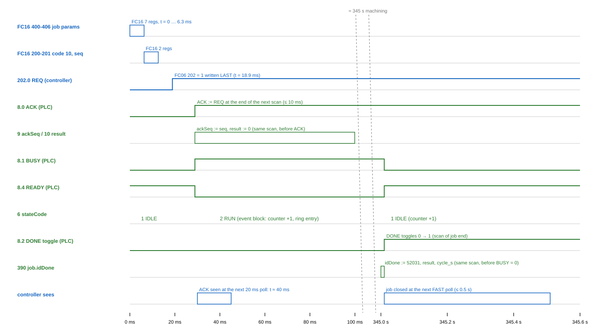
Figure 8.3 Toggle-bit job handshake between the FMS controller and an HMC (command 10, run job), timing diagram with design values; the time axis is broken between 0.1 s and 345 s.
The handshake is the place where a real controller differs most from a simulation: time-outs, restarts and late answers must not corrupt the production record. The controller therefore distinguishes five job states. A job that the PLC has accepted is sent; it becomes done when the PLC reports it. A command without acknowledgement within 5 s becomes noack — the PLC may still take it — and is set to rejected only when the device is idle and has not taken it. An accepted job that is not reported within its time-out (for example 3 × the longest machining cycle) becomes unknown and raises an alarm, because the PLC may have restarted and lost its result; the operator decides after looking at the machine. All effects of a finished job (pallet content, work-order counters, tool use) are written in one database transaction, and after a power failure the controller always starts in manual mode.
The cell controller runs a cyclic loop (50 ms on the virtual plant; 0.25 – 0.5 s on real PLCs) of three steps: poll the five cell devices, close finished jobs, and — in automatic mode — dispatch. The pallet locations are read from the pallet system's PLC, which is the source of truth; the database keeps only what a PLC cannot know (which variant and which work order are on a pallet, the work orders, the job history). Dispatching follows fixed priorities: (1) start an HMC whose changer holds a raw pallet and whose tool check passes; (2) give the operator the next load-station task (unload, load or unload + load) for the most urgent open work order whose fixture type matches the pallet; (3) move one pallet with the shuttle — first empty a finished machine, then feed the idle machine that has waited longest with the most urgent raw pallet, then bring a pallet to the load station (the oldest machined pallet, or an empty pallet of the fixture type the next order needs), and finally clear the load station. Work orders are ordered by earliest due date (EDD) or first-in-first-out. Scrapped parts are replaced automatically, because a work order stays open while the number of good parts started is below the order quantity. A fixture-balance rule prevents the "lock-in" of the first fixture type: if the most urgent order needs a fixture type of which no pallet is in circulation, the load station only unloads the other type and the shuttle brings a pallet of the needed type.
The CNC counts tool uses and publishes the remaining life of each of its 30 pockets in 0.1 % units (registers 310 – 339). Before every machining job the tool manager checks, for every tool type k of the NC program, whether the remaining life of its sister group covers the job plus a reserve:
with Lj the remaining life of pocket j in group Gk [0.1 %], uk the uses of tool k per part (for example 16 threads M8 per crankcase), Q the parts in the job, Tk the nominal life in uses (1 500 for the M8 tap) and Lres = 20 (2 %) [design]. For the tap, one part consumes 1000 · 16 / 1500 = 10.7 units (1.07 %). If the check fails, the job is not started, a change request goes to the tool setter, and the shuttle sends raw pallets only to machines whose tools are fit. When the setter mounts a tool measured on the presetter, command 14 writes the new life and the length and radius offsets into the CNC; the tool is booked into the magazine only after the CNC has echoed the written values (registers 340 – 345). Section 9.2.6 shows that the fixed 2 % reserve covers planning errors but not the spread of real tool life.
The warehouse management function owns the location tables of both AS/RS (392 locations in the raw store, 280 in the finished-goods store). Put-away chooses the free location nearest to the input/output point; retrieval is first-in-first-out by receipt time; at the input/output point a retrieval for production is always served before a put-away. Castings reach the cell by kanban: when the castings of a variant at the load station plus those on the way fall to the reorder point (two castings) and open work orders still need that variant, the oldest box (6 VC10, 4 VC20 or 3 VC30 castings) is retrieved, and an AGV carries it from the AS/RS (node 1) to the load station (node 2, Figure 8.4). Finished compressors travel from final assembly (node 7) to the finished-goods AS/RS (node 8). The fleet manager assigns each transport to the nearest idle AGV, penalising a weak battery, reserves pick-up and drop nodes so that two AGVs are never sent to the same dock, and sends an AGV below 25 % battery to a free charger (nodes 9 and 10). Crane and AGV jobs are chained: a transport waits until its crane retrieval is done, a store waits until the AGV has dropped the load. A crane fault with the load still on the fork sets the handling unit to "fault" and stops the stock record from being changed until the operator confirms the real situation.
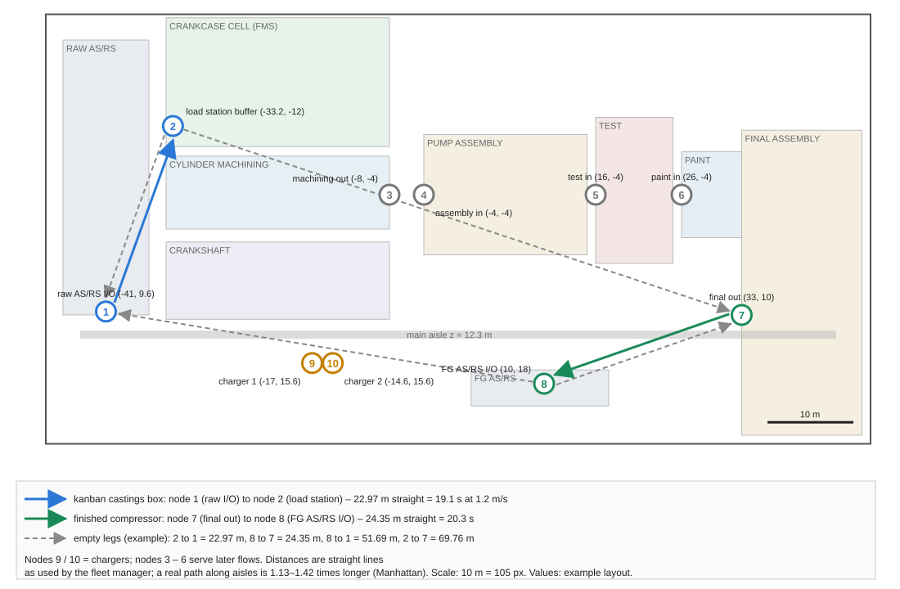
Figure 8.4 AGV node map of the case factory with the two automated flows: castings from the raw AS/RS to the load station and finished compressors to the finished-goods AS/RS [design example; coordinates in metres].
All functions were developed and tested against a virtual plant: 21 simulated PLCs, one per device, each a real Modbus TCP server with the full register map, the handshake and the event block, and with simple process models (machining times from Table 4.2 with spread and failures, pallet moves, operator tasks, CNC tool wear with sister groups, AGV travel and battery, crane cycles), running up to 200 times faster than real time. Switching to the real factory changes only the device table (IP addresses instead of local ports); the controller code is identical. Table 8.3 lists the automated acceptance tests. They are also the basis of the factory acceptance test with the machine suppliers' real PLCs: the same checks are repeated against each supplier PLC before delivery. PLC templates of the interface for Siemens S7-1200 / S7-1500 (SCL) and Delta AS (structured text) were written; they have not yet been compiled on real hardware.
Table 8.3 Acceptance tests of the FMS control system on the virtual plant (all passed, 2026-11-14) [measured on the virtual plant].
| Function | Checks | Examples of what is checked |
|---|---|---|
| Interface and virtual plant | 20 | 21 devices with correct map version; heartbeat; full pallet cycle; rejected impossible moves and second job while busy; write protection; Modbus exception codes; job parameters latched at acceptance; gateway watchdog (frozen heartbeat → READY off) |
| Cell controller | 15 | 12 crankcases in three work orders with one HMC switched off; EDD order; no job to the offline machine; fixture rule; restart from the database in manual mode; lost job result after a PLC restart → unknown + alarm → resolved; invalid work order refused |
| Tool management | 11 | without tool check a worn tap aborts a job (scrap); with tool check the job is blocked, the setter mounts a measured tool, command 14 is confirmed by the echo, zero aborts |
| Logistics | 15 | goods receipt and put-away; kanban supply of castings with exact material balance; FIFO; AGV with low battery charges first; no two AGVs at one dock; finished goods stored and shipped FIFO; retrieval before put-away; crane fault handled |
The method is implemented as a dependency-free Python and JavaScript system that runs on one offline PC: a verified factory twin (11 of 11 hand calculations passed), thesis modules that implement the Bayesian updating, the fast DES, discrepancy learning and the staging decisions, two measurement benches, and a browser implementation whose results match the Python reference number by number. On the same architecture, a real FMS control system (cell controller, tool management, AGV and AS/RS control) was built and passed 61 automated acceptance checks on a virtual plant of 21 Modbus PLCs, which shows that Modbus TCP and HTTP are sufficient not only to observe but also to control the FMS. All results are reproducible by one command each; monthly updates and predictions take seconds. Chapter 9 applies this implementation to the two reference cases.
Chapters 4–8 developed and tested the method in controlled experiments. This chapter applies it to the three production systems that motivate the thesis — the compressor FMS, the ball screw shaft line and the planned Roots blower extension of the compressor FMS — in the way a company would use it at the end of the design phase: freeze the design prediction, decide the first investment steps, size the data path, and prepare the validation. It also tests whether the method transfers to a second, structurally different line and to a new product family that shares the flexible cell of the first one.
Table 9.1 Data provenance of the cases.
| Data | Case 1 – compressor FMS | Case 2 – ball screw shaft line | Case 3 – Roots blower extension | Label |
|---|---|---|---|---|
| Products, routing, cycle times | design model config/factory.json (Table 4.2) | factory design web/bsfmfg_data.js, route BS, variant G (12 operations) | reference family and routing of this thesis (Tables 9.8, 9.9) | design / reference estimate |
| Machine counts | design model (16 stations) | design rule of the ball screw design: ⌈load / (available time × OEE 0.75)⌉ | same design rule; shared stations of case 1 | design / reference estimate |
| MTBF, MTTR, scrap | design model | scrap from the design; MTBF / MTTR per machine class (Table 9.6) | classes of Table 4.2, adapted (Table 9.9) | design / reference estimate |
| Costs, margin, demand | Table 7.1, Section 7.2.3 | – | Section 9.4.1, Table 9.14 | reference estimate |
| Production data | none yet (Section 9.7) | none yet | none yet | – |
Three variants of V-type two-cylinder piston air compressors (VC10, VC20, VC30; mix 0.3 / 0.5 / 0.2) are produced on 13 station types with 16 machines (Table 4.2): a crankcase FMS cell with three HMCs and pallet changers, cylinder and crankshaft machining, pump assembly, robot station, two performance test benches, paint, final assembly and packing. Productive time is 330 hours per month.
At the end of the design phase the twin's prediction for the fully implemented FMS (all options of Table 7.1) is frozen (Section 4.8.2). The record thesis/data/case1_P0.json (created 2026-11-13) states:
Table 9.2 Frozen design prediction P0 of the mature monthly good output [simulated, reference design].
| Prediction | Value [compressors / month] |
|---|---|
| Deterministic design model B0 (point values, 20 replications) | 6 322 |
| P0 – prior predictive with design priors, mean (400 samples) | 6 176 |
| P0 – 90 % prediction interval | 5 916 – 6 413 |
| P0 – median | 6 184 |
The prior predictive is 2.3 % below the deterministic design value: when the parameters are uncertain, losses at the stations combine non-linearly (the bottleneck can move to any of several stations), so the expected output is lower than the output at the expected parameters — the optimism of point-value design studies, quantified. The interval (± 4 %) expresses only the uncertainty encoded in the priors; Chapter 6 showed that real ramp-ups are likely to fall below it in the first months (month 1 ≈ 68 % of the design output in the virtual ramp-up), which is exactly what the sequential updating is designed to correct.
The staging decision of Chapter 7, made at design time with the reference values, recommends AS2 + FRB in stage 1 and GR2 in stage 2 (incremental NPV 6.57 M EUR versus no investment with the screening model). Table 9.3 varies one reference estimate at a time.
Table 9.3 One-at-a-time sensitivity of the design-time staging decision [calculated, reference estimates].
| Variation | Plan (stage 1 / 2 / 3 / 4) | ΔNPV [M EUR] |
|---|---|---|
| base case | AS2 + FRB / GR2 / – / – | 6.57 |
| margin −30 % (315 EUR) | AS2 + FRB / GR2 / – / – | 4.59 |
| margin +30 % (585 EUR) | AS2 + FRB / GR2 / – / – | 8.55 |
| capex −30 % | AS2 + FRB + MES / GR2 / – / – | 6.68 |
| capex +30 % | FRB / AS2 + MES / – / – | 5.76 |
| demand × 0.8 | – / – / – / – | 0.00 |
| demand × 1.2 | AS2 + FRB / GR2 / MES / – | 13.38 |
| discount 2.5 % / half-year | AS2 + FRB / GR2 / – / – | 7.69 |
| discount 10 % / half-year | AS2 + FRB / GR2 / – / – | 4.85 |
| budget 250 000 EUR / stage | FRB / AS2 / MES / – | 5.93 |
| budget 800 000 EUR / stage | GR2 + AS2 + FRB / – / – / – | 6.55 |
| penalty 0 EUR / unit | AS2 + FRB / GR2 / – / – | 5.84 |
| penalty 150 EUR / unit | AS2 + FRB / GR2 / – / – | 8.04 |
Three conclusions hold under all variations except low demand: robot-assisted final assembly (FRB) and the second assembly station (AS2) are always the first steps — they relieve the two most loaded stations of the design; the second grinder is the next step whenever the budget allows; the MES enters when capex is cheaper, demand higher or the budget tighter. With demand 20 % below the forecast, no option pays within the horizon — the existing capacity is sufficient, and the decision should wait for demand data. Margin, discount rate and penalty change the value but not the decision. The design-time plan is therefore a sound starting decision; Chapter 7 showed that re-deciding stages 2–4 with the updated twin adds a further 1.7 M EUR on average over keeping this plan fixed.
The case has 21 Modbus devices (Section 8.9.1): the 16 stations of Table 4.2, the pallet system of the crankcase cell, 2 AGVs and 2 AS/RS cranes. With the 36-register FAST + EVENT read every 0.25 s and a PLC scan of 10 ms [assumption], the formulas of Chapter 5 give 0.22 Mbit/s of traffic, a sequential cycle of 127 ms (limit 41 devices at this period) and a parallel cycle of 12 ms; maximum detection latency ≈ 0.26 s. Both gateway types meet H1's criteria here; the parallel gateway is recommended because it keeps the same software for case 2. The control system of Section 8.9 uses the same network and adds the command traffic of about one job per device and minute, which is negligible against the polling load.
The static model (Section 4.4.1) gives the crankcase cell a capacity of 9 754 parts per month, or 29.6 parts per hour, because it sees only the three HMCs. The FMS of Figure 4.4 contains two further shared resources that every part uses — the load station with one operator and the shuttle — and a fixed number of pallets. The cell is therefore a closed queueing network: N pallets circulate between the load station (one server, mean service 147 s per part for unload and load together, including the operator's variability [design example]), the shuttle (one server, about 70 s per part for three moves [calculated from the move-time rule]) and the HMC group (three servers, 343.5 + 15 = 358.5 s per part). Mean value analysis (MVA) gives the throughput X(N) exactly for the product-form network (model A); model B adds the time during which the load station and the HMC changers stay blocked while the shuttle exchanges a pallet. Figure 9.1 compares both models with measurements of the real cell controller on the virtual plant.
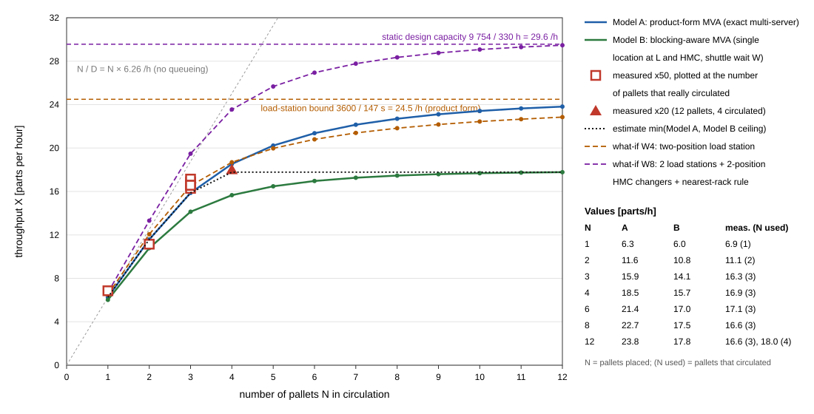
Figure 9.1 Throughput of the crankcase cell versus the number of pallets: mean value analysis (model A product form, model B with blocking), what-if cases and measurements of the cell controller on the virtual plant before the dispatching fixes of Section 8.9.3 [calculated; simulated].
Three results matter for the design. First, no number of pallets can lift the cell above 3600 / 147 = 24.5 parts per hour: the single operator at the load station, not the HMCs, bounds the cell. Second, the blocking-aware model B saturates at 17.8 parts per hour with 12 pallets, i.e. 5 867 parts per month — only 3.5 % above the static factory bottleneck (FINAL, 5 667 per month, Table 4.3). In practice the crankcase cell is therefore a co-bottleneck of the whole factory, which the static model, with its 9 754 parts per month, does not reveal. Third, the measurements on the virtual plant (16.6 – 18.0 parts per hour with 12 pallets) agree with the lower of the two models within −9 % to +4 %, so the closed-network model is a usable design tool for the cell. The measurements also exposed two weaknesses of the first dispatching rules — only 3 – 4 of the 12 pallets circulated, and VC30 orders starved behind fixture type A — which led to the fixture-balance and nearest-rack rules of Section 8.9.3. After these fixes the same measurement (12 pallets, design mix, 3.5 simulated hours at 20 × real time) gives 20.0 parts per hour (70 parts, all three variants), the three HMCs equally busy (65 / 65 / 62 %), the load station busy 80 % and the shuttle 30 % [simulated]. Four pallets were enough to reach this value — as model A predicts, pallets beyond about four add little while one operator serves the cell; the value lies between model B with the nearest-rack rule (19.3) and model A (23.8).
Table 9.4 evaluates design changes of the cell with model B at 12 pallets.
Table 9.4 What-if analysis of the crankcase cell, 12 pallets, design mix [calculated, mean value analysis model B].
| Case | Parts / h | Parts / month (330 h) |
|---|---|---|
| Base design (one load station, single-location HMC changers) | 17.8 | 5 866 |
| Pallets stored in the rack locations nearest to the load station | 19.3 | 6 371 |
| Unload + load time reduced from 140 s to 100 s (quick-clamping fixtures) | 21.3 | 7 019 |
| Two-position load station | 22.9 | 7 540 |
| Second load station | 25.0 | 8 234 |
| Two-position changers at the HMCs only | 17.8 | 5 888 |
| Second load station + two-position HMC changers + nearest-rack rule | 29.5 | 9 727 |
| Fourth HMC with one load station | 17.9 | – |
| Fourth HMC with two load stations | 29.6 | – |
The table turns the abstract statement "the static model is optimistic" into an investment rule for the case factory: a fourth HMC is worthless without a second load station, whereas a second load station (or a two-position station with quick-clamping fixtures) raises the cell by 28 – 40 % at a fraction of the cost of a machine tool. The combination of a second load station, two-position HMC changers and the nearest-rack rule reaches the static capacity of the three HMCs. For the staging decision of Chapter 7 this means that "second load station" belongs in the option set of stage 1 of a real project; it was not in Table 7.1 because the static model could not see its value.
The same design-stage analysis was carried out for the logistics and the tools of the cell; Table 9.5 summarises it.
Table 9.5 Design-stage results for material handling and tool management of case 1 [calculated; simulated].
| Quantity | Result | Consequence |
|---|---|---|
| Stacker-crane cycle (FEM 9.851 reference points, raw AS/RS) | single command 34.8 s (103 jobs / h); dual command 57.8 s for two jobs (125 jobs / h) | the planning value of 50 s is a margin of 1.44; crane load at 15 parts / h ≈ 10 % |
| Transport demand at 15 crankcases / h | 3.6 castings boxes + 15 finished compressors = 18.6 trips / h | 0.9 – 1.7 AGVs depending on path length and availability → 2 AGVs |
| One AGV only (simulation, 40 h) | 186 min of castings stock-out | charging stops all transport; the second AGV is needed for availability, not for capacity |
| Kanban lead time crane + AGV | nominal 128 s; 95 % quantile 154 – 184 s | reorder point of 2 castings (480 s of demand) is sufficient |
| Put-away before retrieval at the AS/RS I/O point (first rule) | 27.8 min stock-out per 40 h during goods receipts | retrieval priority (Section 8.9.5) instead of a reorder point of 7 |
| Tool-life spread (lognormal, σ = 0.12) with life set to the median and 2 % reserve | 43 % of tools reach the end of their real life before the counter | the reserve of Eq. (8.1) covers planning errors only |
| Life setting for a failure risk of 10 % / 1 % / 0.1 % | 14.3 % / 24.4 % / 31.0 % below the median (M8 tap: 1 286 / 1 135 / 1 035 threads) | risk-based life values in the CNC |
The last two rows connect the tool management to the method of the thesis. A count-based CNC cannot see the real wear of a tool; it can only stop it at a set count. If the count equals the median life, almost half of the tools fail earlier. The right setting depends on the spread of the real tool life, which is uncertain at design time — exactly the situation of Chapter 4. The conjugate models of Section 4.6 apply unchanged: breakages of the M8 tap are a Poisson process with a Gamma prior (for example Gamma(1.5, 10 000 threads)); after 3 breakages in 30 000 threads the posterior is Gamma(4.5, 40 000), with an expected interval of 40 000 / 3.5 = 11 429 threads between breakages; the wear life follows the Normal-Inverse-Gamma model on the log scale. Tool life is therefore a second, independent field in which the sequential Bayesian updating of the twin produces directly usable settings, and the control system of Section 8.9 already records the data it needs (uses per pocket, change requests, aborted jobs).
The ball screw factory designed in this project produces 120 ground C5 ball screws BS-3210 per day (2 shifts × 7.5 h, 250 days; 2 500 shafts per month). Route BS, variant G (thread ground from the solid) has 12 operations on 12 machine types (Table 9.6). Its structure differs from case 1: one product, long batch-dependent operations, a heat-treatment step running three shifts, and a dominant precision-grinding operation (42 min per piece).
Table 9.6 Route BS, variant G, with design machine counts and reference reliability [design / reference estimate].
| Machine type | Operation(s) | min / piece (incl. set-up share) | Machines needed (OEE 0.75) | Machines | MTBF [h] | MTTR [min] | Scrap |
|---|---|---|---|---|---|---|---|
| MS-SAW band saw | 10 | 1.17 | 0.21 | 1 | 150 | 20 | 0.2 % |
| BS-STR straightening (soft) | 20 | 2.58 | 0.46 | 1 | 120 | 20 | 0.3 % |
| BS-CTR facing + centring | 30 | 1.45 | 0.26 | 1 | 90 | 25 | 0.1 % |
| BS-TRN CNC lathe | 40 | 9.75 | 1.73 | 2 | 60 | 30 | 0.5 % |
| BS-IND induction hardening | 50 | 5.33 | 0.95 | 1 | 50 | 40 | 1.0 % |
| HT-TMP tempering furnace (3 shifts) | 60 | 2.50 | 0.30 | 1 | 300 | 60 | 0.2 % |
| BS-STH straightening (hard) | 70 | 6.17 | 1.10 | 2 | 80 | 30 | 1.5 % |
| BS-CLP centre-hole grinding | 80 | 1.67 | 0.30 | 1 | 120 | 15 | 0.1 % |
| BS-CGR cylindrical grinding | 90 | 9.62 | 1.71 | 2 | 60 | 35 | 0.5 % |
| BS-TGR thread grinding | 100 | 42.25 | 7.51 | 8 | 40 | 45 | 1.5 % |
| QC-LED lead measurement | 120 | 12.25 | 2.18 | 3 | 200 | 30 | 0.5 % |
| AS-WSH washing | 130 | 1.50 | 0.27 | 1 | 150 | 20 | 0 % |
The static capacities (Eq. 4.2, Figure 9.2) reveal two almost equal bottlenecks: thread grinding (3 433 good shafts per month) and induction hardening (3 435), followed by turning (3 795) and cylindrical grinding (3 839) [calculated]. The reduced-order DES of the designed line yields 3 055 good shafts per month — 11 % below the static bottleneck, because two nearly equal bottlenecks interfere through blocking and starvation, and 22 % above the target of 2 500, because the design sized the machines with an assumed OEE of 0.75 while the reference reliability values imply higher machine availability. Two consequences follow. First, the design has a capacity reserve of about one fifth — or the machine count could be reduced if the reliability values are confirmed. Second, with two bottlenecks within 0.1 %, the design model cannot know which of them will limit the real line: that depends on parameters that only operation reveals.
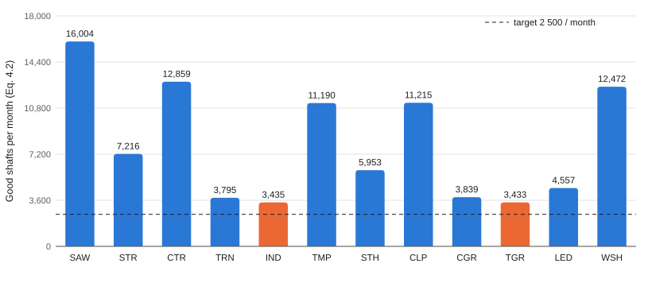
Figure 9.2 Static capacity of the ball screw shaft line per machine type; the two tied bottlenecks are highlighted [calculated].
The virtual ramp-up of Chapter 6 was repeated on the ball screw line with 20 hidden true factories (same deviation and ramp-up generator, 30 parameter samples per prediction).
Table 9.7 Transfer test on the ball screw line, 20 scenarios [simulated].
| Month | True output | Error B0 design | Error P07 twin | Error P07D twin + discrepancy | P07D coverage 90 % | Bottleneck: twin | Bottleneck: design |
|---|---|---|---|---|---|---|---|
| 1 | 1 649 | 86.5 % | 83.2 % | 83.2 % | 0 % | 65 % | 65 % |
| 2 | 2 091 | 46.6 % | 16.5 % | 16.5 % | 35 % | 85 % | 60 % |
| 3 | 2 339 | 31.2 % | 17.0 % | 8.1 % | 95 % | 85 % | 60 % |
| 4 | 2 487 | 23.1 % | 15.0 % | 4.2 % | 100 % | 85 % | 55 % |
| 6 | 2 597 | 17.9 % | 9.5 % | 4.7 % | 100 % | 80 % | 50 % |
| 8 | 2 667 | 14.7 % | 6.5 % | 4.7 % | 100 % | 90 % | 50 % |
| 10 | 2 700 | 13.4 % | 4.7 % | 3.5 % | 100 % | 95 % | 50 % |
| 12 | 2 661 | 15.0 % | 2.6 % | 4.3 % | 100 % | 100 % | 50 % |
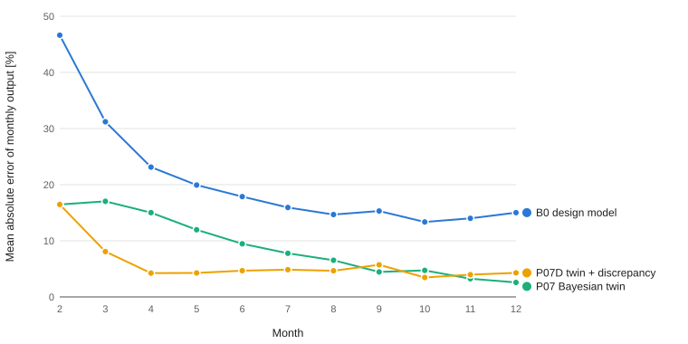
Figure 9.3 Transfer test on the ball screw line: mean absolute error of the monthly output prediction, 20 scenarios [simulated].
The pattern of Chapter 6 transfers to the second line: the design model never falls below 13 % error; the twin with discrepancy learning is below 5 % from month 4 (except month 9, 5.7 %) with 100 % coverage of its 90 % intervals from month 4; the parametric twin alone converges to 2.6 % by month 12. The bottleneck result is even clearer than in case 1: because the two bottlenecks are nearly tied, the design model is right in only 50–65 % of the factories, the twin in 80–100 %. Errors in month 1 are larger than in case 1 (83–87 %): the long thread-grinding operation and the low design MTBF of 40 h make this line more sensitive to the halved MTBF and longer repairs of the first ramp-up month.
The complete ball screw + guide factory has 73 machines. At a 0.25 s period a sequential gateway would need 442 ms per cycle — beyond the period (limit 41 devices); a parallel gateway needs about 14 ms. At a 1 s period a sequential gateway suffices (442 ms cycle, maximum latency ≈ 1.01 s). Traffic is 0.78 Mbit/s at 0.25 s [calculated]. The measured campaign of Chapter 5 (80 and 160 machines, parallel polling, zero event loss) covers this size.
The company plans to use the compressor FMS of case 1 also for a second product family: rotary lobe (Roots) blowers. Case 3 asks whether the method transfers to a product-family extension — a new family that has its own new stations but shares the flexible core of the existing factory with the first family. This situation differs from both earlier cases: case 1 designs one factory for one family, case 2 a separate line; in case 3 the two families compete for the same pallet cell, washer, paint line and packing station, so the capacity of one depends on the load of the other. Nature of the case: there are no Roots blower designs, quotations or production data yet. Every product, demand, routing, cycle-time, reliability and money value of this section is a [reference estimate] — an engineering estimate of the design phase, chosen to be consistent with the compressor design (config/factory.json, Table 4.2) — and is labelled as such, like the reliability values of case 2. Code: thesis/code/case3_roots.py (seeded, about 10 s); data: thesis/data/case3_roots.json, case3_P0.json, case3_rampup.csv.
Product. A Roots blower is a dry-running rotary positive-displacement machine: two rotors with three lobes each (tri-lobe; lower pressure pulsation and noise than two-lobe rotors) turn in opposite directions inside a housing and carry the air from the inlet to the outlet without internal compression; the pressure builds up against the system when the trapped volume opens to the outlet. The rotors never touch each other or the housing: they are kept in phase by a pair of timing gears and run with small clearances, so that no oil enters the air. The proposed family has three sizes for aeration, pneumatic conveying and vacuum duties (Table 9.8). They share one rotor cross-section (rotor centre distance and lobe profile) and differ in rotor length, which is the usual way of building a blower series with few cutting tools and fixtures.
Table 9.8 Reference Roots blower family of case 3 [reference estimate].
| Property | RB-50 | RB-100 | RB-150 | Basis of the estimate |
|---|---|---|---|---|
| Nominal suction flow [m³/h] | 50 | 100 | 150 | type number = nominal flow in m³/h |
| Maximum pressure difference [mbar] | 500 | 500 | 500 | usual limit of single-stage Roots blowers without cooling |
| Rotors | 2 × tri-lobe | 2 × tri-lobe | 2 × tri-lobe | common cross-section, rotor length ∝ flow |
| Rotor length [mm] | 75 | 150 | 225 | Q ≈ ηv Vrev n at the same speed |
| Drive motor [kW] | 1.5 | 2.2 | 4.0 | P ≈ Qth Δ p / ηm (below) plus starting margin |
| Housing, grey cast iron EN-GJL-250 [kg] | 18 | 26 | 36 | similar to the VC crankcases; fits the 3 HMCs and their pallets |
| Price, bare-shaft blower [EUR] | 1 100 | 1 500 | 2 000 | between VC10 and VC30 (Table 4.2 economics) |
| Mix share | 0.35 | 0.45 | 0.20 | small sizes dominate, as for the compressors |
Justification of the sizes [calculated from the reference values]. With an assumed volumetric efficiency ηv = 0.85 at 500 mbar (slip back through the clearances), RB-100 needs a theoretical flow Qth = 100/0.85 = 118 m³/h, i.e. Vrev = 118 / (2 900 · 60) = 0.68 litres per revolution at 2 900 min⁻¹. Because a Roots blower compresses at constant volume, the shaft power is about P = Qth Δ p / ηm = (118/3600)· 50 000 / 0.9 = 1.8 kW for RB-100 (0.9 kW for RB-50, 2.7 kW for RB-150), which leads to the motor sizes of Table 9.8. The family therefore lies in the same power class as the compressors (2.2 – 5.5 kW) — a deliberate choice: the housings and end covers are of the same size and material as the crankcases, so the existing cell can machine them, and motors, paint and packaging come from the same suppliers.
Demand and economics [reference estimate]. At maturity 400 blowers per month (4 800 per year) are planned, reached in four half-year stages (150, 250, 330, 400 per month) — about 7 % of the compressor volume, a typical size for a niche family entering a market in which the company is unknown. The contribution margin is 550 EUR per blower (higher than the 450 EUR of a compressor, Section 7.2.3, because blowers are sold mainly to industrial customers). The compressor programme is the mature design demand of 6 000 per month (Section 7.2.3) in the fully implemented FMS of case 1 (all options of Table 7.1, the configuration of P0 in Table 9.2).
Parts and make-or-buy. One blower consists of: one housing and two end covers (EN-GJL-250 castings, bought in raw and machined in the existing cell); two rotors (ductile-iron castings, e.g. EN-GJS-600-3, with integral shaft ends, machined in a new rotor cell); one pair of timing gears (bought in finished and matched; in-house gear cutting and grinding would need a gear grinding machine for only 400 gear pairs per month and is not proposed in the first stage); four rolling bearings (a fixed bearing at the gear end that sets the axial rotor position, floating bearings at the drive end), shaft seals, a gear cover with oil and fasteners (all bought in).
Routing. Table 9.9 lists the station types of the extension with their cycle times per blower. The housing and both end covers of one blower are machined as a kit: they are clamped together on one tombstone fixture of a new fixture type C (housing on one face, the two covers on the other), so that one pallet cycle at the load station and one HMC cycle deliver all machined cast parts of one blower and their machining stays matched (bearing bores of the covers and rotor bores of the housing are located by the same dowel-hole pattern). The HMC program contains the critical features: both rotor bores (bore diameter and parallelism to each other, IT6–IT7 class), both end faces square to the bores, inlet and outlet flanges, feet, dowel holes and about 40 tapped holes; covers: bearing and seal bores and faces. The rotors are turned (journals and lobe tip diameter), profile-milled on a 5-axis or indexing machining centre (both rotors of a set, the most demanding new operation), ground at the bearing and gear seats and dynamically balanced (balance quality for example G 2.5 — check ISO 21940-11 [check the standard]). In assembly the fitter mounts the bearings, sets the end clearances (shims at the fixed bearing), mounts the timing gears and sets the rotor-to-rotor clearance by turning one gear hub relative to its shaft until the clearance measured with feeler gauges at several angular positions is uniform; rotor-to-housing tip clearances result from the machining and are checked. Typical clearances of small blowers are 0.10–0.20 mm between the rotors, 0.10–0.15 mm at the tips and 0.08–0.15 mm at the end faces [reference estimate]. Every blower then runs on a run-test bench: run-in at the rated pressure difference until the discharge temperature is stable, measurement of flow and shaft power at two or three points, vibration and noise checks. For the performance measurement the acceptance-test principles of ISO 1217 for displacement compressors are applicable in kind (an earlier edition stated its use for full-load acceptance tests of lobe blowers; whether the current edition covers Roots blowers, and which annex, must be checked [check the standard]); noise statements are outside ISO 1217 and follow the compressor noise test code ISO 2151, vibration limits a machine-vibration standard such as the ISO 20816 series [check the standards].
Table 9.9 Station types of the Roots extension: cycle times per blower and reference reliability; "shared" marks the stations of case 1; Cm = capacity for blowers alone [reference estimate; capacity calculated with Eq. 4.2].
| Station type | Operation | c | t RB-50 / 100 / 150 [s] | t̄ [s] | MTBF [h] | MTTR [min] | q [%] | Cm [per month] |
|---|---|---|---|---|---|---|---|---|
| LOADC (shared) | unload + load one kit pallet (hoist), × 1.05 | 1 | 336 / 368 / 420 | 367 | 200 | 5 | 0 | 3 236 |
| HMCC (shared) | housing + 2 covers, incl. pallet change | 3 | 1 515 / 1 915 / 2 365 | 1 865 | 30 | 20 | 1.0 | 1 871 |
| WASH (shared) | washing of the kit | 1 | 170 / 200 / 240 | 198 | 80 | 10 | 0 | 6 003 |
| RTURN | turning, 2 rotors | 1 | 530 / 660 / 830 | 649 | 30 | 15 | 0.8 | 1 802 |
| RMILL | rotor profile milling, 2 rotors | 1 | 1 250 / 1 560 / 1 950 | 1 530 | 25 | 25 | 1.5 | 753 |
| RGRIND | grinding of bearing and gear seats | 1 | 480 / 600 / 750 | 588 | 40 | 18 | 1.0 | 1 985 |
| BAL | dynamic balancing, 2 rotors | 1 | 360 / 420 / 500 | 415 | 100 | 10 | 0.2 | 2 852 |
| RASSY | assembly, clearance and timing setting | 2 | 2 300 / 2 700 / 3 200 | 2 660 | 120 | 10 | 0.5 | 888 |
| RTEST | run test incl. mounting | 1 | 1 980 / 2 160 / 2 400 | 2 145 | 90 | 15 | 1.0 | 547 |
| PAINT (shared) | painting of the blower | 1 | 180 / 210 / 250 | 208 | 60 | 15 | 0.6 | 5 667 |
| PACK (shared) | packing | 1 | 150 / 180 / 220 | 178 | 80 | 6 | 0 | 6 685 |
The machine counts follow the design rule of case 2, c = ⌈ load / (available time × 0.75) ⌉, for 400 blowers per month: the assembly needs 1.19 stations and therefore two, the run test 0.96, rotor milling 0.69 and the kit on the HMCs 0.84 HMC-equivalents; all other new stations need less than 0.3 [calculated]. Reliability and scrap follow the classes of Table 4.2 (an HMC is an HMC), with three deliberate differences: rotor profile milling, a new process for the company, has the lowest MTBF and the highest scrap (1.5 %); the housing has a higher scrap than the crankcase (1.0 % against 0.8 %, porosity found in the long rotor bores); and the run test rejects 1 % of the blowers (contact or noise; rework is counted as scrap in the model, which is conservative).
What is shared and what is new. Shared with case 1: the crankcase cell (load station, operator, shuttle, pallet rack and the three HMCs; Roots tools occupy the 12 free magazine pockets 19–30 reserved for this purpose), the washer, the paint line, packing, the AGVs and both AS/RS, the test area's infrastructure (power, compressed air, data acquisition, MES test records) and the control system of Section 8.9. New: fixture type C pallets, the rotor cell (lathe, profile milling machine, grinder, balancing machine), two assembly stations with clearance gauges and a gear setting device, and one run-test bench. The existing compressor test benches are not used: they measure at 8 bar, and with 90 % static load (Table 9.10) they have no time to spare.
Roots extension alone. With Eq. (4.2) the static bottleneck of the extension is the run-test bench (547 blowers per month, 73 % loaded at 400), followed by rotor profile milling (753) and assembly (888) [calculated, Table 9.9]. Every dedicated station has a reserve of at least 37 %, as intended by the design rule.
Both families together. Table 9.10 shows the load of the shared stations at the mature programme of 6 000 compressors and 400 blowers per month, computed with Eq. (4.2) from the cycle times of Table 4.2 (full FMS of case 1) and Table 9.9. For the load station the unload + load time per pallet cycle of Section 9.2.5 is used (147 s per crankcase, 367 s per kit); the 89 s of Table 4.2 count only the load task and would hide the load station's real work.
Table 9.10 Static load of the shared and of the most loaded compressor stations at 6 000 compressors and 400 blowers per month; compressor capacity left [calculated, Eq. 4.2].
| Station type | Utilisation, compressors only | Utilisation, with Roots | Compressor capacity alone [per month] | Compressor capacity with 400 blowers [per month] |
|---|---|---|---|---|
| Load station (147 s / 367 s per pallet cycle) | 74.3 % | 86.6 % | 8 078 | 7 080 |
| HMC group (3 HMCs) | 61.4 % | 82.8 % | 9 769 | 7 681 |
| Wash | 74.9 % | 81.6 % | 8 010 | 7 477 |
| Paint | 81.0 % | 88.1 % | 7 405 | 6 882 |
| Pack | 59.7 % | 65.7 % | 10 055 | 9 454 |
| Test (compressors only) | 89.6 % | 89.6 % | 6 699 | 6 699 |
| Lathe (compressors only) | 86.8 % | 86.8 % | 6 916 | 6 916 |
| Final assembly with robot (compressors only) | 79.4 % | 79.4 % | 7 558 | 7 558 |
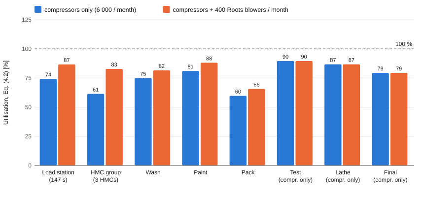
Figure 9.4 Static utilisation of the shared stations and of the most loaded compressor stations without and with 400 Roots blowers per month [calculated, reference estimates].
Seen statically, the extension fits (Figure 9.4). The Roots kits add 21 percentage points of load to the HMC group — one kit needs as much HMC time as 5.2 crankcases — and 12 points to the load station, but no shared station exceeds 89 %. The factory bottleneck stays the compressor test (6 699 per month); paint moves from third to second place, only 2.7 % above it, and the cell (7 080 at the load station, 7 681 at the HMCs) keeps a reserve of 6 – 15 % over the compressor bottleneck. A static design study would therefore conclude that the Roots extension needs new rotor, assembly and test equipment but no change of the existing FMS. The next section shows that this conclusion is wrong for the cell.
The cell is analysed as the closed queueing network of Section 9.2.5 — load station L (one operator), shuttle S and HMC group H (three servers) — now with three fixture chains: chain A (fixture type A, VC10 and VC20 crankcases), chain B (fixture type B, VC30) and chain C (fixture type C, Roots kits). A pallet keeps its fixture, so each chain is a closed loop with its own number of pallets Nf, and the three chains share the stations (Buzacott and Shanthikumar, 1993). The mean demands per pallet cycle are DL = 147 / 147 / 367 s, DH = 331.9 / 465 / 1 865 s and DS = 70 s (three moves) for chains A / B / C [calculated from Tables 4.2 and 9.9]. For a population vector n = (nA, nB, nC) the multi-chain mean value analysis computes, chain by chain,
for every queueing station k, where ef removes one pallet of chain f (arrival theorem); the HMC group is entered as a queue with demand D/3 plus a pure delay 2D/3 (the usual approximation of a multi-server station in multi-chain MVA). As in model B of Section 9.2.5, the load station and the HMC changers stay blocked during the shuttle exchanges eL, eH and the shuttle wait W:
solved as a fixed point. Because the chains have different service times at the same stations, the network is not of product form and Eq. (9.1) is an approximation; for the compressor cell alone (8 A + 4 B pallets) it gives 17.72 pallet cycles per hour against 17.78 of the exact single-chain model B of Section 9.2.5 (−0.3 %), and the single-chain models of the script reproduce Section 9.2.5 exactly (model A 23.82, model B 17.78, load-station bound 24.49 parts per hour) [calculated]. The programme requires d = 14.55 / 3.64 / 1.21 pallet cycles per hour for chains A / B / C (6 000 compressors in the mix 0.8 / 0.2, 400 blowers, 330 h). The measure of the cell is the programme fraction
the share of the whole programme the cell can deliver; for each case the allocation of the 12 pallets to the three fixture types is chosen by enumeration.
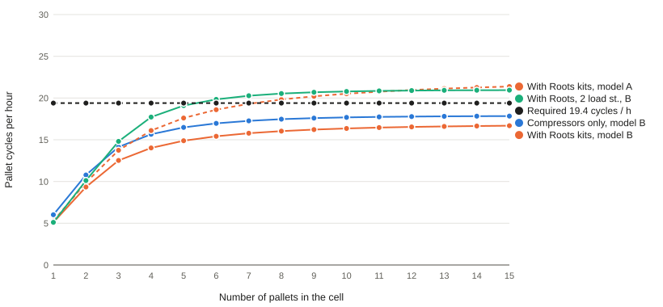
Figure 9.5 Throughput of the shared cell versus the number of pallets, single-chain models with the combined mix of pallet cycles (6.2 % Roots kits): compressors only (model B), with Roots kits (models A and B) and with Roots kits and a second load station (model B); dashed black: cycles required for 6 000 compressors and 400 blowers per month [calculated, mean value analysis].
Figure 9.5 gives the picture with one aggregated chain. The kits are only 6.2 % of the pallet cycles but 14 % of the load-station time and 26 % of the HMC time; the mean load-station time per cycle rises from 147 to 160.7 s and the load-station bound falls from 24.5 to 22.4 cycles per hour. With blocking (model B) the cell saturates at 16.5 cycles per hour with 12 pallets — 15 % below the 19.4 cycles per hour the programme requires — whereas a second load station lifts it to 20.9 [calculated]. Table 9.11 gives the three-chain results.
Table 9.11 Shared cell with three fixture chains, 12 pallets unless stated: best allocation, programme fraction and compressor output when the 400 blowers are served first [calculated, multi-chain mean value analysis with blocking, Eqs. 9.1–9.3; months of 330 h without failures and scrap, which reduce the values by about 2 %].
| Case | Pallets A / B / C | Programme fraction φ | Compressors / month (blowers first) | Roots kits / month possible |
|---|---|---|---|---|
| Compressors only (case 1 cell, reference) | 9 / 3 / – | 0.936 | 5 617 | – |
| Compressors + Roots, one load station (design) | 7 / 2 / 3 | 0.783 | 4 701 | 515 |
| + pallets stored nearest to the load station | 7 / 2 / 3 | 0.838 | 5 027 | 522 |
| + quick-clamping kit fixture (350 s → 250 s per kit) | 7 / 2 / 3 | 0.799 | 4 792 | 573 |
| + two-position load station | 7 / 2 / 3 | 0.916 | 5 498 | 507 |
| + second load station | 7 / 2 / 3 | 0.945 | 5 672 | 507 |
| + second load station, 15 pallets (rack extended) | 9 / 3 / 3 | 1.008 | ≥ 6 000 (6 521) | 403 |
| + second load station + two-position HMC changers + nearest rack | 7 / 2 / 3 | 1.073 | ≥ 6 000 (6 435) | 534 |
| + fourth HMC, one load station | 7 / 2 / 3 | 0.801 | 4 693 | 568 |
| + fourth HMC + second load station | 7 / 3 / 2 | 1.193 | ≥ 6 000 (7 526) | 464 |
Four results follow. First, the shared cell, not the test bench or the rotor cell, becomes the bottleneck of the factory. With one load station the cell delivers only 78 % of the combined programme; if the 400 blowers are served first, the compressor output falls to 4 701 per month — 916 compressors (16 %) less than the same cell achieves without Roots work, and 30 % below the static factory capacity of 6 699 in Table 9.10. The static model, which saw a reserve of 6 – 15 %, misses this completely: the kits occupy the operator for 367 s and the shuttle-exchange blocking is paid per pallet cycle, whatever the cycle carries. Second, three fixture-C pallets are enough for the Roots programme: chain C needs 1.21 kits per hour, and three pallets give 1.2 – 1.7 (more C pallets only take work from the compressor chains). Splitting the pallets into fixture families costs capacity by itself — the single-chain estimate of the same case gives φ = 0.85, the three-chain model 0.78 — because a family cannot use the free pallets of another. Third, the investment rule of case 1 becomes stronger: a fourth HMC is again worthless without a second load station (φ 0.783 → 0.801), whereas a second load station gives 0.945 and, with three extra rack places (15 pallets) or with two-position HMC changers and the nearest-rack rule, the full programme (φ ≥ 1). Quick-clamping fixtures for the heavy kit alone help little (0.799), because the compressor pallet cycles dominate the operator's time. Fourth, the result depends on reference estimates that only operation will reveal — the kit's load-station and HMC times and the real compressor mix — which is the argument for the Bayesian twin and the staged decision below.
For the DES the Roots extension is represented, like case 1, as a reduced-order flow line with one blower per job (Table 9.9 in routing order; the housing and the rotor branches are placed in series, as the part lines of case 1). Two couplings with the compressor family are modelled explicitly: (i) the shared cell becomes one flow-equivalent station CELL with three servers whose rate equals the Roots throughput of the three-chain model of Table 9.11 in the design case (1.559 kits per hour with 7 / 2 / 3 pallets, saturated compressor chains), with the HMC's reliability and the housing's scrap; (ii) the other shared stations (wash, paint, pack) offer the blowers only the capacity left by the compressor programme, i.e. their cycle times are divided by 1 − uC with uC from Table 9.10 [assumption of the reduced-order model]. The static capacities of the resulting line are shown in Figure 9.6: CELL 504 blowers per month, run test 547, rotor milling 753, assembly 888 [calculated].
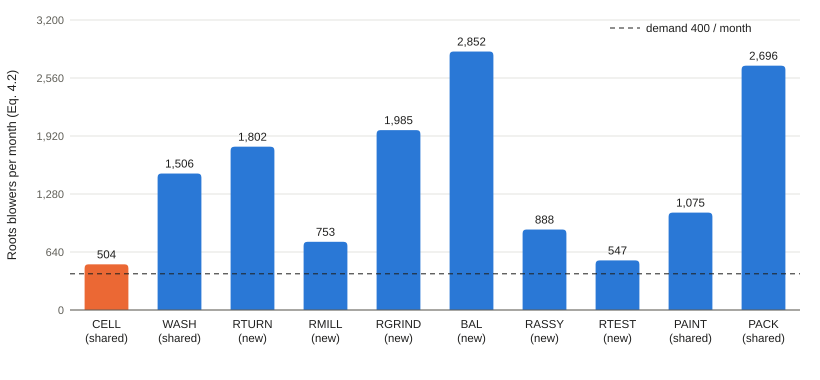
Figure 9.6 Static capacity of the Roots line per station type with the shared cell as flow-equivalent station and the shared stations at the capacity left by 6 000 compressors per month [calculated, reference estimates].
The frozen prediction P0 uses the design priors of Table 4.4 with the same worths as case 1 (failures 10 × MTBF hours, repairs 5, cycles 10 with ± 10 %, scrap 250 parts) and is stored in thesis/data/case3_P0.json (created 2026-11-15).
Table 9.12 Frozen design prediction P0 of the mature monthly good output of the Roots line [simulated, reference design].
| Prediction | Value [blowers / month] |
|---|---|
| Static bottleneck, Eq. (4.2): shared cell (flow-equivalent) | 504 |
| Deterministic design model B0 (point values, 20 replications) | 464 |
| P0 – prior predictive with design priors, mean (400 samples) | 459 |
| P0 – 90 % prediction interval | 436 – 482 |
| P0 – median | 459 |
| Share of P0 samples ≥ demand of 400 | 100 % |
The DES gives 8 % less than the static bottleneck, because the cell and the run test (504 and 547) lie close together and interfere through blocking; the prior predictive is 1.1 % below the deterministic value — less than in case 1 (2.3 %), because one station dominates and the bottleneck can move to fewer places. All P0 samples exceed the demand of 400: the extension as designed can supply its own family — but, as Section 9.4.3 showed, only at the expense of about 900 compressors per month. P0 for the Roots line is therefore conditional on the cell allocation; it is frozen together with the allocation (7 / 2 / 3 pallets, blowers first) and must be frozen again if the first investment step of Section 9.4.6 changes the cell.
The virtual ramp-up of Chapter 6 was repeated on the Roots line with 20 hidden true factories (the same deviation and ramp-up generator as in Section 9.3.3, own random seeds, 30 parameter samples per prediction, forgetting ρ = 0.7, discrepancy learning as in Section 6.3.4). The data file case3_rampup.csv holds all 240 scenario-months.
Table 9.13 Transfer test on the Roots line, 20 scenarios [simulated].
| Month | True output | Error B0 design | Error P07 twin | Error P07D twin + discrepancy | P07D coverage 90 % | Bottleneck: twin | Bottleneck: design |
|---|---|---|---|---|---|---|---|
| 1 | 300 | 54.6 % | 53.4 % | 53.4 % | 0 % | 100 % | 100 % |
| 2 | 348 | 33.3 % | 6.3 % | 6.3 % | 100 % | 100 % | 100 % |
| 3 | 379 | 22.2 % | 11.1 % | 7.6 % | 85 % | 95 % | 95 % |
| 4 | 394 | 17.6 % | 10.1 % | 4.2 % | 100 % | 95 % | 95 % |
| 6 | 410 | 13.2 % | 6.8 % | 2.3 % | 100 % | 100 % | 95 % |
| 8 | 414 | 11.9 % | 3.8 % | 3.5 % | 100 % | 100 % | 95 % |
| 10 | 413 | 12.2 % | 2.5 % | 3.3 % | 100 % | 100 % | 95 % |
| 12 | 414 | 11.9 % | 2.0 % | 2.4 % | 100 % | 100 % | 95 % |
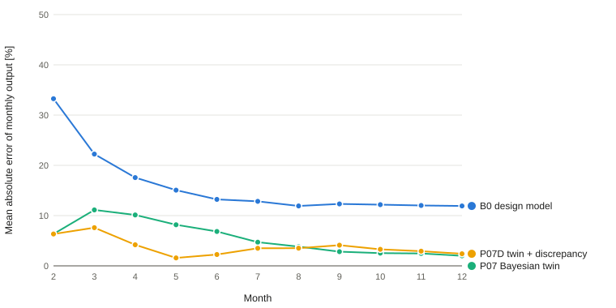
Figure 9.7 Transfer test on the Roots line: mean absolute error of the monthly output prediction, months 2–12, 20 scenarios [simulated].
The pattern of Chapter 6 and case 2 transfers to the third line (Table 9.13, Figure 9.7). The design model stays at about 12 % error from month 8 — the hidden factories are on average 11 % below the design value at maturity (414 against 464) — while the twin with discrepancy learning falls below 5 % from month 4 and stays there (1.6 – 4.2 % in months 4 – 12), with 85 – 100 % coverage of its 90 % intervals from month 2. The parametric twin alone converges more slowly (below 5 % from month 7, 2.0 % in month 12). The bottleneck question has a different answer than in case 2: the shared cell is the true bottleneck in 19 of the 20 factories (once the run test), and the design model already names it in 95 %. When one station clearly dominates, the twin's contribution is the output forecast, not the bottleneck identification — the method distinguishes the two situations, which is itself a useful property: the twin's bottleneck statement is a confirmation here, a correction in case 2. Month-1 errors (53 – 55 %) lie between case 1 and case 2.
Four options are screened for the first stage of the extension [reference estimates of capex]: a second load station of the shared cell with its operator position (LS2, 90 000 EUR), the nearest-rack storage rule in the cell controller with the rack changes it needs (NR, 15 000 EUR), a second run-test bench (RT2, 160 000 EUR) and a second rotor profile milling machine (RM2, 420 000 EUR). The decision uses the rolling-horizon rule of Chapter 7 (Eq. 7.3; four half-year stages, budget 400 000 EUR per stage, discount rate 5 % per half-year, maintenance 3 % of the capex per half-year, four half-years of terminal value) with a simplified screening model: the full staging code of Chapter 7 is built for the single compressor line and does not contain the shared cell, so the screening combines (i) the three-chain cell model of Section 9.4.3 for both families (best pallet allocation per option set, blowers served first, compressors capped by the rest of the factory at the P0 mean of 6 176, Table 9.2), and (ii) the static capacity of the dedicated Roots stations multiplied by the blocking efficiency of the DES (0.915). The screening is deterministic with design values; its robustness is checked with 40 samples of the design priors (lognormal ± 10 % on the kit's cell times and the dedicated cycle times).
Table 9.14 Screening of the first investment step of the Roots extension at the mature programme [calculated, reference estimates; failures and scrap of the cell included].
| Option set | Capex [EUR] | Compressors / month | Blowers / month | Δ contribution / month [kEUR] |
|---|---|---|---|---|
| none (one load station, 7 / 2 / 3 pallets) | 0 | 4 612 | 400 | 0 |
| NR – nearest-rack rule | 15 000 | 4 932 | 400 | +160 |
| LS2 – second load station | 90 000 | 5 565 | 400 | +476 |
| RT2 – second run-test bench | 160 000 | 4 612 | 400 | 0 |
| RM2 – second rotor milling machine | 420 000 | 4 612 | 400 | 0 |
| LS2 + NR | 105 000 | 5 769 | 400 | +578 |
The rule chooses LS2 + NR in stage 1 and nothing in stages 2–4; the incremental NPV against no investment is 23.0 M EUR over the eight half-years [calculated]. The order of magnitude is explained by the compressors: the value of the second load station is the compressor output it gives back (about 950 per month), not additional blowers, and its payback is less than one month. With LS2 + NR the factory makes 5 769 compressors and 400 blowers per month, more compressors than the case-1 cell alone could make with one load station (5 511 with failures and scrap). The two options that a static study of the extension would buy — a second test bench and a second rotor milling machine, for the two most loaded new stations — have no value at the planned demand, because the shared cell, not the extension, limits the factory. The decision is robust: in all one-at-a-time variations (Roots demand × 0.8, compressor demand 5 000, rotor milling time + 40 %, budget 150 000 EUR per stage) the first step contains LS2, and in 40 of 40 prior samples the first step is LS2 (39 times with NR). RT2 enters stage 1 only if the Roots demand is 50 % higher (600 per month, more than one bench can test) or the run test takes 30 % longer than estimated; with the higher demand it is chosen in 11 of 40 prior samples. The run-test time is therefore the reference estimate whose real value most affects the next decision, and the twin will measure it from the first month.
For the investment plan of the company this result has a clear form: the second load station (or a two-position load station with the nearest-rack rule) is the entry ticket of the Roots extension and belongs to the same investment as the rotor cell; a second test bench is the next step when the Roots demand passes about 500 per month. It confirms the statement of Section 9.2.5 for a second, independent reason: case 1 needs the second load station to reach its own programme, case 3 needs it to share the cell.
The extension adds seven Modbus TCP devices (lathe, rotor milling machine, grinder, balancing machine, two assembly stations, run-test bench); the shared stations are already connected. With 28 devices, the 36-register FAST + EVENT read every 0.25 s and the assumptions of Section 9.2.4, the formulas of Chapter 5 give 0.30 Mbit/s of traffic, a sequential cycle of 169 ms (still below the limit of 41 devices at this period) and a parallel cycle of 12 ms; the maximum detection latency remains ≈ 0.26 s [calculated]. The assembly stations and the run-test bench are manual or semi-automatic stations: their PLCs (or a small I/O controller) expose the standard status word, counters and events, and the measured values that belong to a blower — the set clearances and the test results (flow, power, temperatures, vibration, noise) — are sent per serial number to the MES over HTTP, not through the cyclic Modbus block, because they arrive once per blower and the twin needs only the pass / fail event and the cycle time. In the control system of Section 8.9 the extension changes data, not software: fixture type C is added to the pallet table and to the fixture balance rule, the kit is a new variant with its NC program and its tools in the reserved pockets 19–30 (the number of additional tool types must be checked against the 12 free pockets before the HMCs are ordered, Section 8.9), and the work orders of both families are dispatched by the same earliest-due-date rule. Two additions follow from the analysis: the cell controller should respect a target number of circulating fixture-C pallets (three, Table 9.11) so that kits do not crowd out the crankcases, and it should report the load-station time per pallet cycle and fixture type, which is the observation the twin needs to learn the most uncertain parameter of this case.
Table 9.15 What the method delivers, compared with the conventional design approach [simulated / calculated].
| Aspect | Conventional (design study, fixed) | Method of this thesis | Source |
|---|---|---|---|
| Output prediction error after half a year | 8–18 % (case 1: 10.0 %, case 2: 17.9 %, case 3: 13.2 % in month 6) | 2.3–4.7 % (P07D, month 6) | Tables 6.2, 9.7, 9.13 |
| Honest uncertainty (coverage of 90 % intervals) | 0 % | 94 % (case 1), 100 % from month 4 (case 2), 85–100 % from month 2 (case 3) | Tables 6.3, 9.7, 9.13 |
| True bottleneck identified | 73–77 % (case 1), 50–65 % (case 2), 95 % (case 3, one dominant bottleneck) | 97–100 % (case 1, from month 4), 80–100 % (case 2), 95–100 % (case 3) | Tables 6.5, 9.7, 9.13 |
| Capacity of a shared flexible cell (case 3) | static: 6 – 15 % reserve, factory bottleneck unchanged | process level: cell becomes the bottleneck, 16 % fewer compressors; 3 fixture-C pallets suffice | Tables 9.10, 9.11 |
| First investment step of an extension (case 3) | test bench and rotor machine for the most loaded new stations (no value) | second load station + nearest-rack rule (robust in 40 of 40 prior samples) | Table 9.14 |
| Value of staged investment (ΔNPV per EUR of capital) | 11.0 (static plan), 7.1 (all at once) | 13.1 (adaptive) | Table 7.2 |
| Event completeness of the data path | 63–98 % (state polling) | 100 % (event block) | Table 5.3 |
| Network load, 73–160 machines | – | 0.8–2.1 Mbit/s | Eq. 5.2 |
| Computing effort per monthly update | – | < 2 s on one PC | Table 8.1 |
The reference values enter the method in three places only — priors (Table 4.4 worths and design values), the case economics (Table 7.1) and the PLC timing (Chapter 5) — and each is designed to be replaced: priors are overwritten by data within a few months (Chapter 6), the staging decision is re-taken every half-year with the current quotations (Chapter 7), and the gateway formulas are re-evaluated with the measured scan times (Section 5.8). The conclusions that depend least on the reference values are those that compare policies on the same data (Tables 6.3, 7.3, 9.7, 9.13); the numbers that depend most on them are the absolute euro values and the frozen P0 interval. Case 3 adds one place in which reference values matter more than elsewhere: the Roots family itself is an estimate, and the most influential values — the kit's load-station and HMC times, the run-test time and the real compressor mix — decide whether the shared cell or the extension limits the factory. They are exactly the quantities the cell controller and the run-test bench record from the first kit onwards (Section 9.4.7); the screening of Section 9.4.6 is to be repeated with the first quotations for the rotor cell and the measured kit times.
Objective. Test hypotheses H2 and H3 with real data: does the sequentially updated twin predict the real monthly output better than the frozen design prediction P0 and a one-time calibration, and are its intervals calibrated?
Protocol.
case1_P0.json, 2026-11-13); replace by P0 v2 when the final design data replace Table 4.2, and freeze again before the first part.case3_P0.json, Table 9.12) together with its cell allocation and must be frozen again after the first investment step; in addition the compressor output of the shared cell is compared with the three-chain prediction of Table 9.11.Timeline. FMS design until about March 2027; installation and commissioning in 2027–2028; months 1–12 of ramp-up provide the validation data, which can be completed within the doctoral period if production starts by mid-2028.
thesis/README.md).Applied to the compressor FMS, the method froze a design prediction of 6 176 compressors per month (90 %: 5 916–6 413), 2.3 % below the deterministic design value, and recommended robot-assisted final assembly and a second assembly station as first investment steps — a recommendation robust to all one-at-a-time variations except low demand. Applied to the structurally different ball screw shaft line, it revealed two nearly tied bottlenecks (thread grinding and induction hardening) that the design model could not separate, and the Bayesian twin again reduced the prediction error below 5 % from month 4 and identified the true bottleneck in 80–100 % of the hidden factories against 50–65 % for the design. Applied to the planned Roots blower extension, which shares the crankcase cell with the compressors, the method showed what a static study misses: the extension fits every shared station statically (at most 89 % load), but at process level the shared cell becomes the factory bottleneck and would lose 16 % of its compressor output; three fixture-C pallets suffice for the 400 blowers per month, the frozen design prediction is 459 blowers per month (90 %: 436–482), the Bayesian twin again fell below 5 % error from month 4 with 85–100 % coverage, and the first investment step is a second load station with the nearest-rack rule, not the test bench or rotor machine a static study would buy. A complete validation protocol for the real ramp-up is in place, with the design prediction already frozen.
RQ1 – architecture with Modbus TCP and HTTP only. A reliable FMS twin can be built with these technologies if three conditions are met: a single gateway is the only Modbus client and all other systems use its HTTP API; every PLC carries the same register map plus an event block (change counter, last-change time stamp, 8-entry ring); and the gateway polls in parallel or is sized with Eq. (5.4). Under these conditions the laboratory campaign recovered all 23 825 events of 15 runs with up to 160 machines, with maximum detection latencies of 0.26–0.30 s at a 0.25 s period; the limits are set by the PLC response time (sequential gateways: Nmax = P/(k 𝔼[RTT])), not by bandwidth (2.1 Mbit/s for 160 machines) or by the HTTP side (≈ 4 500 full snapshots per second).
RQ2 – representing and updating uncertainty. Design statements can be translated into conjugate priors with one interpretable confidence parameter (the equivalent amount of data); sequential updates with a forgetting factor track the ramp-up; and a learned model discrepancy absorbs the structural error of a stationary model applied to a changing system. In the virtual ramp-up, this reduced the monthly output error to 3.6 % on average over months 2–12 (design model 12.0 %, one-time calibration 23.6 %), with 94 % coverage of 90 % intervals, and identified the true bottleneck in 97–100 % of the factories from month 4 (design model 73–77 %). The ball screw case confirmed the pattern on a structurally different line, and the Roots blower extension (case 3) on a new product family that shares the FMS cell (P07D below 5 % from month 4, 85–100 % coverage from month 2).
RQ3 – stepwise introduction. Re-deciding the investment options every half-year with the updated twin gave the highest expected value (+9.28 M EUR versus no investment, against 9.07 for all-at-once and 7.57 for a plan fixed at design time), the best downside and 44 % less capital than all-at-once. About two thirds of its advantage over the fixed plan came from learning the machines rather than the demand. For the Roots blower extension the same decision logic, combined with the process-level model of the shared cell, chose a second load station with the nearest-rack rule as the first step in all prior samples — not the test bench or rotor machine that the static loads of the new stations suggest.
Table 10.1 Status of the hypotheses.
| Hypothesis | Result | Evidence | Status | |
|---|---|---|---|---|
| H1 | ≥ 40 machines, latency ≤ 1 s, loss ≤ 0.1 % | 0 % loss up to 160 machines; max latency 0.26–0.30 s at P = 0.25 s; at P = 1 s the max exceeds 1 s by the RTT | measured, emulated PLC timing | supported, with design rules (event block; parallel polling or Eq. 5.4); real-PLC check pending |
| H2 | < 5 % error with ≥ 30 % less data than B0 / B1 | B0 and B1 never reach 5 % in most scenarios; P07D in all scenarios from month 4, P07 from month 9 | simulated (30 + 20 + 20 factories) | supported in simulation; field validation pending |
| H3 | ≥ 85 % coverage of 90 % intervals | parametric twin 8.5 %; with discrepancy learning 94 % (91–100 % across prior weights; 100 % from month 4 in case 2; 85–100 % from month 2 in case 3) | simulated | supported with discrepancy learning, rejected for the parametric twin alone |
| H4 | higher E[NPV] and lower under-capacity risk than ALL and STATIC | E[NPV] higher than both; CVaR better; under-capacity better than STATIC, equal to ALL | simulated (40 factories) | partly supported |
The two partial results are informative rather than disappointing. H3 shows that parameter uncertainty alone does not make a twin's uncertainty honest when the system changes faster than the twin's memory; the discrepancy term is a necessary part of the method, not an optional refinement. H4 shows that staged, learning-based investment buys value and downside protection with less capital, but cannot prevent short-term under-capacity that occurs before any data exist — the first-stage decision still rests on the design.
For companies moving from standalone CNC machines to an FMS: (1) express design values with their confidence and freeze the design prediction before start of production; (2) specify the register map and event block in every machine purchase order — it costs a few PLC lines and makes every later analysis possible; (3) update the twin monthly with a forgetting factor during ramp-up and learn its discrepancy; never calibrate once and freeze; (4) decide investments in stages and re-decide with the updated twin; invest first where the design is tight (in the case: final assembly and assembly capacity); (5) use parallel polling for more than about 40 machines at sub-second periods. (6) Model the flexible cell as a closed network of load station, transport and machines before buying machines: in the case, one operator at the load station bounds the crankcase cell at 24.5 parts per hour, so a second load station is worth more than a fourth HMC (Section 9.2.5). When a new product family is to share the cell, model one closed chain per fixture type: in case 3 the static loads (at most 89 %) hid that the shared cell would become the factory bottleneck and lose 16 % of the compressor output (Section 9.4.3). (7) Build the supervisory control on the same open interface as the twin and commission it against a virtual plant first; the same acceptance checks then serve as the factory acceptance test of every supplier PLC (Section 8.9).
The method's components are generic: the conjugate models apply to any station with failures, repairs, cycle times and scrap; the architecture to any PLC with a Modbus TCP server; the staging rule to any set of discrete options. The three cases differ in product variety, process structure and bottleneck pattern, and the main findings held in all of them: case 2 is a single-product line with heat treatment and a dominant precision operation, case 3 a new product family that shares the flexible cell with the first. Case 3 adds a form of generalisability that matters for growing companies: the same twin, priors and decision rule serve a product-family extension without new software — the new family enters as data (routing, priors, fixture type) — while the analysis exposes the coupling that a separate study of the new family would miss, namely the shared cell. Its limits are that case 3 is not independent of case 1 and rests only on reference estimates. Transfer to systems with strongly non-exponential failure behaviour, many interacting variants or complex material flow (e.g. job shops with re-entrant routing) requires the extensions listed in Section 10.8.
The limitations are reported where they arise and are consolidated here: (1) the controlled experiments generate the truth with the twin's model family and an assumed ramp-up shape; (2) the communication bench emulates PLC timing on a loopback network; (3) case data are design data and reference estimates (case 3 entirely); (4) the reduced-order DES omits pallets, AGVs and dispatching in the Monte Carlo experiments; (5) the staging rule is a heuristic that ignores later flexibility and values options only through output; (6) the literature review covers one database and open-access full texts; (7) screening, extraction, code and drafting were AI-assisted under the author's verification. Limitations (1)–(3) are removed by the planned field validation; (4)–(5) by the extensions below; (6) by a subscription-database update before submission.
This thesis set out to help companies that move from standalone CNC machines to a flexible manufacturing system with low-cost technology and uncertain design data. It developed and evaluated an uncertainty-aware, low-cost digital twin method for the stepwise introduction of FMS and applied it to three reference design cases from emerging-industry factory planning.
What was done. A systematic review of 28 studies showed that published manufacturing twins are mostly simulation models with manual data exchange, that input uncertainty is rarely updated from real data and never with Bayesian methods, that design predictions are almost never validated after start-up, that Modbus is absent, and that no study follows a transition from standalone CNC machines to an FMS. Four contributions address these gaps:
Answers. RQ1: a reliable twin is possible with Modbus TCP and HTTP alone if events are buffered in the PLC and the gateway is sized correctly (H1 supported under emulated PLC timing). RQ2: sequential Bayesian updating with model discrepancy predicts a new system much better and more honestly than a design study (H2 supported; H3 supported only with discrepancy learning). RQ3: re-deciding the introduction steps with the learning twin increases value and reduces downside and capital (H4 partly supported: under-capacity risk equal to all-at-once).
Recommendations for industry. Freeze the design prediction; put the register map and event block into every purchase order; update the twin monthly during ramp-up and never calibrate once and freeze; invest in stages and re-decide with what the twin has learned; before a new product family shares a flexible cell, analyse the cell as a closed network with one chain per fixture type — the cheapest investment (a second load station) may be the decisive one.
Outlook. The decisive test lies ahead: the real ramp-up of the case factory, for which the design prediction has already been frozen and the protocol defined. Beyond it, learning-curve parameters, hierarchical priors across machines and factories, and an explicit valuation of flexibility would extend the method. The broader message is simple: in a new factory, the design is a hypothesis — a digital twin is most valuable when it treats it as one, tests it with every month of data and lets the answers shape the next investment.
Author–year style. Entries marked [verify] must be checked in the library database (volume, pages, edition or spelling) before submission; Zotero can then format the list in the style required by the university.
Al Zami, M.B., Shaon, S., Quy, V.K., Nguyen, D.C. (2024). Digital twin in industries: a comprehensive survey. arXiv:2412.00209.
Assad, F., Alkan, B., Chinnathai, M.K., et al. (2019). A framework to predict energy related key performance indicators of manufacturing systems at early design phase. Procedia CIRP. https://doi.org/10.1016/j.procir.2019.03.026
Barton, R.R. (2012). Tutorial: input uncertainty in output analysis. Proceedings of the Winter Simulation Conference. [verify]
Bendato, I., Cassettari, L., Mosca, M.T. (2015). New markets forecast and dynamic production redesign through stochastic simulation. International Journal of Simulation Modelling 14(3). https://doi.org/10.2507/ijsimm14(3)10.307
Bokrantz, J., Skoogh, A., Lämkull, D., et al. (2017). Data quality problems in discrete event simulation of manufacturing operations. SIMULATION. https://doi.org/10.1177/0037549717742954
Browne, J., Dubois, D., Rathmill, K., Sethi, S.P., Stecke, K.E. (1984). Classification of flexible manufacturing systems. The FMS Magazine 2(2), 114–117. [verify]
Buzacott, J.A., Shanthikumar, J.G. (1993). Stochastic Models of Manufacturing Systems. Prentice Hall.
Cabello Oqueña, J.F., Yang, S., Thiede, S. (2026). Simulation based configuration platform for circular manufacturing systems. Procedia CIRP. https://doi.org/10.1016/j.procir.2026.05.045
Caggiano, A., Marzano, A., Teti, R. (2016). Sustainability enhancement of a turbine vane manufacturing cell through digital simulation-based design. Energies 9(10), 790. https://doi.org/10.3390/en9100790
Cassius, O.A., Abiji, E., Diwa, D.O., Egede, D.A. (2026). Digital twin technology adoption and sustainable manufacturing performance in emerging economies: a literature review. International Journal of Social Sciences and Management Research 12(10), 474–493.
Cheng, R.C.H., Holland, W. (1997). Sensitivity of computer simulation experiments to errors in input data. Journal of Statistical Computation and Simulation 57, 219–241. [verify]
Chick, S.E. (2001). Input distribution selection for simulation experiments: accounting for input uncertainty. Operations Research 49(5), 744–758. [verify]
Chikwata, P.C., Chigocho, B., Chitewe, M.S., et al. (2026). The convergence of computer-aided draughting and discrete event simulation in manufacturing: a systematic state-of-the-art review. World Journal of Advanced Engineering Technology and Sciences. https://doi.org/10.30574/wjaets.2026.20.3.0455
Christ, L., Milloch, E., Boshoff, M., et al. (2023). Implementation of digital twin and real production system to address actual and future challenges in assembly technology. Automation 4(4). https://doi.org/10.3390/automation4040020
Das, P. (2024). Enhancing EV manufacturing flexibility through digital twin-based virtual commissioning. Journal of Electrical Systems. https://doi.org/10.52783/jes.9037
Eğilmez, G., Kirac, E., Khalafallah, S. (2024). An integrated stochastic optimization and simulation approach to SERU vs. assembly line manufacturing systems. Journal of Applied Business and Economics 26(5). https://doi.org/10.33423/jabe.v26i5.7351
Florescu, A. (2024). Digital twin for flexible manufacturing systems and optimization through simulation: a case study. Machines 12(11), 785. https://doi.org/10.3390/machines12110785
Fu, B., Bi, M., Umeda, S., et al. (2025). Digital twin-based smart manufacturing: dynamic line reconfiguration for disturbance handling. IEEE Transactions on Automation Science and Engineering. https://doi.org/10.1109/tase.2025.3563320
Fuller, A., Fan, Z., Day, C., Barlow, C. (2020). Digital twin: enabling technologies, challenges and open research. IEEE Access 8. [verify pages]
Gelman, A., Carlin, J.B., Stern, H.S., Dunson, D.B., Vehtari, A., Rubin, D.B. (2013). Bayesian Data Analysis, 3rd ed. CRC Press. [verify]
Grieves, M., Vickers, J. (2017). Digital twin: mitigating unpredictable, undesirable emergent behavior in complex systems. In: Kahlen, F.-J., Flumerfelt, S., Alves, A. (eds.), Transdisciplinary Perspectives on Complex Systems. Springer.
Hevner, A.R., March, S.T., Park, J., Ram, S. (2004). Design science in information systems research. MIS Quarterly 28(1), 75–105.
Hu, X.-H., Liu, S.-T., Zhang, J.-X., et al. (2024). Development and system design of intelligent training platform for universities based on Internet of Things technology. Journal of Computers (電腦學刊). https://doi.org/10.53106/199115992024123506012
Ibrahim, J.G., Chen, M.-H. (2000). Power prior distributions for regression models. Statistical Science 15(1), 46–60. [verify]
IEC 62264-1 (2013). Enterprise-control system integration – Part 1: Models and terminology.
IEC 62443 (series). Industrial communication networks – Network and system security.
IEC 62541 (series). OPC Unified Architecture.
ISO 23247-1 (2021). Automation systems and integration – Digital twin framework for manufacturing – Part 1: Overview and general principles.
ISO/IEC 20922 (2016). Information technology – Message Queuing Telemetry Transport (MQTT) v3.1.1.
Jahangirian, M., Eldabi, T., Naseer, A., Stergioulas, L.K., Young, T. (2010). Simulation in manufacturing and business: a review. European Journal of Operational Research 203(1), 1–13.
Kamar, A.N.N., Cheng, J.K., Rahamaddulla, S.R., et al. (2024). Evaluating production process improvement strategies in a manufacturing SME: a case study. Edelweiss Applied Science and Technology 8(6). https://doi.org/10.55214/25768484.v8i6.3366
Kampa, A., Kalinowski, K., Stawowiak, M., et al. (2026). Digital twin methodology for flexible manufacturing system design: integration of VSM, discrete-event simulation and production scheduling for gear wheel production. Applied Sciences 16(15), 7521. https://doi.org/10.3390/app16157521 [verify volume / issue]
Kennedy, M.C., O'Hagan, A. (2001). Bayesian calibration of computer models. Journal of the Royal Statistical Society: Series B 63(3), 425–464.
Konstantinov, S., Assad, F., Ahmad, B., et al. (2022). Virtual engineering and commissioning to support the lifecycle of a manufacturing assembly system. Machines 10(10), 939. https://doi.org/10.3390/machines10100939
Konstantinov, S., de Oliveira Hansen, J.P., Assad, F., et al. (2023). An analysis of the available virtual engineering tools for building manufacturing systems digital twin. Procedia CIRP. https://doi.org/10.1016/j.procir.2023.02.096
Koren, Y., Heisel, U., Jovane, F., Moriwaki, T., Pritschow, G., Ulsoy, G., Van Brussel, H. (1999). Reconfigurable manufacturing systems. CIRP Annals 48(2), 527–540.
Kritzinger, W., Karner, M., Traar, G., Henjes, J., Sihn, W. (2018). Digital twin in manufacturing: a categorical literature review and classification. IFAC-PapersOnLine 51(11), 1016–1022. https://doi.org/10.1016/j.ifacol.2018.08.474
Law, A.M. (2015). Simulation Modeling and Analysis, 5th ed. McGraw-Hill.
Little, J.D.C. (1961). A proof for the queuing formula L = λW. Operations Research 9(3), 383–387.
Longo, F., Nicoletti, L., Padovano, A. (2019). Ubiquitous knowledge empowers the smart factory: the impacts of a service-oriented digital twin on enterprises' performance. Annual Reviews in Control 47. https://doi.org/10.1016/j.arcontrol.2019.01.001
Lu, Y., Liu, C., Wang, K.I-K., Huang, H., Xu, X. (2020). Digital twin-driven smart manufacturing: connotation, reference model, applications and research issues. Robotics and Computer-Integrated Manufacturing 61, 101837.
Luss, H. (1982). Operations research and capacity expansion problems: a survey. Operations Research 30(5), 907–947.
Mahmoodi, E., Fathi, M., Ng, A.H.C., et al. (2025). Predictive model-based multi-objective optimization with life-long meta-learning for designing unreliable production systems. Computers & Operations Research. https://doi.org/10.1016/j.cor.2025.107011
Masciarelli, A., Matta, A. (2022). Managing input parameter uncertainty in digital twins. IFAC-PapersOnLine 55(2), 13–18.
Modbus Organization (2006). MODBUS Messaging on TCP/IP Implementation Guide V1.0b. [verify]
Modbus Organization (2012). MODBUS Application Protocol Specification V1.1b3. [verify]
Molnár, Z., Tamás, P., Illés, B. (2021). Building a reusable data model to support systematic layout planning with discrete event simulation of flexible manufacturing systems. Hungarian Journal of Industry and Chemistry. https://doi.org/10.33927/hjic-2021-29
Monek, G.D., Fischer, S. (2023). DES and IIoT fusion approach towards real-time synchronization of physical and digital components in manufacturing processes. Reports in Mechanical Engineering 4(1). https://doi.org/10.31181/rme040115092023m
Münnich, M., Ihlenfeldt, S., Thiede, S. (2026). Combined modelling and evaluation of energy and material flow in matrix production systems. Procedia CIRP. https://doi.org/10.1016/j.procir.2026.05.379 [verify spelling of first author; cited as "Moennich et al." in Chapter 2 tables]
Negahban, A., Smith, J.S. (2014). Simulation for manufacturing system design and operation: literature review and analysis. Journal of Manufacturing Systems 33(2), 241–261.
Negri, E., Fumagalli, L., Macchi, M. (2017). A review of the roles of digital twin in CPS-based production systems. Procedia Manufacturing 11, 939–948.
Odedairo, B.O., Nwabuokei, N. (2018). Framework for operational performance measurements in small and medium scale industries using discrete event simulation approach. Engineering, Technology & Applied Science Research. https://doi.org/10.48084/etasr.2106
Page, M.J., McKenzie, J.E., Bossuyt, P.M., et al. (2021). The PRISMA 2020 statement: an updated guideline for reporting systematic reviews. BMJ 372, n71. https://doi.org/10.1136/bmj.n71
Parameswari, K., Veni, S., Thangarasu, V.S. (2026). Study on hybrid XGBoost–LSTM predictor with a digital-twin Monte Carlo virtual check for risk-aware scheduling in MSME CNC manufacturing cluster. International Journal of Computer Information Systems and Industrial Management Applications. https://doi.org/10.70917/ijcisim-2026-5486
Peffers, K., Tuunanen, T., Rothenberger, M.A., Chatterjee, S. (2007). A design science research methodology for information systems research. Journal of Management Information Systems 24(3), 45–77.
Pu, J. (2026). Digital twin modeling and simulation for an automated assembly line. Journal of Engineering Mechanics and Machinery. https://doi.org/10.23977/jemm.2026.110101
Purwaningsih, R., Shintyastuti, A.R., Arvianto, A., et al. (2025). Evaluating the impact of autonomous material handling on the performance of production system: a simulation approach. SINERGI. https://doi.org/10.22441/sinergi.2025.2.004
Ramteke, A., Tarjule, P., Rai, P.K., et al. (2026). Digital twin orchestration system for industrial manufacturing. International Journal of Scientific Research in Engineering and Management. https://doi.org/10.55041/ijsrem68224
Rockafellar, R.T., Uryasev, S. (2000). Optimization of conditional value-at-risk. Journal of Risk 2(3), 21–41. [verify]
Schumacher, C., Stilling, J., Kriege, J., Buchholz, P. (2024). Live fitting of process data within digital twins of manufacturing to use simulation and optimisation. Journal of Simulation 18(5), 813–834. https://doi.org/10.1080/17477778.2024.2376711
Seipolt, A., Buschermöhle, R., Hasselbring, W. (2025). Digital twins in manufacturing: a systematic literature review with retrieval-augmented generation. IEEE Access. https://doi.org/10.1109/ACCESS.2025.3611269
Sethi, A.K., Sethi, S.P. (1990). Flexibility in manufacturing: a survey. International Journal of Flexible Manufacturing Systems 2(4), 289–328.
Stecke, K.E. (1983). Formulation and solution of nonlinear integer production planning problems for flexible manufacturing systems. Management Science 29(3), 273–288.
Surbier, L., Alpan, G., Blanco, E. (2014). A comparative study on production ramp-up: state-of-the-art and new challenges. Production Planning & Control 25(15), 1264–1286. [verify]
Tao, F., Zhang, H., Liu, A., Nee, A.Y.C. (2019). Digital twin in industry: state-of-the-art. IEEE Transactions on Industrial Informatics 15(4), 2405–2415.
Terwiesch, C., Bohn, R.E. (2001). Learning and process improvement during production ramp-up. International Journal of Production Economics 70(1), 1–19.
Tonejca, L., Mayer, C., Trautner, T., Mauthner, G., Bleicher, F. (2024). CNC machine tool focused edge computing in manufacturing. Procedia CIRP 126, 111–116.
Trigeorgis, L. (1996). Real Options: Managerial Flexibility and Strategy in Resource Allocation. MIT Press.
Tuhin, B., Shammy, S., Akter, L., et al. (2026). Digital twin-driven optimization of mechanical manufacturing systems using artificial intelligence. The International Journal of Engineering Sciences. https://doi.org/10.64440/ijes/engineeringx0025
Ullah, A., Younas, M. (2024). Development and application of digital twin control in flexible manufacturing systems. Journal of Manufacturing and Materials Processing 8(5), 214. https://doi.org/10.3390/jmmp8050214
van Beek, A., Karkaria, V., Chen, W. (2022). Digital twins for the designs of systems: a perspective. arXiv:2211.05040. [check for journal version]
van Ginkel, M., Ghafoorpoor Yazdi, P., Rupert, T., Reijers, J., Thiede, S. (2025). Digital twins to support smart manufacturing system design and ramp up. Procedia CIRP. https://doi.org/10.1016/j.procir.2025.02.221 [verify volume / pages]
Van Mieghem, J.A. (2003). Capacity management, investment, and hedging: review and recent developments. Manufacturing & Service Operations Management 5(4), 269–302.
Ward, R., Soulatiantork, P., Finneran, S., et al. (2021). Real-time vision-based multiple object tracking of a production process: industrial digital twin case study. Proceedings of the Institution of Mechanical Engineers, Part B: Journal of Engineering Manufacture. https://doi.org/10.1177/09544054211002464
Welford, B.P. (1962). Note on a method for calculating corrected sums of squares and products. Technometrics 4(3), 419–420.
Wintercorn, O., Atta, K., Jeppsson, P., Paniagua, C., van Deventer, J. (2023). Transforming brownfield factories: unleashing the potential with co-engineering and virtual commissioning. IECON 2023 – 49th Annual Conference of the IEEE Industrial Electronics Society. https://doi.org/10.1109/IECON51785.2023.10311670
Wright, T.P. (1936). Factors affecting the cost of airplanes. Journal of the Aeronautical Sciences 3(4), 122–128.
Zheng, X., Hu, X., Arista, R., et al. (2022). A semantic-driven tradespace framework to accelerate aircraft manufacturing system design. Journal of Intelligent Manufacturing. https://doi.org/10.1007/s10845-022-02043-7
Zouaoui, F., Wilson, J.R. (2003). Accounting for parameter uncertainty in simulation input modeling. IIE Transactions 35(9), 781–792. [verify]
[To complete: systematic review of digital and green transformation of manufacturing SMEs in Europe (2025), Production & Manufacturing Research – authors to be added.]
A.1 Register groups of the standard machine interface (map V1.1, 227 holding registers, factory design guides 43 / 47).
| Group | Registers | Content | Poll period |
|---|---|---|---|
| FAST | 0–11 | map version, type code, unit id, heartbeat, status word, mode, state, alarm, handshake status, acknowledge sequence, result, lot done | 500 ms (100 ms during a command) |
| COUNTERS + PROCESS | 20–99 | good and scrap (UINT32), last cycle time (REAL), order, part (ASCII 20), process values | 1 s |
| ENERGY | 100–103 | power kW, energy kWh (REAL) | 10 s |
| COMMAND | 200–225 | MES order data with toggle-bit handshake | on demand |
| GATEWAY HEARTBEAT | 226 | written by the gateway every second; PLC watchdog 5 s | 1 s |
A.2 Event block (proposed map V1.2, registers 104–131; Table 5.2).
| Offset | Content | Type |
|---|---|---|
| 0–1 | change counter since power-on | UINT32 |
| 2–3 | time of last change [ms, PLC clock] | UINT32 |
| 4–27 | ring buffer, 8 × (new state; time high word; time low word), newest first | 8 × (UINT16 + UINT32) |
A.3 PLC logic (structured text, schematic).
IF state <> state_prev THEN
change_counter := change_counter + 1;
t_last := CLOCK_MS(); (* PLC millisecond clock, synchronised hourly by the gateway *)
idx := change_counter MOD 8;
ring_state[idx] := state; ring_time[idx] := t_last;
state_prev := state;
END_IF;
(* copy counter, t_last and the ring (newest first) into holding registers 104–131 every scan *)
A.4 Gateway logic. Δ = counter − counter_prev; if Δ = 0: no event; if 1 ≤ Δ ≤ 8: read the newest Δ ring entries and emit events with PLC time stamps in chronological order; if Δ > 8: emit the 8 newest and flag "Δ − 8 events lost" with the interval; counter wrap-around handled modulo 2³².
B.1 Gamma–Poisson. Likelihood of n failures in uptime T: p(n | λ) ∝ λn e−λ T. Prior p(λ) ∝ λa−1 e−bλ. Posterior ∝ λa+n−1 e−(b+T)λ, i.e. Gamma(a+n, b+T). For X = 1/λ with λ ∼ Gamma(a, b): X ∼ Inv-Gamma(a, b) and 𝔼[X] = b/(a−1) for a > 1. With b = T0 and a = 1 + T0/MTBF0 the prior mean of MTBF equals MTBF0.
B.2 Gamma–exponential. Likelihood of repair times r1..rk: Π μ e−μ ri = μk e−μ Σ ri; with a Gamma(a, b) prior the posterior is Gamma(a + k, b + Σ ri); 𝔼[MTTR] = (b + Σ ri)/(a + k − 1).
B.3 Normal-Inverse-Gamma. For yi = ln ti ∼ 𝒩(m, σ2) the likelihood is ∝ σ−n exp{−[S + n(ȳ − m)2]/(2σ2)}. With prior σ2 ∼ Inv-Gamma(a0, b0), m | σ2 ∼ 𝒩(m0, σ2/κ0), completing the square in m gives κ0(m − m0)2 + n(ȳ − m)2 = κn (m − mn)2 + (κ0 n)/(κn)(ȳ − m0)2 with κn = κ0 + n, mn = (κ0 m0 + nȳ)/κn; collecting the powers of σ2 gives an = a0 + n/2 and bn = b0 + S/2 + κ0 n (ȳ − m0)2/(2κn) (Eq. 4.9).
B.4 Beta–binomial. p(x | q) ∝ qx (1−q)n−x; Beta(a, b) prior → Beta(a + x, b + n − x).
B.5 Forgetting. Raising the prior to the power ρ (power prior; Ibrahim and Chen, 2000) multiplies the hyperparameters that count data (shape and rate of the Gamma, κ, a, b of the NIG, both Beta parameters) by ρ before the new data are added (Eq. 4.11).
| Algorithm / formula | Thesis | File and function |
|---|---|---|
| Static capacity, Eq. 4.1–4.2 | 4.4 | thesis/code/bayes.py – station_capacity |
| Conjugate models, Eq. 4.5–4.11 | 4.6 | bayes.py – FailureRate, RepairTime, CycleTime, ScrapRate |
| Worked examples 4.1–4.5 | 4.6 | bayes.py – chapter4_examples |
| Departure-time recursion DES, Eq. 6.2 | 6.4.1 | flowline.py – simulate |
| Welford accumulator, Algorithm 6.1 | 6.3.1 | gateway; flowline.py records the same statistics |
| Sequential update + prediction, Algorithms 6.2–6.3 | 6.3 | rampup_experiment.py – StationBelief, predict_bayes |
| Model discrepancy, Eq. 6.1 | 6.3.4 | discrepancy.py – add_discrepancy |
| Sizing formulas, Eq. 5.1–5.6 | 5.5 | case_study.py – sizing; web/phd_calc.js |
| Modbus laboratory bench | 5.7 | commbench.py |
| Screening model, Eq. 7.3 | 7.3.3 | staging.py – screen_th, calibrate_eta, validate_screen |
| Rolling-horizon rule, Eq. 7.2 | 7.3.1 | staging.py – decide |
| Reference cases 1 and 2 | 9.2, 9.3 | case_study.py |
| Case 3: static load, multi-chain MVA of the shared cell (Eqs. 9.1–9.3), Roots line, P0, transfer test, screening | 9.4 | case3_roots.py – shared_load, mva_multi, modelB_multi, best_allocation, roots_line, frozen_P0, roots_scenario, staging_screen |
| Browser implementation | 8.5 | web/phd.js, web/phd_calc.js |
| Experiment | Scenarios / runs | Key settings | Seeds |
|---|---|---|---|
| Virtual ramp-up (Ch. 6) | 30 factories × 12 months × 5 predictors (+2 post hoc); prior weight 0.25 / 1 / 4 | Nθ = 40, R = 1 (Bayes), 20 replications (point), 330 h/month, buffers 4 | scenario s: truth seed 10 000 + s, run seed s |
| Bottleneck identification (Ch. 6) | 30 × 12 | posterior means, Eq. 4.2 | as above |
| Variance decomposition (Ch. 6) | 10 factories, months 1, 2, 4, 8, 12 | Nθ = 40, R = 3 | 500 + s |
| Modbus campaign (Ch. 5) | 15 runs × 60 s | N = 10–160, P = 0.1–1 s, scan 0 / 10 / 20 ms, sequential / parallel | machine process seed 1 |
| HTTP bench (Ch. 5) | 6 configurations × 10 s | 160-machine snapshot, 1 / 4 / 16 clients | 1 |
| Staging (Ch. 7) | 40 factories × 6 policies; β = 0 / 0.5 | 4 stages × 6 months, 3 replications per stage (CRN), Nθ = 60 | truth 20 000 + s, stage streams 100 s + stage |
| Case 2 transfer (Ch. 9) | 20 factories × 12 months | Nθ = 30, 312.5 h/month | truth 30 000 + s |
| Case 3 P0 and transfer (Ch. 9) | P0: 400 samples; transfer: 20 factories × 12 months | Nθ = 30, 330 h/month, buffers 4, flow-equivalent cell 1.559 kits / h | P0 2027; truth 40 000 + s, run seed s |
| Case 3 investment screening (Ch. 9) | 4 options, 4 stages; 40 prior samples | budget 400 000 EUR / stage, 12 pallets, blowers served first | 77 |
E.1 Case 1 – station data: Table 4.2; options and costs: Table 7.1; economics: Section 7.2.3; frozen prediction: thesis/data/case1_P0.json (Table 9.2).
E.2 Case 2 – route BS variant G with machine counts and reference reliability: Table 9.6; source of route data: web/bsfmfg_data.js (ball screw factory design); plant: 120 shafts per day, 2 shifts × 7.5 h, 250 days, heat treatment 3 shifts, OEE 0.75 for machine sizing.
E.3 Case 3 – Roots blower family and demand: Table 9.8; routing, cycle times, machine counts and reference reliability: Table 9.9; shared stations: Table 4.2 (full FMS of case 1, all options of Table 7.1); cell data: Section 9.2.5 (load station 147 s per crankcase, shuttle 70 s per cycle, move rule 12 s + 2 s per location); investment options: Table 9.14; all values [reference estimate]; data: thesis/data/case3_roots.json, case3_P0.json (Table 9.12), case3_rampup.csv (Table 9.13).
All data sets: thesis/data/; generation commands: thesis/README.md.